## global variablesAnalyze data
Background Information
This is an R Markdown document. Instructions for writing these documents and background information can be found in the book written by Xie, Allaire, and Grolemund (2018) When you execute code within the document, the results appear beneath the code. This is an R Markdown document. Instructions for writing these documents and background information can be found in the book written by Xie, Allaire, and Grolemund (2018) When you execute code within the document, the results appear beneath the code. This file contains the analysis step (confirmatory and exploratory analyses). File are split into multiple subfiles like data processing and data analyses steps, which follows the classical data-analysis pipeline (see Peng and Matsui 2016; Wickham and Grolemund 2017).
Notes
Global variables to control output:
get packages
### install and load packages
# if packages are not already installed, the function will install and activate them
usePackage <- function(p) {
if (!is.element(p, installed.packages()[,1]))
install.packages(p, dep = TRUE, repos = "http://cran.us.r-project.org")
require(p, character.only = TRUE)
}
usePackage("readxl") # read .xlsx files
usePackage("writexl") # write .xlsx files
usePackage("tidyverse") # data cleaning and summarizing
## psychometric analysis
usePackage("moments") # skewness, kurtosis
usePackage("psych") # psychometric analysis (EFA), reliability measures
usePackage("lavaan") # for CFA, SEM
usePackage("regsem") # for regularizations -> local item dependencies
usePackage("mirt") # for IRT
usePackage("MplusAutomation") # to apply statistical software Mplus (LCA)
usePackage("afex")
usePackage("emmeans")
usePackage("lme4")
usePackage("lmerTest") # adds p-values to lmer models
usePackage("performance") # convenience functions like ICC
## outputs
usePackage("stargazer") # create tables
usePackage("report") # get reports of statistical tests in APA7
rm(usePackage)data, functions
### load functions
# print(getwd())
setwd("functions")
for(i in 1:length(dir())){
# print(dir()[i])
source(dir()[i], encoding = "utf-8")
}
### load data files
## change working directory
setwd("../outputs_prepareData")
## load data
dat <- readRDS(file = "questionnaire.rds")
rm(i)compute mean variables
ethicTheories <- c("contractualist", "deontology", "hedonism", "relativist", "utilitarian", "virtue")
(vars_tmp <- sort(colnames(dat)[str_detect(string = colnames(dat),
"_NPP$")])) [1] "contractualist01_NPP" "contractualist02_NPP" "contractualist03_NPP"
[4] "contractualist04_NPP" "contractualist05_NPP" "contractualist06_NPP"
[7] "deontology01_NPP" "deontology02_NPP" "deontology03_NPP"
[10] "deontology04_NPP" "deontology05_NPP" "deontology06_NPP"
[13] "deontology07_NPP" "deontology08_NPP" "hedonism01_NPP"
[16] "hedonism02_NPP" "hedonism03_NPP" "hedonism04_NPP"
[19] "hedonism05_NPP" "hedonism06_NPP" "hedonism07_NPP"
[22] "hedonism08_NPP" "hedonism09_NPP" "relativist01_NPP"
[25] "relativist02_NPP" "relativist03_NPP" "relativist04_NPP"
[28] "relativist05_NPP" "utilitarian01_NPP" "utilitarian02_NPP"
[31] "utilitarian03_NPP" "utilitarian04_NPP" "utilitarian05_NPP"
[34] "utilitarian06_NPP" "utilitarian07_NPP" "utilitarian08_NPP"
[37] "utilitarian09_NPP" "virtue01_NPP" "virtue02_NPP"
[40] "virtue03_NPP" "virtue04_NPP" "virtue05_NPP"
[43] "virtue06_NPP" "virtue07_NPP" "virtue08_NPP"
[46] "virtue09_NPP" for(e in ethicTheories){
dat[[paste0("mean_", e, "NPP")]] <-
rowMeans(dat[, str_subset(string = vars_tmp, pattern = e)])
}
(vars_tmp <- sort(colnames(dat)[str_detect(string = colnames(dat),
"_SAI$")])) [1] "contractualist01_SAI" "contractualist02_SAI" "contractualist03_SAI"
[4] "contractualist04_SAI" "contractualist05_SAI" "contractualist06_SAI"
[7] "deontology01_SAI" "deontology02_SAI" "deontology03_SAI"
[10] "deontology04_SAI" "deontology05_SAI" "deontology06_SAI"
[13] "deontology07_SAI" "deontology08_SAI" "hedonism01_SAI"
[16] "hedonism02_SAI" "hedonism03_SAI" "hedonism04_SAI"
[19] "hedonism05_SAI" "hedonism06_SAI" "hedonism07_SAI"
[22] "hedonism08_SAI" "hedonism09_SAI" "relativist01_SAI"
[25] "relativist02_SAI" "relativist03_SAI" "relativist04_SAI"
[28] "relativist05_SAI" "utilitarian01_SAI" "utilitarian02_SAI"
[31] "utilitarian03_SAI" "utilitarian04_SAI" "utilitarian05_SAI"
[34] "utilitarian06_SAI" "utilitarian07_SAI" "utilitarian08_SAI"
[37] "utilitarian09_SAI" "virtue01_SAI" "virtue02_SAI"
[40] "virtue03_SAI" "virtue04_SAI" "virtue05_SAI"
[43] "virtue06_SAI" "virtue07_SAI" "virtue08_SAI"
[46] "virtue09_SAI" for(e in ethicTheories){
dat[[paste0("mean_", e, "SAI")]] <-
rowMeans(dat[, str_subset(string = vars_tmp, pattern = e)])
}
(vars_tmp <- sort(colnames(dat)[str_detect(string = colnames(dat),
"_SR$")])) [1] "contractualist01_SR" "contractualist02_SR" "contractualist03_SR"
[4] "contractualist04_SR" "contractualist05_SR" "contractualist06_SR"
[7] "deontology01_SR" "deontology02_SR" "deontology03_SR"
[10] "deontology04_SR" "deontology05_SR" "deontology06_SR"
[13] "deontology07_SR" "deontology08_SR" "hedonism01_SR"
[16] "hedonism02_SR" "hedonism03_SR" "hedonism04_SR"
[19] "hedonism05_SR" "hedonism06_SR" "hedonism07_SR"
[22] "hedonism08_SR" "hedonism09_SR" "relativist01_SR"
[25] "relativist02_SR" "relativist03_SR" "relativist04_SR"
[28] "relativist05_SR" "utilitarian01_SR" "utilitarian02_SR"
[31] "utilitarian03_SR" "utilitarian04_SR" "utilitarian05_SR"
[34] "utilitarian06_SR" "utilitarian07_SR" "utilitarian08_SR"
[37] "utilitarian09_SR" "virtue01_SR" "virtue02_SR"
[40] "virtue03_SR" "virtue04_SR" "virtue05_SR"
[43] "virtue06_SR" "virtue07_SR" "virtue08_SR"
[46] "virtue09_SR" for(e in ethicTheories){
dat[[paste0("mean_", e, "SR")]] <-
rowMeans(dat[, str_subset(string = vars_tmp, pattern = e)])
}Descriptive Statistics
sample
head(dat) ID PROLIFIC_PID dummy_informedconsent contractualist02_NPP
1 1 55b237e6fdf99b19ea79d2f7 1 3
2 2 5f6067975552dc000aa21f2a 1 7
3 3 62b07ac53b83bf0683eda6b6 1 5
4 4 5ae0afd709eae20001131fb9 1 4
5 5 5f6c102b6ec04317fc9a8127 1 5
6 6 62c2e1dcee1194bef7151c26 1 4
contractualist04_NPP contractualist06_NPP contractualist05_NPP
1 3 3 2
2 7 7 6
3 6 6 5
4 4 4 3
5 3 4 4
6 2 2 3
contractualist01_NPP contractualist03_NPP utilitarian07_NPP utilitarian03_NPP
1 3 3 3 5
2 7 7 7 7
3 6 4 4 5
4 4 3 2 1
5 6 4 3 3
6 3 3 1 2
utilitarian05_NPP utilitarian08_NPP utilitarian09_NPP utilitarian04_NPP
1 4 3 4 4
2 7 7 7 7
3 5 4 5 6
4 2 1 1 2
5 3 1 1 2
6 2 1 1 2
utilitarian01_NPP utilitarian06_NPP utilitarian02_NPP relativist01_NPP
1 3 4 3 6
2 7 6 7 7
3 5 5 6 6
4 2 1 1 1
5 2 3 4 4
6 1 1 3 4
relativist05_NPP relativist03_NPP relativist04_NPP relativist02_NPP
1 5 3 3 5
2 7 7 7 7
3 5 6 6 6
4 1 1 1 1
5 1 3 3 3
6 2 2 1 2
deontology03_NPP deontology04_NPP deontology01_NPP deontology05_NPP
1 2 2 5 2
2 7 7 7 7
3 4 5 3 7
4 3 3 3 2
5 3 4 4 4
6 2 3 4 2
deontology07_NPP deontology06_NPP deontology02_NPP deontology08_NPP
1 2 2 5 3
2 7 7 6 7
3 5 5 5 5
4 2 2 3 2
5 3 3 3 3
6 2 3 1 3
hedonism06_NPP hedonism09_NPP hedonism07_NPP hedonism08_NPP hedonism02_NPP
1 3 2 2 5 1
2 7 7 6 7 7
3 6 6 6 6 6
4 1 1 1 1 1
5 4 4 3 7 3
6 4 3 2 3 2
hedonism03_NPP hedonism04_NPP hedonism05_NPP hedonism01_NPP virtue04_NPP
1 5 2 5 1 1
2 7 7 7 7 6
3 5 6 6 6 6
4 1 1 1 2 2
5 1 3 5 4 4
6 1 2 4 1 3
virtue06_NPP virtue02_NPP virtue07_NPP virtue05_NPP virtue09_NPP virtue01_NPP
1 4 1 1 2 4 4
2 7 7 7 7 7 7
3 7 7 5 5 6 6
4 3 3 2 2 3 3
5 4 5 3 6 7 6
6 6 5 1 3 6 2
virtue08_NPP virtue03_NPP deontology04_SR deontology01_SR deontology03_SR
1 1 4 4 6 3
2 7 7 7 7 7
3 5 6 4 3 3
4 3 3 5 4 3
5 4 4 4 4 5
6 6 4 3 5 4
deontology08_SR deontology05_SR deontology02_SR deontology06_SR
1 3 3 2 4
2 7 7 7 7
3 2 3 3 2
4 2 4 4 4
5 2 3 3 5
6 3 2 6 4
deontology07_SR virtue06_SR virtue07_SR virtue09_SR virtue01_SR virtue08_SR
1 4 6 4 7 7 6
2 7 7 7 7 7 7
3 4 7 4 4 4 4
4 4 6 4 6 6 6
5 4 6 4 5 4 7
6 4 7 4 6 6 6
virtue05_SR virtue03_SR virtue02_SR virtue04_SR hedonism02_SR hedonism04_SR
1 5 6 7 6 6 6
2 7 7 7 7 7 7
3 4 4 4 5 4 5
4 7 6 6 5 4 5
5 5 3 5 6 3 3
6 6 4 7 6 3 5
hedonism05_SR hedonism08_SR hedonism06_SR hedonism01_SR hedonism07_SR
1 6 4 5 6 5
2 7 7 7 7 6
3 6 4 6 6 6
4 4 6 5 5 5
5 6 1 6 4 3
6 6 7 6 6 6
hedonism03_SR hedonism09_SR utilitarian07_SR utilitarian05_SR
1 6 6 5 4
2 7 7 7 7
3 6 7 5 4
4 6 6 5 5
5 7 5 3 5
6 7 5 6 5
utilitarian08_SR utilitarian06_SR utilitarian09_SR utilitarian01_SR
1 6 4 5 5
2 7 7 7 7
3 6 4 4 5
4 6 5 5 5
5 7 5 5 4
6 6 4 5 5
utilitarian02_SR utilitarian04_SR utilitarian03_SR contractualist05_SR
1 5 5 4 4
2 7 7 7 7
3 5 4 4 5
4 5 5 4 7
5 7 5 7 4
6 5 5 4 2
contractualist01_SR contractualist06_SR contractualist04_SR
1 4 5 4
2 7 6 7
3 5 5 2
4 7 7 7
5 3 3 4
6 5 6 2
contractualist03_SR contractualist02_SR relativist01_SR relativist04_SR
1 4 5 5 6
2 5 7 7 7
3 5 5 4 5
4 7 7 6 5
5 3 4 2 4
6 2 6 4 3
relativist02_SR relativist05_SR relativist03_SR hedonism03_SAI hedonism01_SAI
1 6 4 6 1 2
2 7 7 7 6 7
3 5 5 2 2 3
4 5 4 3 3 3
5 3 3 4 7 7
6 2 2 1 2 3
hedonism07_SAI hedonism09_SAI hedonism06_SAI hedonism08_SAI hedonism04_SAI
1 6 6 6 6 4
2 7 7 7 7 7
3 3 2 3 4 3
4 2 3 3 3 2
5 5 3 6 4 7
6 5 2 6 4 5
hedonism02_SAI hedonism05_SAI relativist04_SAI relativist03_SAI
1 4 6 5 5
2 7 7 7 6
3 4 3 2 2
4 3 3 3 3
5 5 7 7 6
6 2 5 1 2
relativist01_SAI relativist05_SAI relativist02_SAI deontology03_SAI
1 6 4 4 5
2 7 7 7 7
3 3 3 3 4
4 2 3 3 3
5 6 4 6 6
6 3 2 2 4
deontology08_SAI deontology06_SAI deontology04_SAI deontology05_SAI
1 6 6 5 6
2 7 7 7 7
3 4 3 4 4
4 1 1 2 2
5 5 4 4 7
6 2 4 3 3
deontology01_SAI deontology07_SAI deontology02_SAI contractualist01_SAI
1 6 6 4 6
2 7 7 7 7
3 4 2 3 4
4 4 1 4 4
5 7 6 7 4
6 4 5 1 2
contractualist04_SAI contractualist03_SAI contractualist05_SAI
1 6 6 6
2 7 7 7
3 2 3 3
4 3 3 3
5 6 4 6
6 1 2 1
contractualist06_SAI contractualist02_SAI utilitarian04_SAI utilitarian09_SAI
1 6 6 5 7
2 7 7 7 7
3 2 4 3 2
4 4 4 3 3
5 3 5 7 7
6 2 2 2 1
utilitarian07_SAI utilitarian06_SAI utilitarian05_SAI utilitarian02_SAI
1 4 4 4 6
2 7 7 7 7
3 1 3 3 4
4 3 4 2 4
5 6 6 7 7
6 4 2 3 3
utilitarian01_SAI utilitarian03_SAI utilitarian08_SAI virtue06_SAI
1 5 6 5 6
2 7 7 7 7
3 3 3 4 5
4 3 5 2 6
5 7 6 5 7
6 4 3 2 4
virtue07_SAI virtue01_SAI virtue04_SAI virtue05_SAI virtue03_SAI virtue09_SAI
1 7 7 6 6 4 7
2 7 7 7 7 7 7
3 4 5 5 4 4 5
4 3 5 5 5 5 5
5 7 6 7 7 6 7
6 4 7 5 6 5 6
virtue08_SAI virtue02_SAI
1 6 7
2 7 7
3 4 5
4 4 5
5 7 7
6 3 6
meta.userAgent
1 Mozilla/5.0 (Windows NT 10.0; Win64; x64) AppleWebKit/537.36 (KHTML, like Gecko) Chrome/106.0.0.0 Safari/537.36
2 Mozilla/5.0 (Windows NT 10.0; Win64; x64; rv:106.0) Gecko/20100101 Firefox/106.0
3 Mozilla/5.0 (Windows NT 10.0; Win64; x64) AppleWebKit/537.36 (KHTML, like Gecko) Chrome/106.0.0.0 Safari/537.36
4 Mozilla/5.0 (Windows NT 10.0; Win64; x64) AppleWebKit/537.36 (KHTML, like Gecko) Chrome/106.0.0.0 Safari/537.36
5 Mozilla/5.0 (Windows NT 10.0; Win64; x64) AppleWebKit/537.36 (KHTML, like Gecko) Chrome/106.0.0.0 Safari/537.36
6 Mozilla/5.0 (Windows NT 10.0; Win64; x64) AppleWebKit/537.36 (KHTML, like Gecko) Chrome/106.0.0.0 Safari/537.36
meta.platform meta.language meta.locale meta.timeZone meta.timezoneOffset
1 Win32 en-US en-US America/Chicago 300
2 Win32 en-US en-US America/New_York 240
3 Win32 en-US en-US America/New_York 240
4 Win32 en-US en-US America/New_York 240
5 Win32 en-US en-US America/New_York 240
6 Win32 en-US en-US America/New_York 240
meta.screen_width meta.screen_height meta.scroll_width meta.scroll_height
1 1920 1200 1920 435
2 1093 614 1093 179
3 1536 864 1536 436
4 1920 1080 969 435
5 2560 1440 1280 179
6 1920 1080 1920 435
meta.window_innerWidth meta.window_innerHeight meta.devicePixelRatio
1 1920 1057 1.00
2 1093 490 1.25
3 1536 746 1.25
4 969 968 1.00
5 1280 1336 1.00
6 1920 969 1.00
feedback_critic
1 Interesting topics to think about! Thank you
2 <NA>
3 <NA>
4 The study was simple and well made.
5 <NA>
6 While I generally understood, terms such as "intrinsic value of nature" is open to some interpretation, so if this terms and others like it have a specific connotation/context, it may be worth describing for future studies. This noted, I like to think that I interpreted them as intended. Thank you for the opportunity, interesting study!
attCheck_text attCheck_array techOrderTotal socio_age socio_sex
1 I read the instructions attCheck_Other NPP SAI SR 54 Female
2 I read the instructions attCheck_Other SAI NPP SR 44 Female
3 I read the instructions attCheck_Other SR SAI NPP 39 Female
4 I read the instructions attCheck_Other SR SAI NPP 31 Female
5 I read the instructions attCheck_Other SAI NPP SR 20 Male
6 I read the instructions attCheck_Other SR NPP SAI 35 Male
socio_ethnicity socio_student
1 White No
2 White No
3 White No
4 White <NA>
5 Asian Yes
6 White No
socio_employment total_min_prolific
1 Full-Time 89.65000
2 <NA> 62.56667
3 Not in paid work (e.g. homemaker', 'retired or disabled) 36.23333
4 <NA> 54.58333
5 Unemployed (and job seeking) 41.73333
6 Full-Time 30.70000
mean_contractualistNPP mean_deontologyNPP mean_hedonismNPP mean_relativistNPP
1 2.833333 2.875 2.888889 4.4
2 6.833333 6.875 6.888889 7.0
3 5.333333 4.875 5.888889 5.8
4 3.666667 2.500 1.111111 1.0
5 4.333333 3.375 3.777778 2.8
6 2.833333 2.500 2.444444 2.2
mean_utilitarianNPP mean_virtueNPP mean_contractualistSAI mean_deontologySAI
1 3.666667 2.444444 6.000000 5.50
2 6.888889 6.888889 7.000000 7.00
3 5.000000 5.888889 3.000000 3.50
4 1.444444 2.666667 3.500000 2.25
5 2.444444 4.777778 4.666667 5.75
6 1.555556 4.000000 1.666667 3.25
mean_hedonismSAI mean_relativistSAI mean_utilitarianSAI mean_virtueSAI
1 4.555556 4.8 5.111111 6.222222
2 6.888889 6.8 7.000000 7.000000
3 3.000000 2.6 2.888889 4.555556
4 2.777778 2.8 3.222222 4.777778
5 5.666667 5.8 6.444444 6.777778
6 3.777778 2.0 2.666667 5.111111
mean_contractualistSR mean_deontologySR mean_hedonismSR mean_relativistSR
1 4.333333 3.625 5.555556 5.4
2 6.500000 7.000 6.888889 7.0
3 4.500000 3.000 5.555556 4.2
4 7.000000 3.750 5.111111 4.6
5 3.500000 3.750 4.222222 3.2
6 3.833333 3.875 5.666667 2.4
mean_utilitarianSR mean_virtueSR
1 4.777778 6.000000
2 7.000000 7.000000
3 4.555556 4.444444
4 5.000000 5.777778
5 5.333333 5.000000
6 5.000000 5.777778nrow(dat)[1] 297table(dat$socio_sex)
Female Male
122 175 table(dat$socio_sex) / nrow(dat)
Female Male
0.4107744 0.5892256 table(dat$socio_ethnicity)
Asian Black DATA_EXPIRED Mixed Other White
20 23 0 14 12 224 table(dat$socio_student)
DATA_EXPIRED No Yes
0 209 31 table(dat$socio_employment)
DATA_EXPIRED
0
Due to start a new job within the next month
1
Full-Time
105
Not in paid work (e.g. homemaker', 'retired or disabled)
36
Other
17
Part-Time
30
Unemployed (and job seeking)
25 summary(dat$socio_age) Min. 1st Qu. Median Mean 3rd Qu. Max. NA's
18.00 31.00 39.00 41.72 52.25 93.00 1 sd(dat$socio_age, na.rm = TRUE)[1] 13.99749summary(dat$total_min_prolific) Min. 1st Qu. Median Mean 3rd Qu. Max.
7.467 18.267 23.750 26.864 32.967 89.650 sd(dat$total_min_prolific, na.rm = TRUE)[1] 12.59845mean variables
psych::cor.plot(r = cor(dat[, str_detect(string = colnames(dat),
pattern = "^mean_")]
, use = "pairwise.complete.obs"),
upper = FALSE, xlas = 2, main = "Overall")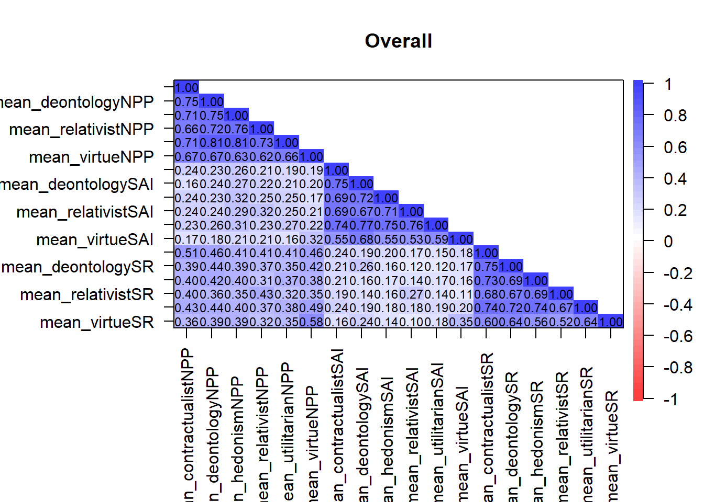
Using the stargazer package you can create nice tables:
# Descriptive stats for all mean_* variables
mean_vars <- str_subset(names(dat), "^mean_")
tmp_desc <- dat %>%
summarise(
N = n(),
across(all_of(mean_vars), list(mean = ~mean(.x, na.rm = TRUE),
sd = ~sd(.x, na.rm = TRUE)),
.names = "{.col}_{.fn}")
) %>%
pivot_longer(
cols = -N,
names_to = c("variable", ".value"),
names_pattern = "(.*)_(mean|sd)"
)
DT::datatable(data = tmp_desc)# Save descriptive table as HTML
setwd("outputs_analyzeData")
tmp_desc$mean <- round(x = tmp_desc$mean, digits = 2)
tmp_desc$sd <- round(x = tmp_desc$sd, digits = 2)
stargazer(tmp_desc, type = "html", summary = FALSE, out = "summaryTable_meansSDs.html")
<table style="text-align:center"><tr><td colspan="5" style="border-bottom: 1px solid black"></td></tr><tr><td style="text-align:left"></td><td>N</td><td>variable</td><td>mean</td><td>sd</td></tr>
<tr><td colspan="5" style="border-bottom: 1px solid black"></td></tr><tr><td style="text-align:left">1</td><td>297</td><td>mean_contractualistNPP</td><td>4.25</td><td>1.5</td></tr>
<tr><td style="text-align:left">2</td><td>297</td><td>mean_deontologyNPP</td><td>3.86</td><td>1.29</td></tr>
<tr><td style="text-align:left">3</td><td>297</td><td>mean_hedonismNPP</td><td>3.99</td><td>1.59</td></tr>
<tr><td style="text-align:left">4</td><td>297</td><td>mean_relativistNPP</td><td>4.08</td><td>1.66</td></tr>
<tr><td style="text-align:left">5</td><td>297</td><td>mean_utilitarianNPP</td><td>4.02</td><td>1.57</td></tr>
<tr><td style="text-align:left">6</td><td>297</td><td>mean_virtueNPP</td><td>4.63</td><td>1.33</td></tr>
<tr><td style="text-align:left">7</td><td>297</td><td>mean_contractualistSAI</td><td>4.39</td><td>1.47</td></tr>
<tr><td style="text-align:left">8</td><td>297</td><td>mean_deontologySAI</td><td>4.39</td><td>1.34</td></tr>
<tr><td style="text-align:left">9</td><td>297</td><td>mean_hedonismSAI</td><td>4.39</td><td>1.35</td></tr>
<tr><td style="text-align:left">10</td><td>297</td><td>mean_relativistSAI</td><td>4.58</td><td>1.58</td></tr>
<tr><td style="text-align:left">11</td><td>297</td><td>mean_utilitarianSAI</td><td>4.76</td><td>1.51</td></tr>
<tr><td style="text-align:left">12</td><td>297</td><td>mean_virtueSAI</td><td>5.17</td><td>1.25</td></tr>
<tr><td style="text-align:left">13</td><td>297</td><td>mean_contractualistSR</td><td>4.01</td><td>1.46</td></tr>
<tr><td style="text-align:left">14</td><td>297</td><td>mean_deontologySR</td><td>3.94</td><td>1.29</td></tr>
<tr><td style="text-align:left">15</td><td>297</td><td>mean_hedonismSR</td><td>4.38</td><td>1.46</td></tr>
<tr><td style="text-align:left">16</td><td>297</td><td>mean_relativistSR</td><td>4.14</td><td>1.69</td></tr>
<tr><td style="text-align:left">17</td><td>297</td><td>mean_utilitarianSR</td><td>4.35</td><td>1.5</td></tr>
<tr><td style="text-align:left">18</td><td>297</td><td>mean_virtueSR</td><td>4.84</td><td>1.26</td></tr>
<tr><td colspan="5" style="border-bottom: 1px solid black"></td></tr></table>EFA Overall
for NPP
#### Overall EFA
regExOverall <- "_NPP$"
psych::cor.plot(r = cor(dat[, str_detect(string = colnames(dat),
pattern = regExOverall)]
, use = "pairwise.complete.obs"),
upper = FALSE, xlas = 2, main = "Overall")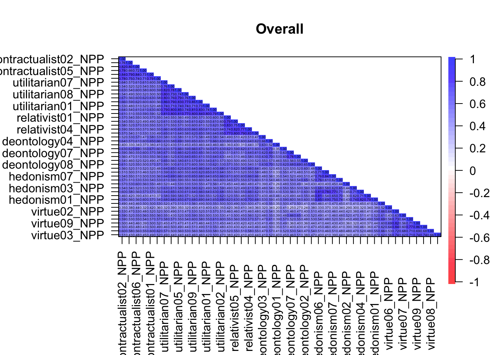
#> parallel analysis
tmp_parallelAnalysis <- dimensionalityTest(label = "Overall",
regEx = regExOverall, dataset = dat)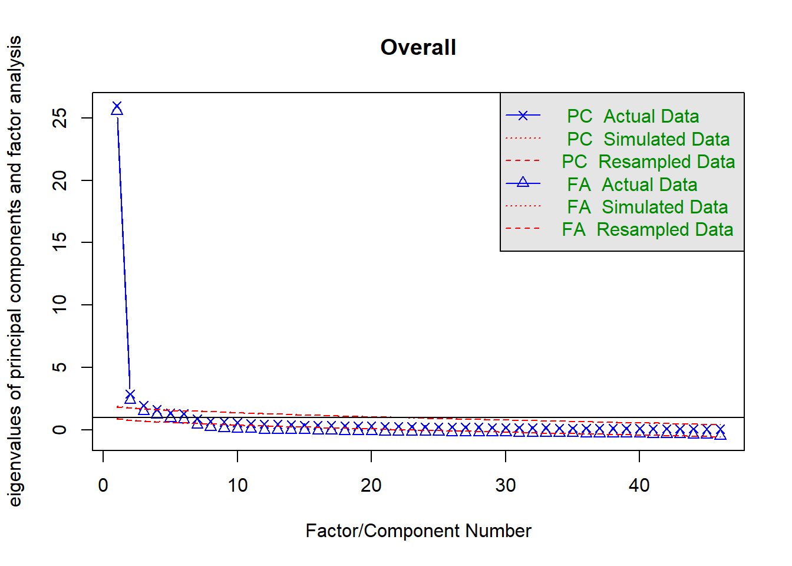
Parallel analysis suggests that the number of factors = 6 and the number of components = 3
Overall
Number of components: 3 Remark: factors scores were computed using “tenBerge”, which preserves correlation structure, but not as widely used in applied psych research (often “regression” used).
#> EFA
tmp_EFA_overall <- explorativeFactorAnalysis(label = "Overall",
regEx = regExOverall,
dataset = dat, nfac = tmp_parallelAnalysis$ncomp)Warning in fa.stats(r = r, f = f, phi = phi, n.obs = n.obs, np.obs = np.obs, :
The estimated weights for the factor scores are probably incorrect. Try a
different factor score estimation method.tmp_EFA_overall[[1]]Factor Analysis using method = minres
Call: fa(r = tmp_dat, nfactors = nfac, rotate = "promax", cor = "cor")
Standardized loadings (pattern matrix) based upon correlation matrix
MR1 MR3 MR2 h2 u2 com
contractualist02_NPP -0.05 0.93 -0.01 0.78 0.22 1.0
contractualist04_NPP -0.05 0.87 -0.03 0.66 0.34 1.0
contractualist06_NPP -0.15 0.99 -0.01 0.76 0.24 1.0
contractualist05_NPP 0.05 0.79 -0.05 0.64 0.36 1.0
contractualist01_NPP -0.15 0.99 0.01 0.78 0.22 1.0
contractualist03_NPP -0.13 0.89 0.08 0.71 0.29 1.1
utilitarian07_NPP 0.68 0.25 -0.06 0.74 0.26 1.3
utilitarian03_NPP 0.81 -0.02 0.04 0.68 0.32 1.0
utilitarian05_NPP 0.66 0.26 -0.03 0.73 0.27 1.3
utilitarian08_NPP 0.74 0.09 -0.01 0.65 0.35 1.0
utilitarian09_NPP 0.59 0.29 0.01 0.72 0.28 1.5
utilitarian04_NPP 0.71 0.22 -0.03 0.76 0.24 1.2
utilitarian01_NPP 0.75 -0.02 0.09 0.63 0.37 1.0
utilitarian06_NPP 0.57 0.25 0.08 0.72 0.28 1.4
utilitarian02_NPP 0.81 0.06 0.00 0.74 0.26 1.0
relativist01_NPP 0.50 0.23 0.06 0.54 0.46 1.5
relativist05_NPP 0.59 0.17 0.04 0.58 0.42 1.2
relativist03_NPP 0.49 0.25 0.05 0.54 0.46 1.5
relativist04_NPP 0.67 0.19 -0.02 0.66 0.34 1.2
relativist02_NPP 0.69 0.11 0.03 0.63 0.37 1.1
deontology03_NPP 0.25 0.49 -0.01 0.49 0.51 1.5
deontology04_NPP 0.21 0.59 0.06 0.66 0.34 1.3
deontology01_NPP 0.36 0.19 0.05 0.31 0.69 1.6
deontology05_NPP 0.22 0.58 0.04 0.63 0.37 1.3
deontology07_NPP 0.33 0.57 -0.09 0.62 0.38 1.7
deontology06_NPP 0.29 0.48 0.02 0.56 0.44 1.6
deontology02_NPP 0.57 0.22 -0.07 0.51 0.49 1.3
deontology08_NPP 0.21 0.51 0.07 0.55 0.45 1.4
hedonism06_NPP 1.03 -0.22 0.00 0.76 0.24 1.1
hedonism09_NPP 0.80 -0.08 0.04 0.58 0.42 1.0
hedonism07_NPP 0.90 -0.09 0.00 0.68 0.32 1.0
hedonism08_NPP 0.73 0.05 0.00 0.59 0.41 1.0
hedonism02_NPP 0.09 0.57 0.01 0.42 0.58 1.1
hedonism03_NPP 0.68 0.14 -0.09 0.56 0.44 1.1
hedonism04_NPP 0.88 -0.03 -0.03 0.71 0.29 1.0
hedonism05_NPP 1.01 -0.33 0.03 0.63 0.37 1.2
hedonism01_NPP 0.92 -0.08 0.02 0.77 0.23 1.0
virtue04_NPP 0.12 0.11 0.59 0.57 0.43 1.2
virtue06_NPP 0.00 -0.08 0.76 0.50 0.50 1.0
virtue02_NPP -0.02 0.01 0.92 0.82 0.18 1.0
virtue07_NPP 0.05 0.37 0.41 0.57 0.43 2.0
virtue05_NPP 0.17 0.08 0.67 0.73 0.27 1.2
virtue09_NPP -0.06 -0.08 1.00 0.83 0.17 1.0
virtue01_NPP 0.00 -0.09 0.97 0.83 0.17 1.0
virtue08_NPP 0.06 0.24 0.59 0.68 0.32 1.3
virtue03_NPP -0.05 0.07 0.81 0.68 0.32 1.0
MR1 MR3 MR2
SS loadings 14.68 9.42 5.77
Proportion Var 0.32 0.20 0.13
Cumulative Var 0.32 0.52 0.65
Proportion Explained 0.49 0.32 0.19
Cumulative Proportion 0.49 0.81 1.00
With factor correlations of
MR1 MR3 MR2
MR1 1.00 0.79 0.64
MR3 0.79 1.00 0.68
MR2 0.64 0.68 1.00
Mean item complexity = 1.2
Test of the hypothesis that 3 factors are sufficient.
df null model = 1035 with the objective function = 54.34 with Chi Square = 15206.79
df of the model are 900 and the objective function was 12.64
The root mean square of the residuals (RMSR) is 0.05
The df corrected root mean square of the residuals is 0.05
The harmonic n.obs is 297 with the empirical chi square 1386.56 with prob < 2.2e-23
The total n.obs was 297 with Likelihood Chi Square = 3512.5 with prob < 4.3e-304
Tucker Lewis Index of factoring reliability = 0.786
RMSEA index = 0.099 and the 90 % confidence intervals are 0.096 0.102
BIC = -1611.85
Fit based upon off diagonal values = 0.99
Measures of factor score adequacy
MR1 MR3 MR2
Correlation of (regression) scores with factors 0.99 0.98 0.98
Multiple R square of scores with factors 0.98 0.97 0.96
Minimum correlation of possible factor scores 0.96 0.93 0.92tmp_EFA_overall[[1]]$loadings
Loadings:
MR1 MR3 MR2
contractualist02_NPP 0.930
contractualist04_NPP 0.868
contractualist06_NPP -0.148 0.988
contractualist05_NPP 0.793
contractualist01_NPP -0.146 0.988
contractualist03_NPP -0.131 0.889
utilitarian07_NPP 0.685 0.253
utilitarian03_NPP 0.815
utilitarian05_NPP 0.660 0.256
utilitarian08_NPP 0.738
utilitarian09_NPP 0.592 0.290
utilitarian04_NPP 0.709 0.218
utilitarian01_NPP 0.750
utilitarian06_NPP 0.574 0.252
utilitarian02_NPP 0.808
relativist01_NPP 0.495 0.234
relativist05_NPP 0.585 0.173
relativist03_NPP 0.486 0.248
relativist04_NPP 0.667 0.192
relativist02_NPP 0.687 0.106
deontology03_NPP 0.251 0.493
deontology04_NPP 0.214 0.585
deontology01_NPP 0.357 0.190
deontology05_NPP 0.215 0.585
deontology07_NPP 0.326 0.565
deontology06_NPP 0.287 0.483
deontology02_NPP 0.568 0.224
deontology08_NPP 0.213 0.511
hedonism06_NPP 1.032 -0.219
hedonism09_NPP 0.802
hedonism07_NPP 0.900
hedonism08_NPP 0.726
hedonism02_NPP 0.565
hedonism03_NPP 0.685 0.142
hedonism04_NPP 0.883
hedonism05_NPP 1.013 -0.335
hedonism01_NPP 0.925
virtue04_NPP 0.122 0.107 0.588
virtue06_NPP 0.764
virtue02_NPP 0.918
virtue07_NPP 0.369 0.413
virtue05_NPP 0.174 0.667
virtue09_NPP 0.997
virtue01_NPP 0.968
virtue08_NPP 0.241 0.591
virtue03_NPP 0.813
MR1 MR3 MR2
SS loadings 13.399 8.113 5.408
Proportion Var 0.291 0.176 0.118
Cumulative Var 0.291 0.468 0.585## correlation factor scores
psych::cor.plot(tmp_EFA_overall[[1]]$scores)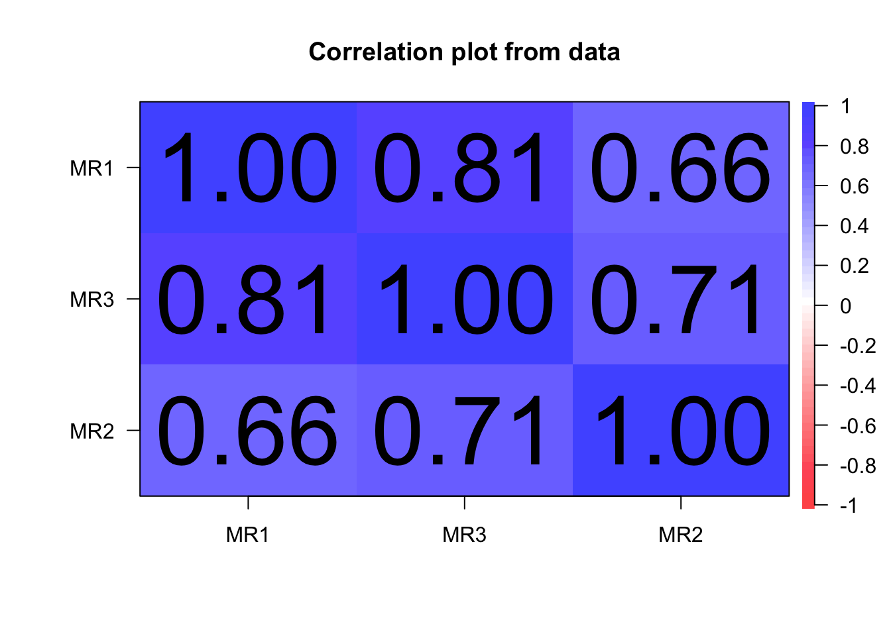
#> EFA (# of factors=5)
tmp_EFA_overall <- explorativeFactorAnalysis(label = "Overall",
regEx = regExOverall,
dataset = dat, nfac = 5)Warning in fa.stats(r = r, f = f, phi = phi, n.obs = n.obs, np.obs = np.obs, :
The estimated weights for the factor scores are probably incorrect. Try a
different factor score estimation method.tmp_EFA_overall[[1]]Factor Analysis using method = minres
Call: fa(r = tmp_dat, nfactors = nfac, rotate = "promax", cor = "cor")
Standardized loadings (pattern matrix) based upon correlation matrix
MR1 MR5 MR3 MR2 MR4 h2 u2 com
contractualist02_NPP 0.04 0.07 0.86 0.00 -0.04 0.81 0.19 1.0
contractualist04_NPP -0.16 0.15 0.89 -0.02 0.01 0.74 0.26 1.1
contractualist06_NPP -0.06 0.05 0.95 0.00 -0.05 0.81 0.19 1.0
contractualist05_NPP 0.14 0.09 0.71 -0.03 -0.05 0.66 0.34 1.1
contractualist01_NPP -0.03 0.05 0.95 0.02 -0.08 0.84 0.16 1.0
contractualist03_NPP 0.01 0.01 0.81 0.09 -0.03 0.73 0.27 1.0
utilitarian07_NPP 0.86 0.16 0.00 -0.06 -0.07 0.81 0.19 1.1
utilitarian03_NPP 0.66 0.37 -0.12 0.05 -0.09 0.71 0.29 1.7
utilitarian05_NPP 0.87 0.11 -0.03 -0.04 -0.01 0.80 0.20 1.0
utilitarian08_NPP 0.90 0.19 -0.15 -0.01 -0.10 0.74 0.26 1.2
utilitarian09_NPP 0.77 0.11 0.03 0.01 0.00 0.77 0.23 1.0
utilitarian04_NPP 0.80 0.20 -0.01 -0.04 -0.03 0.81 0.19 1.1
utilitarian01_NPP 0.70 0.28 -0.16 0.09 -0.06 0.68 0.32 1.5
utilitarian06_NPP 0.80 0.07 -0.02 0.08 0.00 0.78 0.22 1.0
utilitarian02_NPP 0.80 0.27 -0.13 0.00 -0.04 0.79 0.21 1.3
relativist01_NPP -0.15 0.09 0.05 0.02 0.90 0.80 0.20 1.1
relativist05_NPP 0.10 0.03 -0.11 0.00 0.87 0.80 0.20 1.1
relativist03_NPP -0.09 0.06 0.04 0.01 0.88 0.78 0.22 1.0
relativist04_NPP 0.15 0.15 -0.03 -0.06 0.73 0.80 0.20 1.2
relativist02_NPP 0.09 0.16 -0.11 -0.01 0.79 0.81 0.19 1.2
deontology03_NPP 0.55 -0.05 0.24 -0.01 0.02 0.52 0.48 1.4
deontology04_NPP 0.52 -0.16 0.25 0.05 0.21 0.69 0.31 2.1
deontology01_NPP 0.60 -0.01 -0.03 0.04 -0.02 0.35 0.65 1.0
deontology05_NPP 0.37 -0.07 0.32 0.02 0.23 0.64 0.36 2.8
deontology07_NPP 0.70 -0.13 0.21 -0.11 0.14 0.66 0.34 1.4
deontology06_NPP 0.81 -0.17 0.12 0.01 0.01 0.64 0.36 1.1
deontology02_NPP 0.47 0.25 0.11 -0.06 0.01 0.52 0.48 1.7
deontology08_NPP 0.56 -0.15 0.19 0.06 0.14 0.58 0.42 1.6
hedonism06_NPP 0.00 0.86 0.00 0.02 0.08 0.84 0.16 1.0
hedonism09_NPP 0.06 0.68 0.09 0.06 -0.02 0.64 0.36 1.1
hedonism07_NPP 0.05 0.68 0.04 0.01 0.13 0.73 0.27 1.1
hedonism08_NPP 0.06 0.58 0.17 0.02 0.06 0.63 0.37 1.2
hedonism02_NPP 0.26 -0.03 0.40 0.01 0.05 0.42 0.58 1.8
hedonism03_NPP 0.12 0.55 0.24 -0.07 0.01 0.60 0.40 1.5
hedonism04_NPP 0.01 0.82 0.20 -0.01 -0.06 0.82 0.18 1.1
hedonism05_NPP 0.09 0.76 -0.15 0.05 0.09 0.67 0.33 1.1
hedonism01_NPP 0.06 0.73 0.08 0.03 0.10 0.82 0.18 1.1
virtue04_NPP 0.15 -0.02 0.00 0.58 0.11 0.57 0.43 1.2
virtue06_NPP -0.18 0.07 -0.02 0.77 0.07 0.51 0.49 1.1
virtue02_NPP 0.03 -0.02 -0.01 0.92 -0.03 0.82 0.18 1.0
virtue07_NPP 0.27 -0.07 0.21 0.41 0.01 0.57 0.43 2.4
virtue05_NPP 0.10 0.05 0.02 0.66 0.10 0.73 0.27 1.1
virtue09_NPP -0.10 0.03 -0.03 1.00 -0.05 0.83 0.17 1.0
virtue01_NPP 0.01 0.04 -0.05 0.98 -0.09 0.83 0.17 1.0
virtue08_NPP 0.07 0.01 0.17 0.59 0.07 0.68 0.32 1.2
virtue03_NPP 0.08 -0.03 0.04 0.82 -0.10 0.69 0.31 1.1
MR1 MR5 MR3 MR2 MR4
SS loadings 10.33 6.33 5.94 5.70 4.13
Proportion Var 0.22 0.14 0.13 0.12 0.09
Cumulative Var 0.22 0.36 0.49 0.62 0.71
Proportion Explained 0.32 0.20 0.18 0.18 0.13
Cumulative Proportion 0.32 0.51 0.70 0.87 1.00
With factor correlations of
MR1 MR5 MR3 MR2 MR4
MR1 1.00 0.72 0.76 0.66 0.74
MR5 0.72 1.00 0.59 0.52 0.66
MR3 0.76 0.59 1.00 0.65 0.70
MR2 0.66 0.52 0.65 1.00 0.60
MR4 0.74 0.66 0.70 0.60 1.00
Mean item complexity = 1.3
Test of the hypothesis that 5 factors are sufficient.
df null model = 1035 with the objective function = 54.34 with Chi Square = 15206.79
df of the model are 815 and the objective function was 7.67
The root mean square of the residuals (RMSR) is 0.03
The df corrected root mean square of the residuals is 0.03
The harmonic n.obs is 297 with the empirical chi square 570.61 with prob < 1
The total n.obs was 297 with Likelihood Chi Square = 2119.95 with prob < 8e-117
Tucker Lewis Index of factoring reliability = 0.882
RMSEA index = 0.073 and the 90 % confidence intervals are 0.07 0.077
BIC = -2520.44
Fit based upon off diagonal values = 1
Measures of factor score adequacy
MR1 MR5 MR3 MR2 MR4
Correlation of (regression) scores with factors 0.99 0.98 0.98 0.98 0.98
Multiple R square of scores with factors 0.97 0.96 0.96 0.96 0.95
Minimum correlation of possible factor scores 0.94 0.91 0.93 0.92 0.90tmp_EFA_overall[[1]]$loadings
Loadings:
MR1 MR5 MR3 MR2 MR4
contractualist02_NPP 0.857
contractualist04_NPP -0.162 0.148 0.893
contractualist06_NPP 0.947
contractualist05_NPP 0.138 0.705
contractualist01_NPP 0.950
contractualist03_NPP 0.807
utilitarian07_NPP 0.865 0.161
utilitarian03_NPP 0.659 0.371 -0.117
utilitarian05_NPP 0.872 0.106
utilitarian08_NPP 0.899 0.189 -0.149
utilitarian09_NPP 0.766 0.106
utilitarian04_NPP 0.803 0.197
utilitarian01_NPP 0.697 0.282 -0.162
utilitarian06_NPP 0.796
utilitarian02_NPP 0.802 0.271 -0.128
relativist01_NPP -0.148 0.898
relativist05_NPP -0.107 0.871
relativist03_NPP 0.876
relativist04_NPP 0.149 0.151 0.726
relativist02_NPP 0.163 -0.112 0.791
deontology03_NPP 0.550 0.242
deontology04_NPP 0.520 -0.159 0.252 0.215
deontology01_NPP 0.598
deontology05_NPP 0.366 0.322 0.227
deontology07_NPP 0.697 -0.129 0.205 -0.107 0.142
deontology06_NPP 0.812 -0.175 0.117
deontology02_NPP 0.468 0.246 0.111
deontology08_NPP 0.564 -0.154 0.194 0.135
hedonism06_NPP 0.856
hedonism09_NPP 0.676
hedonism07_NPP 0.682 0.135
hedonism08_NPP 0.585 0.169
hedonism02_NPP 0.258 0.397
hedonism03_NPP 0.116 0.551 0.237
hedonism04_NPP 0.817 0.196
hedonism05_NPP 0.755 -0.152
hedonism01_NPP 0.727
virtue04_NPP 0.151 0.583 0.111
virtue06_NPP -0.182 0.767
virtue02_NPP 0.920
virtue07_NPP 0.268 0.213 0.413
virtue05_NPP 0.664 0.104
virtue09_NPP -0.102 1.003
virtue01_NPP 0.976
virtue08_NPP 0.169 0.591
virtue03_NPP 0.819
MR1 MR5 MR3 MR2 MR4
SS loadings 8.874 4.768 5.322 5.438 3.773
Proportion Var 0.193 0.104 0.116 0.118 0.082
Cumulative Var 0.193 0.297 0.412 0.530 0.612for SR
#### Overall EFA
regExOverall <- "_SR$"
psych::cor.plot(r = cor(dat[, str_detect(string = colnames(dat),
pattern = regExOverall)]
, use = "pairwise.complete.obs"),
upper = FALSE, xlas = 2, main = "Overall")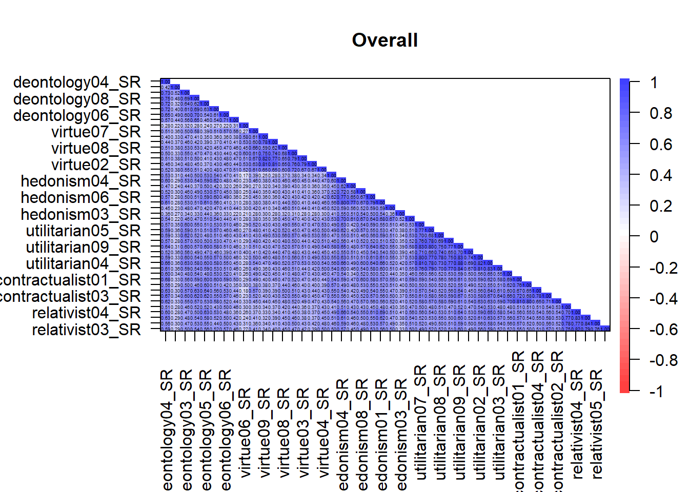
#> parallel analysis
tmp_parallelAnalysis <- dimensionalityTest(label = "Overall",
regEx = regExOverall, dataset = dat)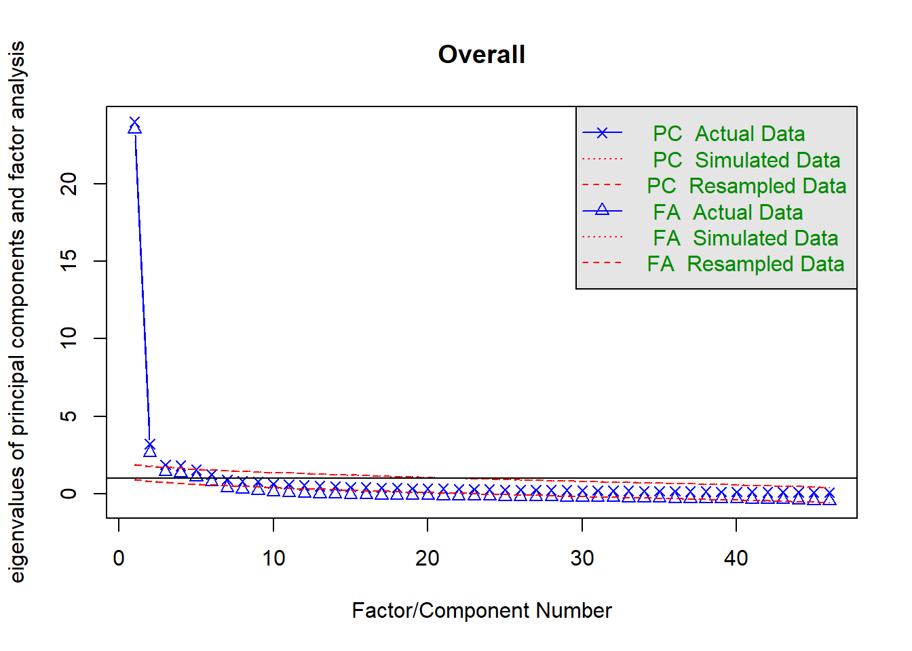
Parallel analysis suggests that the number of factors = 6 and the number of components = 4
Overall
Number of components: 4 Remark: factors scores were computed using “tenBerge”, which preserves correlation structure, but not as widely used in applied psych research (often “regression” used).
#> EFA
tmp_EFA_overall <- explorativeFactorAnalysis(label = "Overall",
regEx = regExOverall,
dataset = dat, nfac = tmp_parallelAnalysis$ncomp)Warning in fa.stats(r = r, f = f, phi = phi, n.obs = n.obs, np.obs = np.obs, :
The estimated weights for the factor scores are probably incorrect. Try a
different factor score estimation method.tmp_EFA_overall[[1]]Factor Analysis using method = minres
Call: fa(r = tmp_dat, nfactors = nfac, rotate = "promax", cor = "cor")
Standardized loadings (pattern matrix) based upon correlation matrix
MR4 MR1 MR3 MR2 h2 u2 com
deontology04_SR 0.15 0.72 0.05 -0.04 0.72 0.28 1.1
deontology01_SR -0.15 0.51 0.03 0.15 0.29 0.71 1.3
deontology03_SR -0.05 0.56 0.24 0.10 0.61 0.39 1.4
deontology08_SR -0.04 0.88 -0.02 0.01 0.71 0.29 1.0
deontology05_SR 0.39 0.50 -0.01 -0.09 0.60 0.40 2.0
deontology02_SR 0.19 0.58 0.07 -0.04 0.58 0.42 1.3
deontology06_SR -0.08 0.92 -0.08 0.01 0.66 0.34 1.0
deontology07_SR -0.21 0.81 -0.02 0.12 0.55 0.45 1.2
virtue06_SR 0.12 -0.14 -0.04 0.67 0.40 0.60 1.2
virtue07_SR -0.17 0.47 0.08 0.45 0.59 0.41 2.3
virtue09_SR 0.01 -0.05 -0.03 0.94 0.80 0.20 1.0
virtue01_SR 0.02 0.03 -0.03 0.85 0.74 0.26 1.0
virtue08_SR 0.04 0.21 0.06 0.55 0.59 0.41 1.3
virtue05_SR 0.14 0.02 0.02 0.77 0.78 0.22 1.1
virtue03_SR -0.03 0.15 -0.04 0.83 0.79 0.21 1.1
virtue02_SR 0.03 0.04 -0.04 0.87 0.79 0.21 1.0
virtue04_SR 0.01 0.18 0.08 0.61 0.63 0.37 1.2
hedonism02_SR 0.44 0.26 0.13 -0.12 0.48 0.52 2.0
hedonism04_SR 0.77 -0.05 0.13 0.02 0.72 0.28 1.1
hedonism05_SR 0.92 -0.30 -0.02 0.12 0.60 0.40 1.3
hedonism08_SR 0.67 0.02 0.08 0.02 0.57 0.43 1.0
hedonism06_SR 0.76 -0.05 0.13 0.00 0.67 0.33 1.1
hedonism01_SR 0.96 -0.20 0.04 0.07 0.79 0.21 1.1
hedonism07_SR 0.54 -0.02 0.10 0.15 0.49 0.51 1.2
hedonism03_SR 0.62 -0.11 0.03 0.05 0.35 0.65 1.1
hedonism09_SR 0.75 -0.07 0.04 0.07 0.60 0.40 1.0
utilitarian07_SR -0.01 0.04 0.87 -0.01 0.78 0.22 1.0
utilitarian05_SR -0.04 0.06 0.88 -0.05 0.76 0.24 1.0
utilitarian08_SR 0.11 -0.04 0.67 0.17 0.69 0.31 1.2
utilitarian06_SR -0.02 0.03 0.86 -0.03 0.73 0.27 1.0
utilitarian09_SR 0.09 0.03 0.85 -0.04 0.86 0.14 1.0
utilitarian01_SR 0.13 -0.09 0.70 0.08 0.62 0.38 1.1
utilitarian02_SR 0.09 -0.03 0.84 0.03 0.81 0.19 1.0
utilitarian04_SR 0.12 0.08 0.76 -0.01 0.83 0.17 1.1
utilitarian03_SR 0.05 0.07 0.86 -0.10 0.79 0.21 1.1
contractualist05_SR 0.19 0.43 0.16 0.03 0.53 0.47 1.7
contractualist01_SR 0.34 0.50 0.04 -0.01 0.65 0.35 1.8
contractualist06_SR 0.43 0.33 0.03 -0.01 0.53 0.47 1.9
contractualist04_SR 0.19 0.54 0.14 -0.06 0.60 0.40 1.4
contractualist03_SR 0.20 0.53 0.16 -0.03 0.65 0.35 1.5
contractualist02_SR 0.30 0.38 0.15 0.03 0.60 0.40 2.3
relativist01_SR 0.48 0.40 -0.11 -0.01 0.52 0.48 2.1
relativist04_SR 0.75 0.20 -0.05 -0.09 0.68 0.32 1.2
relativist02_SR 0.61 0.37 -0.08 -0.08 0.65 0.35 1.7
relativist05_SR 0.60 0.32 -0.13 0.02 0.60 0.40 1.7
relativist03_SR 0.53 0.42 -0.12 -0.02 0.61 0.39 2.0
MR4 MR1 MR3 MR2
SS loadings 9.0 7.86 7.15 5.58
Proportion Var 0.2 0.17 0.16 0.12
Cumulative Var 0.2 0.37 0.52 0.64
Proportion Explained 0.3 0.27 0.24 0.19
Cumulative Proportion 0.3 0.57 0.81 1.00
With factor correlations of
MR4 MR1 MR3 MR2
MR4 1.00 0.73 0.74 0.51
MR1 0.73 1.00 0.73 0.60
MR3 0.74 0.73 1.00 0.59
MR2 0.51 0.60 0.59 1.00
Mean item complexity = 1.3
Test of the hypothesis that 4 factors are sufficient.
df null model = 1035 with the objective function = 49.25 with Chi Square = 13780.8
df of the model are 857 and the objective function was 9.35
The root mean square of the residuals (RMSR) is 0.04
The df corrected root mean square of the residuals is 0.04
The harmonic n.obs is 297 with the empirical chi square 1003.53 with prob < 0.00037
The total n.obs was 297 with Likelihood Chi Square = 2590.3 with prob < 2.7e-173
Tucker Lewis Index of factoring reliability = 0.834
RMSEA index = 0.082 and the 90 % confidence intervals are 0.079 0.086
BIC = -2289.23
Fit based upon off diagonal values = 0.99
Measures of factor score adequacy
MR4 MR1 MR3 MR2
Correlation of (regression) scores with factors 0.98 0.98 0.98 0.98
Multiple R square of scores with factors 0.96 0.95 0.97 0.96
Minimum correlation of possible factor scores 0.92 0.90 0.94 0.91tmp_EFA_overall[[1]]$loadings
Loadings:
MR4 MR1 MR3 MR2
deontology04_SR 0.147 0.720
deontology01_SR -0.146 0.513 0.150
deontology03_SR 0.564 0.238
deontology08_SR 0.884
deontology05_SR 0.390 0.499
deontology02_SR 0.190 0.584
deontology06_SR 0.922
deontology07_SR -0.210 0.814 0.122
virtue06_SR 0.121 -0.140 0.672
virtue07_SR -0.172 0.466 0.449
virtue09_SR 0.937
virtue01_SR 0.853
virtue08_SR 0.214 0.549
virtue05_SR 0.139 0.774
virtue03_SR 0.152 0.831
virtue02_SR 0.872
virtue04_SR 0.176 0.608
hedonism02_SR 0.442 0.263 0.126 -0.123
hedonism04_SR 0.774 0.126
hedonism05_SR 0.920 -0.301 0.125
hedonism08_SR 0.671
hedonism06_SR 0.760 0.131
hedonism01_SR 0.960 -0.201
hedonism07_SR 0.542 0.151
hedonism03_SR 0.625 -0.110
hedonism09_SR 0.753
utilitarian07_SR 0.870
utilitarian05_SR 0.878
utilitarian08_SR 0.106 0.673 0.166
utilitarian06_SR 0.860
utilitarian09_SR 0.851
utilitarian01_SR 0.134 0.699
utilitarian02_SR 0.837
utilitarian04_SR 0.122 0.765
utilitarian03_SR 0.858 -0.104
contractualist05_SR 0.188 0.427 0.159
contractualist01_SR 0.338 0.500
contractualist06_SR 0.431 0.327
contractualist04_SR 0.187 0.544 0.141
contractualist03_SR 0.202 0.534 0.162
contractualist02_SR 0.296 0.380 0.153
relativist01_SR 0.475 0.395 -0.110
relativist04_SR 0.747 0.203
relativist02_SR 0.609 0.368
relativist05_SR 0.595 0.323 -0.129
relativist03_SR 0.528 0.423 -0.121
MR4 MR1 MR3 MR2
SS loadings 7.549 6.461 6.271 5.176
Proportion Var 0.164 0.140 0.136 0.113
Cumulative Var 0.164 0.305 0.441 0.553## correlation factor scores
psych::cor.plot(tmp_EFA_overall[[1]]$scores)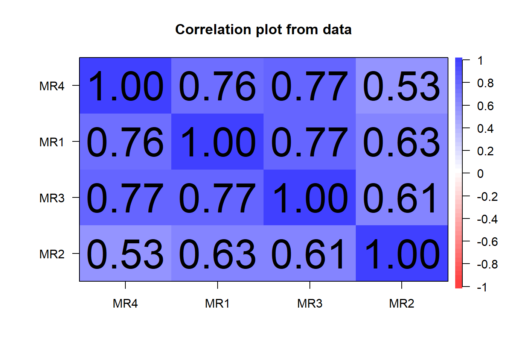
#> EFA (# of factors=5)
tmp_EFA_overall <- explorativeFactorAnalysis(label = "Overall",
regEx = regExOverall,
dataset = dat, nfac = 5)Warning in fa.stats(r = r, f = f, phi = phi, n.obs = n.obs, np.obs = np.obs, :
The estimated weights for the factor scores are probably incorrect. Try a
different factor score estimation method.tmp_EFA_overall[[1]]Factor Analysis using method = minres
Call: fa(r = tmp_dat, nfactors = nfac, rotate = "promax", cor = "cor")
Standardized loadings (pattern matrix) based upon correlation matrix
MR1 MR3 MR4 MR2 MR5 h2 u2 com
deontology04_SR 0.73 0.02 0.09 -0.05 0.08 0.73 0.27 1.1
deontology01_SR 0.55 0.00 -0.11 0.14 -0.05 0.29 0.71 1.2
deontology03_SR 0.61 0.21 -0.02 0.09 -0.06 0.62 0.38 1.3
deontology08_SR 0.91 -0.06 -0.06 -0.01 0.04 0.72 0.28 1.0
deontology05_SR 0.50 -0.02 0.30 -0.10 0.14 0.60 0.40 1.9
deontology02_SR 0.68 0.00 0.25 -0.07 -0.07 0.62 0.38 1.3
deontology06_SR 0.92 -0.11 -0.14 0.00 0.10 0.66 0.34 1.1
deontology07_SR 0.81 -0.03 -0.24 0.12 0.05 0.54 0.46 1.2
virtue06_SR -0.19 -0.01 0.05 0.68 0.10 0.41 0.59 1.2
virtue07_SR 0.54 0.04 -0.06 0.43 -0.15 0.60 0.40 2.1
virtue09_SR -0.02 -0.03 0.07 0.93 -0.08 0.80 0.20 1.0
virtue01_SR 0.02 -0.02 0.01 0.85 0.01 0.75 0.25 1.0
virtue08_SR 0.22 0.06 0.04 0.54 -0.01 0.59 0.41 1.4
virtue05_SR 0.00 0.04 0.09 0.78 0.07 0.78 0.22 1.0
virtue03_SR 0.18 -0.05 0.02 0.82 -0.06 0.79 0.21 1.1
virtue02_SR 0.06 -0.05 0.06 0.86 -0.04 0.79 0.21 1.0
virtue04_SR 0.13 0.11 -0.07 0.62 0.11 0.64 0.36 1.3
hedonism02_SR 0.33 0.08 0.46 -0.14 -0.01 0.51 0.49 2.1
hedonism04_SR 0.00 0.09 0.76 0.01 0.04 0.74 0.26 1.0
hedonism05_SR -0.25 -0.06 0.92 0.11 0.04 0.62 0.38 1.2
hedonism08_SR 0.12 0.00 0.76 -0.01 -0.08 0.63 0.37 1.1
hedonism06_SR 0.03 0.07 0.82 -0.02 -0.05 0.72 0.28 1.0
hedonism01_SR -0.16 0.00 0.93 0.05 0.08 0.81 0.19 1.1
hedonism07_SR 0.02 0.07 0.53 0.14 0.02 0.50 0.50 1.2
hedonism03_SR -0.03 -0.03 0.70 0.03 -0.07 0.39 0.61 1.0
hedonism09_SR 0.00 -0.01 0.77 0.06 0.01 0.63 0.37 1.0
utilitarian07_SR 0.05 0.89 0.00 0.00 -0.07 0.78 0.22 1.0
utilitarian05_SR 0.07 0.90 -0.03 -0.04 -0.06 0.76 0.24 1.0
utilitarian08_SR -0.08 0.72 0.04 0.18 0.05 0.70 0.30 1.2
utilitarian06_SR 0.03 0.89 -0.03 -0.02 -0.03 0.73 0.27 1.0
utilitarian09_SR 0.00 0.90 0.02 -0.03 0.04 0.86 0.14 1.0
utilitarian01_SR -0.13 0.75 0.06 0.09 0.06 0.63 0.37 1.1
utilitarian02_SR -0.07 0.89 0.01 0.04 0.05 0.82 0.18 1.0
utilitarian04_SR 0.06 0.80 0.06 -0.01 0.04 0.84 0.16 1.0
utilitarian03_SR 0.07 0.89 0.03 -0.10 -0.02 0.79 0.21 1.0
contractualist05_SR 0.41 0.16 0.11 0.02 0.11 0.53 0.47 1.6
contractualist01_SR 0.55 0.00 0.33 -0.03 0.03 0.67 0.33 1.6
contractualist06_SR 0.35 0.01 0.38 -0.02 0.08 0.54 0.46 2.1
contractualist04_SR 0.59 0.11 0.18 -0.07 0.00 0.61 0.39 1.3
contractualist03_SR 0.55 0.14 0.16 -0.04 0.06 0.66 0.34 1.3
contractualist02_SR 0.43 0.12 0.29 0.02 0.01 0.62 0.38 2.0
relativist01_SR 0.10 0.00 -0.09 0.03 0.82 0.71 0.29 1.1
relativist04_SR -0.06 0.05 0.24 -0.05 0.75 0.81 0.19 1.2
relativist02_SR 0.06 0.03 0.02 -0.04 0.86 0.85 0.15 1.0
relativist05_SR 0.01 -0.02 0.01 0.07 0.87 0.81 0.19 1.0
relativist03_SR 0.15 -0.02 -0.02 0.02 0.80 0.77 0.23 1.1
MR1 MR3 MR4 MR2 MR5
SS loadings 7.44 7.29 6.71 5.53 3.99
Proportion Var 0.16 0.16 0.15 0.12 0.09
Cumulative Var 0.16 0.32 0.47 0.59 0.67
Proportion Explained 0.24 0.24 0.22 0.18 0.13
Cumulative Proportion 0.24 0.48 0.69 0.87 1.00
With factor correlations of
MR1 MR3 MR4 MR2 MR5
MR1 1.00 0.75 0.72 0.60 0.66
MR3 0.75 1.00 0.75 0.59 0.65
MR4 0.72 0.75 1.00 0.50 0.69
MR2 0.60 0.59 0.50 1.00 0.45
MR5 0.66 0.65 0.69 0.45 1.00
Mean item complexity = 1.2
Test of the hypothesis that 5 factors are sufficient.
df null model = 1035 with the objective function = 49.25 with Chi Square = 13780.8
df of the model are 815 and the objective function was 7.02
The root mean square of the residuals (RMSR) is 0.03
The df corrected root mean square of the residuals is 0.03
The harmonic n.obs is 297 with the empirical chi square 574.61 with prob < 1
The total n.obs was 297 with Likelihood Chi Square = 1939.66 with prob < 2.4e-93
Tucker Lewis Index of factoring reliability = 0.886
RMSEA index = 0.068 and the 90 % confidence intervals are 0.064 0.072
BIC = -2700.73
Fit based upon off diagonal values = 1
Measures of factor score adequacy
MR1 MR3 MR4 MR2 MR5
Correlation of (regression) scores with factors 0.98 0.99 0.98 0.98 0.97
Multiple R square of scores with factors 0.95 0.97 0.95 0.96 0.95
Minimum correlation of possible factor scores 0.91 0.94 0.91 0.91 0.90tmp_EFA_overall[[1]]$loadings
Loadings:
MR1 MR3 MR4 MR2 MR5
deontology04_SR 0.734
deontology01_SR 0.545 -0.108 0.140
deontology03_SR 0.610 0.212
deontology08_SR 0.913
deontology05_SR 0.497 0.298 0.142
deontology02_SR 0.675 0.252
deontology06_SR 0.918 -0.106 -0.138
deontology07_SR 0.812 -0.239 0.116
virtue06_SR -0.190 0.682
virtue07_SR 0.540 0.433 -0.148
virtue09_SR 0.928
virtue01_SR 0.852
virtue08_SR 0.224 0.543
virtue05_SR 0.776
virtue03_SR 0.180 0.822
virtue02_SR 0.865
virtue04_SR 0.126 0.114 0.616 0.109
hedonism02_SR 0.325 0.459 -0.142
hedonism04_SR 0.760
hedonism05_SR -0.252 0.921 0.112
hedonism08_SR 0.121 0.763
hedonism06_SR 0.819
hedonism01_SR -0.163 0.926
hedonism07_SR 0.534 0.140
hedonism03_SR 0.696
hedonism09_SR 0.772
utilitarian07_SR 0.893
utilitarian05_SR 0.903
utilitarian08_SR 0.720 0.176
utilitarian06_SR 0.892
utilitarian09_SR 0.897
utilitarian01_SR -0.130 0.749
utilitarian02_SR 0.892
utilitarian04_SR 0.800
utilitarian03_SR 0.885
contractualist05_SR 0.413 0.160 0.107 0.109
contractualist01_SR 0.551 0.328
contractualist06_SR 0.351 0.379
contractualist04_SR 0.591 0.107 0.184
contractualist03_SR 0.552 0.144 0.156
contractualist02_SR 0.426 0.123 0.293
relativist01_SR 0.104 0.820
relativist04_SR 0.242 0.746
relativist02_SR 0.864
relativist05_SR 0.870
relativist03_SR 0.146 0.798
MR1 MR3 MR4 MR2 MR5
SS loadings 6.407 6.707 5.881 5.130 3.548
Proportion Var 0.139 0.146 0.128 0.112 0.077
Cumulative Var 0.139 0.285 0.413 0.524 0.602for SAI
#### Overall EFA
regExOverall <- "_SAI$"
psych::cor.plot(r = cor(dat[, str_detect(string = colnames(dat),
pattern = regExOverall)]
, use = "pairwise.complete.obs"),
upper = FALSE, xlas = 2, main = "Overall")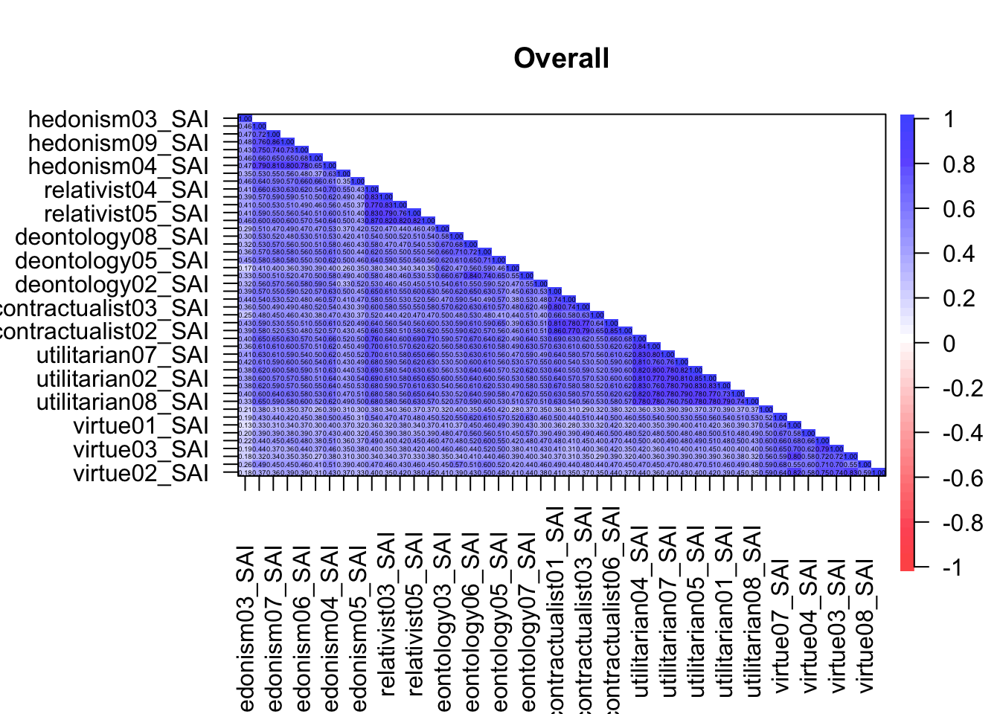
#> parallel analysis
tmp_parallelAnalysis <- dimensionalityTest(label = "Overall",
regEx = regExOverall, dataset = dat)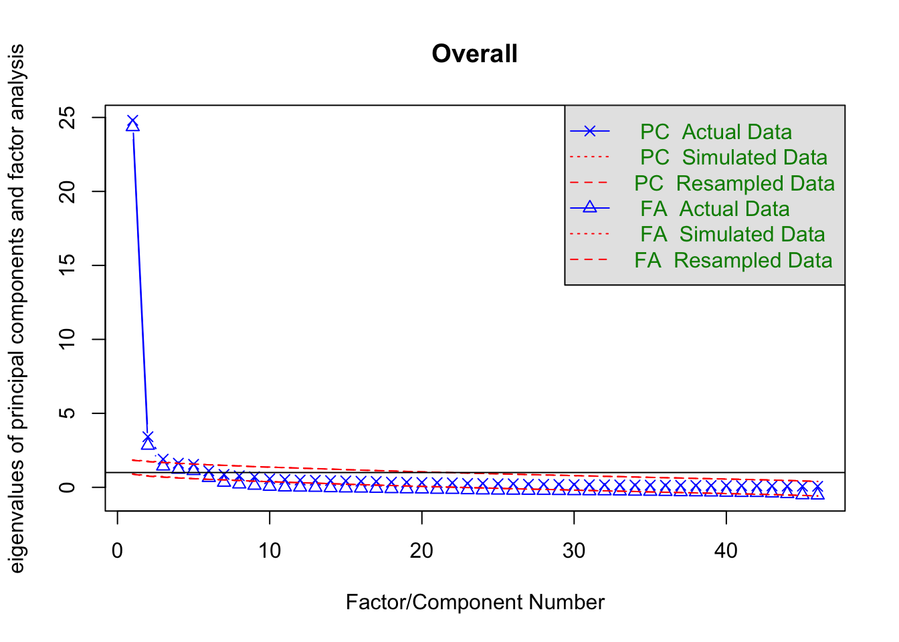
Parallel analysis suggests that the number of factors = 6 and the number of components = 3
Overall
Number of components: 3 Remark: factors scores were computed using “tenBerge”, which preserves correlation structure, but not as widely used in applied psych research (often “regression” used).
#> EFA
tmp_EFA_overall <- explorativeFactorAnalysis(label = "Overall",
regEx = regExOverall,
dataset = dat, nfac = tmp_parallelAnalysis$ncomp)Warning in fa.stats(r = r, f = f, phi = phi, n.obs = n.obs, np.obs = np.obs, :
The estimated weights for the factor scores are probably incorrect. Try a
different factor score estimation method.tmp_EFA_overall[[1]]Factor Analysis using method = minres
Call: fa(r = tmp_dat, nfactors = nfac, rotate = "promax", cor = "cor")
Standardized loadings (pattern matrix) based upon correlation matrix
MR1 MR3 MR2 h2 u2 com
hedonism03_SAI 0.06 0.57 -0.12 0.32 0.68 1.1
hedonism01_SAI 0.03 0.81 0.03 0.72 0.28 1.0
hedonism07_SAI -0.03 0.87 0.01 0.74 0.26 1.0
hedonism09_SAI -0.05 0.89 0.03 0.74 0.26 1.0
hedonism06_SAI -0.14 0.88 0.12 0.71 0.29 1.1
hedonism08_SAI 0.08 0.68 0.00 0.55 0.45 1.0
hedonism04_SAI -0.01 0.84 0.09 0.79 0.21 1.0
hedonism02_SAI 0.15 0.42 0.12 0.39 0.61 1.5
hedonism05_SAI -0.03 0.67 0.06 0.48 0.52 1.0
relativist04_SAI 0.48 0.46 -0.06 0.72 0.28 2.0
relativist03_SAI 0.40 0.46 -0.06 0.59 0.41 2.0
relativist01_SAI 0.36 0.39 0.02 0.52 0.48 2.0
relativist05_SAI 0.42 0.43 -0.04 0.60 0.40 2.0
relativist02_SAI 0.38 0.49 -0.02 0.65 0.35 1.9
deontology03_SAI 0.63 -0.02 0.16 0.52 0.48 1.1
deontology08_SAI 0.59 0.05 0.15 0.54 0.46 1.1
deontology06_SAI 0.75 -0.07 0.15 0.65 0.35 1.1
deontology04_SAI 0.52 0.10 0.27 0.65 0.35 1.6
deontology05_SAI 0.37 0.25 0.25 0.58 0.42 2.6
deontology01_SAI 0.59 -0.15 0.21 0.40 0.60 1.4
deontology07_SAI 0.76 -0.09 0.15 0.63 0.37 1.1
deontology02_SAI 0.30 0.34 0.12 0.47 0.53 2.3
contractualist01_SAI 0.86 0.02 -0.05 0.71 0.29 1.0
contractualist04_SAI 0.76 0.08 -0.11 0.57 0.43 1.1
contractualist03_SAI 0.92 -0.12 -0.04 0.65 0.35 1.0
contractualist05_SAI 0.74 -0.08 0.01 0.47 0.53 1.0
contractualist06_SAI 0.76 0.05 0.01 0.66 0.34 1.0
contractualist02_SAI 0.93 -0.04 -0.12 0.69 0.31 1.0
utilitarian04_SAI 0.77 0.21 -0.07 0.79 0.21 1.2
utilitarian09_SAI 0.78 0.17 -0.12 0.72 0.28 1.1
utilitarian07_SAI 0.70 0.21 -0.05 0.70 0.30 1.2
utilitarian06_SAI 0.63 0.24 -0.01 0.67 0.33 1.3
utilitarian05_SAI 0.72 0.18 -0.04 0.71 0.29 1.1
utilitarian02_SAI 0.71 0.18 -0.01 0.71 0.29 1.1
utilitarian01_SAI 0.72 0.20 -0.06 0.71 0.29 1.2
utilitarian03_SAI 0.65 0.25 -0.03 0.69 0.31 1.3
utilitarian08_SAI 0.66 0.23 -0.07 0.67 0.33 1.3
virtue06_SAI -0.06 0.11 0.64 0.45 0.55 1.1
virtue07_SAI 0.37 -0.12 0.61 0.67 0.33 1.7
virtue01_SAI -0.08 -0.03 0.91 0.71 0.29 1.0
virtue04_SAI 0.39 -0.18 0.58 0.59 0.41 1.9
virtue05_SAI 0.00 0.07 0.83 0.75 0.25 1.0
virtue03_SAI -0.14 0.09 0.90 0.74 0.26 1.1
virtue09_SAI -0.13 -0.01 0.92 0.71 0.29 1.0
virtue08_SAI 0.11 0.11 0.62 0.60 0.40 1.1
virtue02_SAI -0.11 0.02 0.93 0.77 0.23 1.0
MR1 MR3 MR2
SS loadings 14.30 8.55 6.24
Proportion Var 0.31 0.19 0.14
Cumulative Var 0.31 0.50 0.63
Proportion Explained 0.49 0.29 0.21
Cumulative Proportion 0.49 0.79 1.00
With factor correlations of
MR1 MR3 MR2
MR1 1.00 0.77 0.64
MR3 0.77 1.00 0.53
MR2 0.64 0.53 1.00
Mean item complexity = 1.3
Test of the hypothesis that 3 factors are sufficient.
df null model = 1035 with the objective function = 52.18 with Chi Square = 14600.85
df of the model are 900 and the objective function was 12.6
The root mean square of the residuals (RMSR) is 0.05
The df corrected root mean square of the residuals is 0.05
The harmonic n.obs is 297 with the empirical chi square 1444.36 with prob < 5.3e-28
The total n.obs was 297 with Likelihood Chi Square = 3499.47 with prob < 5.5e-302
Tucker Lewis Index of factoring reliability = 0.778
RMSEA index = 0.099 and the 90 % confidence intervals are 0.095 0.102
BIC = -1624.89
Fit based upon off diagonal values = 0.99
Measures of factor score adequacy
MR1 MR3 MR2
Correlation of (regression) scores with factors 0.99 0.98 0.98
Multiple R square of scores with factors 0.97 0.96 0.95
Minimum correlation of possible factor scores 0.95 0.92 0.91tmp_EFA_overall[[1]]$loadings
Loadings:
MR1 MR3 MR2
hedonism03_SAI 0.575 -0.118
hedonism01_SAI 0.809
hedonism07_SAI 0.874
hedonism09_SAI 0.888
hedonism06_SAI -0.138 0.878 0.121
hedonism08_SAI 0.677
hedonism04_SAI 0.844
hedonism02_SAI 0.154 0.417 0.122
hedonism05_SAI 0.675
relativist04_SAI 0.479 0.463
relativist03_SAI 0.398 0.456
relativist01_SAI 0.356 0.394
relativist05_SAI 0.424 0.429
relativist02_SAI 0.382 0.485
deontology03_SAI 0.625 0.157
deontology08_SAI 0.589 0.152
deontology06_SAI 0.755 0.149
deontology04_SAI 0.520 0.104 0.271
deontology05_SAI 0.365 0.251 0.250
deontology01_SAI 0.589 -0.150 0.214
deontology07_SAI 0.761 0.148
deontology02_SAI 0.298 0.337 0.125
contractualist01_SAI 0.857
contractualist04_SAI 0.755 -0.106
contractualist03_SAI 0.918 -0.116
contractualist05_SAI 0.740
contractualist06_SAI 0.764
contractualist02_SAI 0.934 -0.119
utilitarian04_SAI 0.766 0.205
utilitarian09_SAI 0.784 0.170 -0.121
utilitarian07_SAI 0.696 0.210
utilitarian06_SAI 0.633 0.236
utilitarian05_SAI 0.721 0.179
utilitarian02_SAI 0.706 0.177
utilitarian01_SAI 0.717 0.198
utilitarian03_SAI 0.646 0.247
utilitarian08_SAI 0.661 0.235
virtue06_SAI 0.114 0.642
virtue07_SAI 0.370 -0.117 0.612
virtue01_SAI 0.908
virtue04_SAI 0.385 -0.176 0.582
virtue05_SAI 0.825
virtue03_SAI -0.140 0.896
virtue09_SAI -0.125 0.923
virtue08_SAI 0.114 0.106 0.625
virtue02_SAI -0.110 0.935
MR1 MR3 MR2
SS loadings 12.603 6.835 5.971
Proportion Var 0.274 0.149 0.130
Cumulative Var 0.274 0.423 0.552## correlation factor scores
psych::cor.plot(tmp_EFA_overall[[1]]$scores)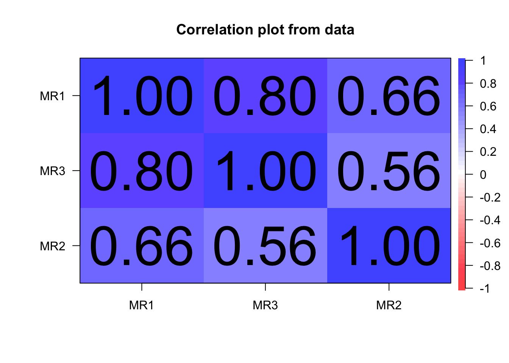
#> EFA (# of factors=5)
tmp_EFA_overall <- explorativeFactorAnalysis(label = "Overall",
regEx = regExOverall,
dataset = dat, nfac = 5)Warning in fa.stats(r = r, f = f, phi = phi, n.obs = n.obs, np.obs = np.obs, :
The estimated weights for the factor scores are probably incorrect. Try a
different factor score estimation method.tmp_EFA_overall[[1]]Factor Analysis using method = minres
Call: fa(r = tmp_dat, nfactors = nfac, rotate = "promax", cor = "cor")
Standardized loadings (pattern matrix) based upon correlation matrix
MR4 MR1 MR2 MR3 MR5 h2 u2 com
hedonism03_SAI -0.07 0.11 -0.13 0.50 0.16 0.34 0.66 1.5
hedonism01_SAI 0.10 -0.03 -0.02 0.80 0.03 0.74 0.26 1.0
hedonism07_SAI 0.07 -0.07 -0.03 0.87 0.04 0.76 0.24 1.0
hedonism09_SAI 0.01 -0.06 -0.01 0.88 0.06 0.77 0.23 1.0
hedonism06_SAI 0.04 -0.15 0.07 0.92 -0.02 0.75 0.25 1.1
hedonism08_SAI -0.03 0.14 -0.07 0.77 -0.05 0.61 0.39 1.1
hedonism04_SAI 0.00 -0.01 0.06 0.81 0.10 0.80 0.20 1.0
hedonism02_SAI -0.06 0.16 0.13 0.33 0.19 0.40 0.60 2.6
hedonism05_SAI 0.11 -0.07 -0.01 0.78 -0.14 0.54 0.46 1.1
relativist04_SAI 0.26 0.11 0.03 0.08 0.59 0.84 0.16 1.5
relativist03_SAI 0.09 0.14 0.05 0.03 0.71 0.79 0.21 1.1
relativist01_SAI 0.09 0.08 0.15 -0.04 0.71 0.74 0.26 1.2
relativist05_SAI 0.24 0.05 0.07 0.01 0.65 0.77 0.23 1.3
relativist02_SAI 0.12 0.08 0.09 0.05 0.71 0.85 0.15 1.1
deontology03_SAI 0.23 0.47 0.10 0.09 -0.15 0.55 0.45 1.9
deontology08_SAI 0.00 0.61 0.10 0.14 -0.05 0.59 0.41 1.2
deontology06_SAI 0.27 0.57 0.09 0.05 -0.16 0.69 0.31 1.7
deontology04_SAI 0.17 0.40 0.23 0.18 -0.09 0.67 0.33 2.6
deontology05_SAI -0.03 0.37 0.24 0.24 0.08 0.60 0.40 2.7
deontology01_SAI 0.41 0.31 0.16 -0.02 -0.25 0.46 0.54 3.0
deontology07_SAI 0.22 0.62 0.09 0.02 -0.13 0.66 0.34 1.4
deontology02_SAI 0.13 0.23 0.07 0.43 -0.11 0.50 0.50 1.9
contractualist01_SAI -0.03 0.88 -0.08 -0.01 0.15 0.79 0.21 1.1
contractualist04_SAI -0.08 0.82 -0.14 0.05 0.16 0.66 0.34 1.2
contractualist03_SAI -0.11 1.03 -0.08 -0.13 0.13 0.78 0.22 1.1
contractualist05_SAI 0.12 0.65 -0.02 -0.07 0.04 0.50 0.50 1.1
contractualist06_SAI -0.14 0.89 -0.03 0.03 0.15 0.77 0.23 1.1
contractualist02_SAI -0.05 0.99 -0.16 -0.08 0.15 0.80 0.20 1.1
utilitarian04_SAI 0.79 0.07 -0.05 0.00 0.17 0.85 0.15 1.1
utilitarian09_SAI 0.81 0.10 -0.12 0.03 0.08 0.78 0.22 1.1
utilitarian07_SAI 0.79 0.00 -0.02 0.01 0.15 0.77 0.23 1.1
utilitarian06_SAI 0.87 -0.11 0.01 0.06 0.10 0.78 0.22 1.1
utilitarian05_SAI 0.93 -0.06 -0.03 0.02 0.05 0.83 0.17 1.0
utilitarian02_SAI 0.89 -0.05 0.01 0.00 0.09 0.82 0.18 1.0
utilitarian01_SAI 0.84 0.00 -0.05 0.04 0.09 0.79 0.21 1.0
utilitarian03_SAI 0.73 0.01 -0.02 0.09 0.11 0.75 0.25 1.1
utilitarian08_SAI 0.82 -0.03 -0.06 0.09 0.06 0.75 0.25 1.1
virtue06_SAI -0.02 -0.09 0.68 0.05 0.09 0.46 0.54 1.1
virtue07_SAI 0.19 0.18 0.63 -0.13 0.00 0.67 0.33 1.4
virtue01_SAI -0.01 -0.12 0.95 -0.07 0.03 0.72 0.28 1.0
virtue04_SAI 0.16 0.25 0.58 -0.13 -0.08 0.59 0.41 1.7
virtue05_SAI -0.03 -0.01 0.85 0.05 0.03 0.75 0.25 1.0
virtue03_SAI -0.12 -0.07 0.92 0.10 0.01 0.74 0.26 1.1
virtue09_SAI -0.06 -0.14 0.98 -0.07 0.07 0.73 0.27 1.1
virtue08_SAI -0.04 0.12 0.63 0.10 0.03 0.60 0.40 1.1
virtue02_SAI -0.10 -0.09 0.99 -0.05 0.10 0.79 0.21 1.1
MR4 MR1 MR2 MR3 MR5
SS loadings 8.03 7.39 6.34 6.28 3.86
Proportion Var 0.17 0.16 0.14 0.14 0.08
Cumulative Var 0.17 0.34 0.47 0.61 0.69
Proportion Explained 0.25 0.23 0.20 0.20 0.12
Cumulative Proportion 0.25 0.48 0.68 0.88 1.00
With factor correlations of
MR4 MR1 MR2 MR3 MR5
MR4 1.00 0.79 0.63 0.74 0.54
MR1 0.79 1.00 0.65 0.74 0.53
MR2 0.63 0.65 1.00 0.57 0.35
MR3 0.74 0.74 0.57 1.00 0.59
MR5 0.54 0.53 0.35 0.59 1.00
Mean item complexity = 1.3
Test of the hypothesis that 5 factors are sufficient.
df null model = 1035 with the objective function = 52.18 with Chi Square = 14600.85
df of the model are 815 and the objective function was 7.05
The root mean square of the residuals (RMSR) is 0.03
The df corrected root mean square of the residuals is 0.03
The harmonic n.obs is 297 with the empirical chi square 482.05 with prob < 1
The total n.obs was 297 with Likelihood Chi Square = 1948.83 with prob < 1.7e-94
Tucker Lewis Index of factoring reliability = 0.892
RMSEA index = 0.068 and the 90 % confidence intervals are 0.065 0.072
BIC = -2691.56
Fit based upon off diagonal values = 1
Measures of factor score adequacy
MR4 MR1 MR2 MR3 MR5
Correlation of (regression) scores with factors 0.99 0.98 0.98 0.98 0.96
Multiple R square of scores with factors 0.97 0.96 0.96 0.96 0.93
Minimum correlation of possible factor scores 0.94 0.93 0.92 0.91 0.85tmp_EFA_overall[[1]]$loadings
Loadings:
MR4 MR1 MR2 MR3 MR5
hedonism03_SAI 0.106 -0.131 0.505 0.165
hedonism01_SAI 0.803
hedonism07_SAI 0.871
hedonism09_SAI 0.877
hedonism06_SAI -0.150 0.918
hedonism08_SAI 0.137 0.767
hedonism04_SAI 0.806
hedonism02_SAI 0.161 0.130 0.326 0.191
hedonism05_SAI 0.111 0.784 -0.138
relativist04_SAI 0.257 0.110 0.591
relativist03_SAI 0.137 0.707
relativist01_SAI 0.148 0.710
relativist05_SAI 0.235 0.649
relativist02_SAI 0.123 0.710
deontology03_SAI 0.228 0.474 0.104 -0.147
deontology08_SAI 0.607 0.104 0.139
deontology06_SAI 0.273 0.573 -0.160
deontology04_SAI 0.166 0.399 0.231 0.185
deontology05_SAI 0.366 0.237 0.244
deontology01_SAI 0.409 0.310 0.162 -0.254
deontology07_SAI 0.216 0.615 -0.127
deontology02_SAI 0.128 0.225 0.432 -0.109
contractualist01_SAI 0.885 0.152
contractualist04_SAI 0.820 -0.139 0.163
contractualist03_SAI -0.106 1.029 -0.129 0.129
contractualist05_SAI 0.116 0.647
contractualist06_SAI -0.142 0.890 0.151
contractualist02_SAI 0.993 -0.160 0.154
utilitarian04_SAI 0.791 0.172
utilitarian09_SAI 0.808 -0.116
utilitarian07_SAI 0.787 0.155
utilitarian06_SAI 0.868 -0.112
utilitarian05_SAI 0.933
utilitarian02_SAI 0.888
utilitarian01_SAI 0.842
utilitarian03_SAI 0.729 0.107
utilitarian08_SAI 0.815
virtue06_SAI 0.681
virtue07_SAI 0.188 0.180 0.630 -0.129
virtue01_SAI -0.118 0.954
virtue04_SAI 0.160 0.246 0.580 -0.130
virtue05_SAI 0.851
virtue03_SAI -0.117 0.919
virtue09_SAI -0.136 0.977
virtue08_SAI 0.120 0.634 0.105
virtue02_SAI 0.991
MR4 MR1 MR2 MR3 MR5
SS loadings 6.932 6.789 6.366 5.679 2.788
Proportion Var 0.151 0.148 0.138 0.123 0.061
Cumulative Var 0.151 0.298 0.437 0.560 0.621Descriptives, correlation plot, EFA, CFA
Here we could apply a self-written function for example to check the reliability and amount of explained variance for the first factor:
for NPP
tech <- "NPP"
for(e in ethicTheories){
regEx <- paste0(e, ".*_", tech, "$")
nameVariable <- paste0(tech, "_", e)
tmp_numVars <- sum(str_detect(string = colnames(dat), pattern = regEx))
cat("\n>>>", e, "of", tech, "(", tmp_numVars, "items )<<<\n\n")
tmp_dat <- na.omit(dat[,str_detect(string = colnames(dat), pattern = regEx)])
tmp <- CFAstats(dataset = tmp_dat, regularExp = regEx, labelLatent = str_remove(string = nameVariable, pattern = "mean_"),
showPlots = TRUE,
computeEFA = TRUE,
computeCFA = TRUE,
computeCFAMplus = FALSE)
}
>>> contractualist of NPP ( 6 items )<<<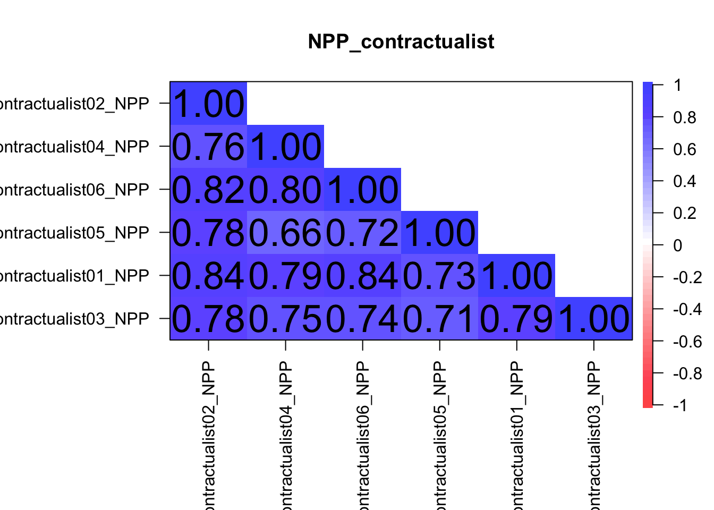
Warning in ks.test.default(x = x, y = "pnorm", mean(x), sd(x)): ties should not
be present for the one-sample Kolmogorov-Smirnov test
Warning in ks.test.default(x = x, y = "pnorm", mean(x), sd(x)): ties should not
be present for the one-sample Kolmogorov-Smirnov test
Warning in ks.test.default(x = x, y = "pnorm", mean(x), sd(x)): ties should not
be present for the one-sample Kolmogorov-Smirnov test
Warning in ks.test.default(x = x, y = "pnorm", mean(x), sd(x)): ties should not
be present for the one-sample Kolmogorov-Smirnov test
Warning in ks.test.default(x = x, y = "pnorm", mean(x), sd(x)): ties should not
be present for the one-sample Kolmogorov-Smirnov test
Warning in ks.test.default(x = x, y = "pnorm", mean(x), sd(x)): ties should not
be present for the one-sample Kolmogorov-Smirnov test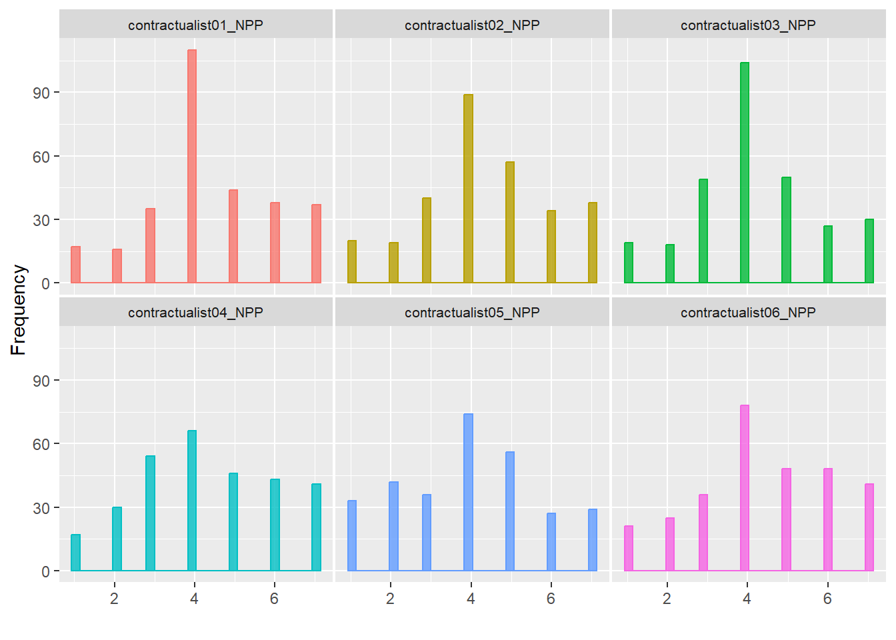
descriptive statistics:
Mean SD Median CoeffofVariation Minimum Maximun
contractualist02_NPP 4.34 1.64 4 0.38 1 7
contractualist04_NPP 4.30 1.73 4 0.40 1 7
contractualist06_NPP 4.40 1.73 4 0.39 1 7
contractualist05_NPP 3.93 1.77 4 0.45 1 7
contractualist01_NPP 4.38 1.58 4 0.36 1 7
contractualist03_NPP 4.18 1.55 4 0.37 1 7
Lower Quantile Upper Quantile Skewness Kurtosis(-3)
contractualist02_NPP 1 7 -0.15 -0.49
contractualist04_NPP 1 7 -0.05 -0.90
contractualist06_NPP 1 7 -0.22 -0.75
contractualist05_NPP 1 7 0.00 -0.85
contractualist01_NPP 1 7 -0.11 -0.34
contractualist03_NPP 1 7 0.00 -0.26
Shaprio-Test KS-Test
contractualist02_NPP 0 0
contractualist04_NPP 0 0
contractualist06_NPP 0 0
contractualist05_NPP 0 0
contractualist01_NPP 0 0
contractualist03_NPP 0 0
variables under investigation: contractualist02_NPP contractualist04_NPP contractualist06_NPP contractualist05_NPP contractualist01_NPP contractualist03_NPP
Cronbachs Alpha: 0.95 Warning in fa.stats(r = r, f = f, phi = phi, n.obs = n.obs, np.obs = np.obs, :
The estimated weights for the factor scores are probably incorrect. Try a
different factor score estimation method.Warning in fac(r = r, nfactors = nfactors, n.obs = n.obs, rotate = rotate, : An
ultra-Heywood case was detected. Examine the results carefullyParallel analysis suggests that the number of factors = 1 and the number of components = 1
NPP_contractualist
Number of components: 1 Warning in fa.stats(r = r, f = f, phi = phi, n.obs = n.obs, np.obs = np.obs, :
The estimated weights for the factor scores are probably incorrect. Try a
different factor score estimation method.
EFA factor loadings (1 factor solution):
Loadings:
MR1
contractualist02_NPP 0.933
contractualist04_NPP 0.880
contractualist06_NPP 0.918
contractualist05_NPP 0.838
contractualist01_NPP 0.941
contractualist03_NPP 0.874
MR1
SS loadings 4.837
Proportion Var 0.806
CFA summary and fit statistics:
lavaan 0.6-19 ended normally after 23 iterations
Estimator ML
Optimization method NLMINB
Number of model parameters 12
Number of observations 297
Model Test User Model:
Standard Scaled
Test Statistic 29.833 12.934
Degrees of freedom 9 9
P-value (Chi-square) 0.000 0.166
Scaling correction factor 2.307
Yuan-Bentler correction (Mplus variant)
Model Test Baseline Model:
Test statistic 1785.490 779.815
Degrees of freedom 15 15
P-value 0.000 0.000
Scaling correction factor 2.290
User Model versus Baseline Model:
Comparative Fit Index (CFI) 0.988 0.995
Tucker-Lewis Index (TLI) 0.980 0.991
Robust Comparative Fit Index (CFI) 0.995
Robust Tucker-Lewis Index (TLI) 0.991
Loglikelihood and Information Criteria:
Loglikelihood user model (H0) -2555.550 -2555.550
Scaling correction factor 1.482
for the MLR correction
Loglikelihood unrestricted model (H1) -2540.634 -2540.634
Scaling correction factor 1.836
for the MLR correction
Akaike (AIC) 5135.100 5135.100
Bayesian (BIC) 5179.425 5179.425
Sample-size adjusted Bayesian (SABIC) 5141.369 5141.369
Root Mean Square Error of Approximation:
RMSEA 0.088 0.038
90 Percent confidence interval - lower 0.054 0.000
90 Percent confidence interval - upper 0.124 0.067
P-value H_0: RMSEA <= 0.050 0.033 0.716
P-value H_0: RMSEA >= 0.080 0.686 0.006
Robust RMSEA 0.058
90 Percent confidence interval - lower 0.000
90 Percent confidence interval - upper 0.123
P-value H_0: Robust RMSEA <= 0.050 0.370
P-value H_0: Robust RMSEA >= 0.080 0.342
Standardized Root Mean Square Residual:
SRMR 0.017 0.017
Parameter Estimates:
Standard errors Sandwich
Information bread Observed
Observed information based on Hessian
Latent Variables:
Estimate Std.Err z-value P(>|z|) Std.lv Std.all
NPP_contractualist =~
cntrctls02_NPP 1.000 1.495 0.913
cntrctls04_NPP 0.993 0.040 25.010 0.000 1.484 0.859
cntrctls06_NPP 1.042 0.034 30.529 0.000 1.558 0.902
cntrctls05_NPP 0.956 0.039 24.761 0.000 1.429 0.810
cntrctls01_NPP 0.972 0.032 30.092 0.000 1.453 0.922
cntrctls03_NPP 0.881 0.039 22.440 0.000 1.317 0.851
Variances:
Estimate Std.Err z-value P(>|z|) Std.lv Std.all
.cntrctls02_NPP 0.448 0.081 5.526 0.000 0.448 0.167
.cntrctls04_NPP 0.783 0.099 7.903 0.000 0.783 0.262
.cntrctls06_NPP 0.558 0.080 6.957 0.000 0.558 0.187
.cntrctls05_NPP 1.069 0.122 8.749 0.000 1.069 0.344
.cntrctls01_NPP 0.372 0.065 5.719 0.000 0.372 0.150
.cntrctls03_NPP 0.658 0.091 7.232 0.000 0.658 0.275
NPP_contrctlst 2.235 0.199 11.233 0.000 1.000 1.000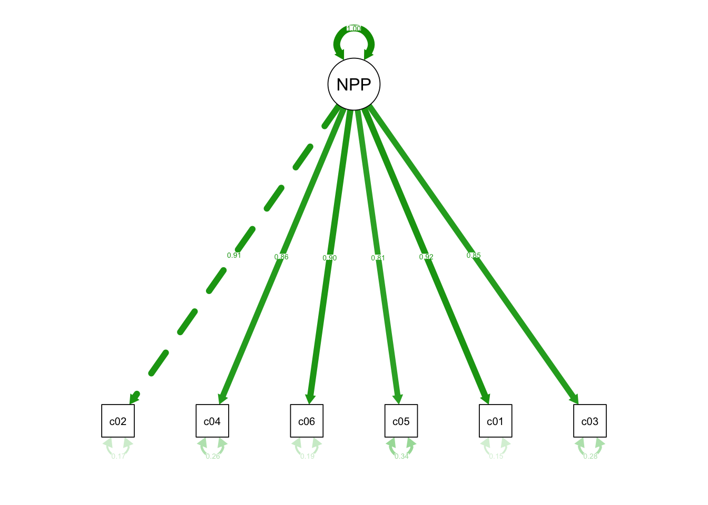
CFA first 6 Modification Indices:
lhs op rhs mi epc sepc.lv sepc.all
16 contractualist02_NPP ~~ contractualist05_NPP 12.605 0.178 0.178 0.257
19 contractualist04_NPP ~~ contractualist06_NPP 8.679 0.144 0.144 0.218
14 contractualist02_NPP ~~ contractualist04_NPP 6.310 -0.113 -0.113 -0.192
20 contractualist04_NPP ~~ contractualist05_NPP 6.233 -0.152 -0.152 -0.166
25 contractualist06_NPP ~~ contractualist03_NPP 5.468 -0.104 -0.104 -0.171
22 contractualist04_NPP ~~ contractualist03_NPP 2.510 0.078 0.078 0.109
sepc.nox
16 0.257
19 0.218
14 -0.192
20 -0.166
25 -0.171
22 0.109
>>> deontology of NPP ( 8 items )<<<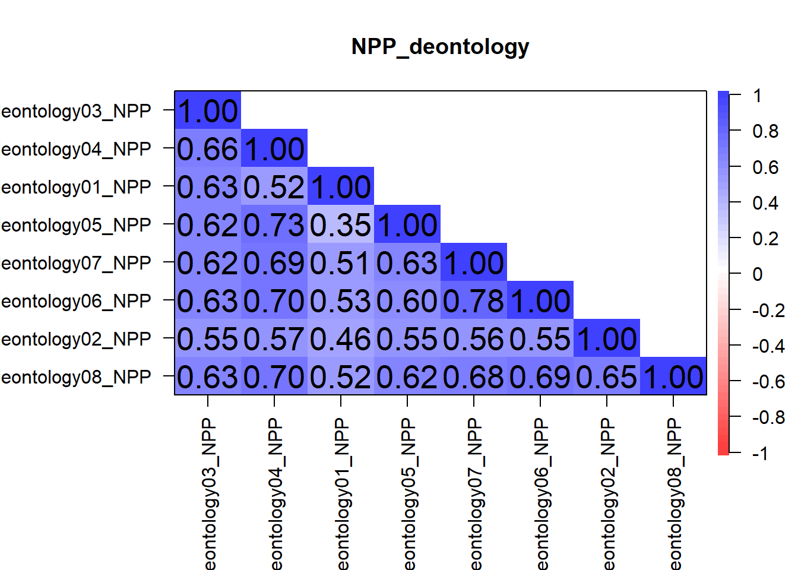
Warning in ks.test.default(x = x, y = "pnorm", mean(x), sd(x)): ties should not
be present for the one-sample Kolmogorov-Smirnov testWarning in ks.test.default(x = x, y = "pnorm", mean(x), sd(x)): ties should not
be present for the one-sample Kolmogorov-Smirnov test
Warning in ks.test.default(x = x, y = "pnorm", mean(x), sd(x)): ties should not
be present for the one-sample Kolmogorov-Smirnov test
Warning in ks.test.default(x = x, y = "pnorm", mean(x), sd(x)): ties should not
be present for the one-sample Kolmogorov-Smirnov test
Warning in ks.test.default(x = x, y = "pnorm", mean(x), sd(x)): ties should not
be present for the one-sample Kolmogorov-Smirnov test
Warning in ks.test.default(x = x, y = "pnorm", mean(x), sd(x)): ties should not
be present for the one-sample Kolmogorov-Smirnov test
Warning in ks.test.default(x = x, y = "pnorm", mean(x), sd(x)): ties should not
be present for the one-sample Kolmogorov-Smirnov test
Warning in ks.test.default(x = x, y = "pnorm", mean(x), sd(x)): ties should not
be present for the one-sample Kolmogorov-Smirnov test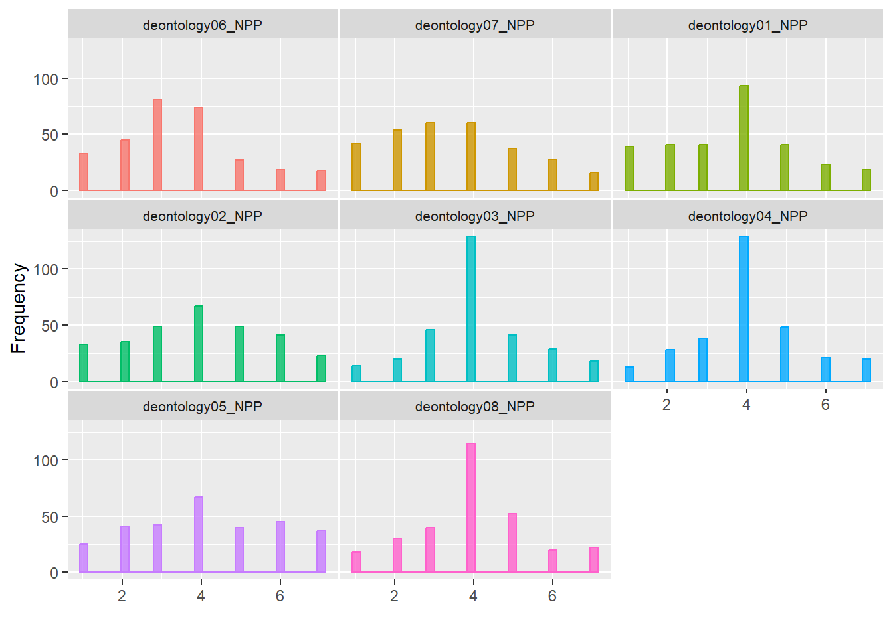
descriptive statistics:
Mean SD Median CoeffofVariation Minimum Maximun
deontology03_NPP 4.08 1.39 4 0.34 1 7
deontology04_NPP 4.06 1.40 4 0.34 1 7
deontology01_NPP 3.68 1.67 4 0.46 1 7
deontology05_NPP 4.14 1.82 4 0.44 1 7
deontology07_NPP 3.48 1.71 3 0.49 1 7
deontology06_NPP 3.49 1.59 3 0.45 1 7
deontology02_NPP 3.94 1.75 4 0.44 1 7
deontology08_NPP 4.01 1.48 4 0.37 1 7
Lower Quantile Upper Quantile Skewness Kurtosis(-3)
deontology03_NPP 1 7 0.04 0.15
deontology04_NPP 1 7 0.05 0.13
deontology01_NPP 1 7 0.09 -0.64
deontology05_NPP 1 7 -0.03 -1.01
deontology07_NPP 1 7 0.30 -0.78
deontology06_NPP 1 7 0.43 -0.27
deontology02_NPP 1 7 -0.04 -0.89
deontology08_NPP 1 7 0.01 -0.11
Shaprio-Test KS-Test
deontology03_NPP 0 0
deontology04_NPP 0 0
deontology01_NPP 0 0
deontology05_NPP 0 0
deontology07_NPP 0 0
deontology06_NPP 0 0
deontology02_NPP 0 0
deontology08_NPP 0 0
variables under investigation: deontology03_NPP deontology04_NPP deontology01_NPP deontology05_NPP deontology07_NPP deontology06_NPP deontology02_NPP deontology08_NPP
Cronbachs Alpha: 0.92 Warning in fa.stats(r = r, f = f, phi = phi, n.obs = n.obs, np.obs = np.obs, :
The estimated weights for the factor scores are probably incorrect. Try a
different factor score estimation method.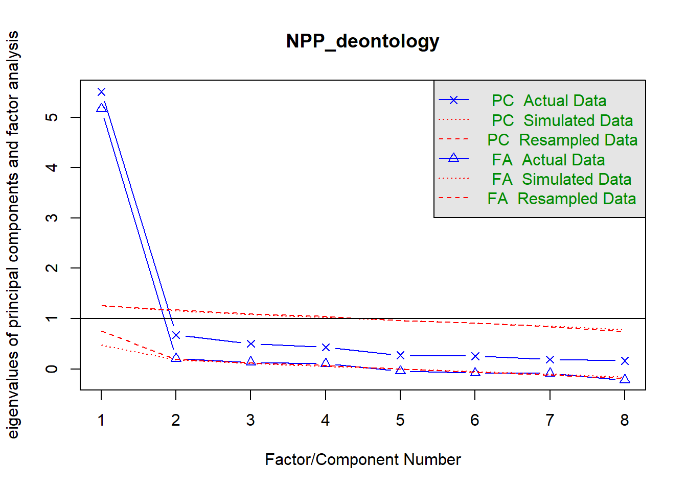
Parallel analysis suggests that the number of factors = 1 and the number of components = 1
NPP_deontology
Number of components: 1
EFA factor loadings (1 factor solution):
Loadings:
MR1
deontology03_NPP 0.813
deontology04_NPP 0.872
deontology01_NPP 0.653
deontology05_NPP 0.792
deontology07_NPP 0.853
deontology06_NPP 0.849
deontology02_NPP 0.729
deontology08_NPP 0.846
MR1
SS loadings 5.170
Proportion Var 0.646
CFA summary and fit statistics:
lavaan 0.6-19 ended normally after 23 iterations
Estimator ML
Optimization method NLMINB
Number of model parameters 16
Number of observations 297
Model Test User Model:
Standard Scaled
Test Statistic 118.665 66.949
Degrees of freedom 20 20
P-value (Chi-square) 0.000 0.000
Scaling correction factor 1.772
Yuan-Bentler correction (Mplus variant)
Model Test Baseline Model:
Test statistic 1635.347 926.930
Degrees of freedom 28 28
P-value 0.000 0.000
Scaling correction factor 1.764
User Model versus Baseline Model:
Comparative Fit Index (CFI) 0.939 0.948
Tucker-Lewis Index (TLI) 0.914 0.927
Robust Comparative Fit Index (CFI) 0.948
Robust Tucker-Lewis Index (TLI) 0.927
Loglikelihood and Information Criteria:
Loglikelihood user model (H0) -3716.181 -3716.181
Scaling correction factor 1.265
for the MLR correction
Loglikelihood unrestricted model (H1) -3656.849 -3656.849
Scaling correction factor 1.547
for the MLR correction
Akaike (AIC) 7464.363 7464.363
Bayesian (BIC) 7523.463 7523.463
Sample-size adjusted Bayesian (SABIC) 7472.721 7472.721
Root Mean Square Error of Approximation:
RMSEA 0.129 0.089
90 Percent confidence interval - lower 0.107 0.072
90 Percent confidence interval - upper 0.152 0.107
P-value H_0: RMSEA <= 0.050 0.000 0.000
P-value H_0: RMSEA >= 0.080 1.000 0.809
Robust RMSEA 0.118
90 Percent confidence interval - lower 0.088
90 Percent confidence interval - upper 0.150
P-value H_0: Robust RMSEA <= 0.050 0.000
P-value H_0: Robust RMSEA >= 0.080 0.979
Standardized Root Mean Square Residual:
SRMR 0.043 0.043
Parameter Estimates:
Standard errors Sandwich
Information bread Observed
Observed information based on Hessian
Latent Variables:
Estimate Std.Err z-value P(>|z|) Std.lv Std.all
NPP_deontology =~
deontlgy03_NPP 1.000 1.077 0.779
deontlgy04_NPP 1.097 0.070 15.588 0.000 1.182 0.847
deontlgy01_NPP 0.975 0.069 14.066 0.000 1.050 0.629
deontlgy05_NPP 1.290 0.074 17.541 0.000 1.390 0.766
deontlgy07_NPP 1.326 0.091 14.531 0.000 1.429 0.836
deontlgy06_NPP 1.232 0.089 13.801 0.000 1.327 0.837
deontlgy02_NPP 1.133 0.089 12.759 0.000 1.220 0.699
deontlgy08_NPP 1.136 0.068 16.725 0.000 1.224 0.826
Variances:
Estimate Std.Err z-value P(>|z|) Std.lv Std.all
.deontlgy03_NPP 0.755 0.125 6.049 0.000 0.755 0.394
.deontlgy04_NPP 0.550 0.068 8.062 0.000 0.550 0.282
.deontlgy01_NPP 1.688 0.157 10.762 0.000 1.688 0.605
.deontlgy05_NPP 1.360 0.169 8.056 0.000 1.360 0.413
.deontlgy07_NPP 0.880 0.101 8.702 0.000 0.880 0.301
.deontlgy06_NPP 0.751 0.105 7.144 0.000 0.751 0.299
.deontlgy02_NPP 1.558 0.151 10.305 0.000 1.558 0.511
.deontlgy08_NPP 0.696 0.092 7.578 0.000 0.696 0.317
NPP_deontology 1.161 0.172 6.737 0.000 1.000 1.000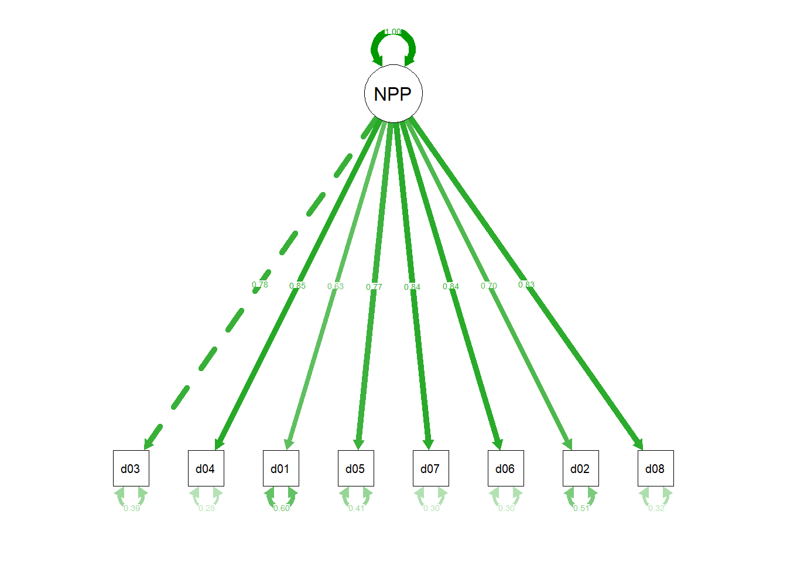
CFA first 6 Modification Indices:
lhs op rhs mi epc sepc.lv sepc.all sepc.nox
40 deontology07_NPP ~~ deontology06_NPP 31.292 0.340 0.340 0.419 0.419
19 deontology03_NPP ~~ deontology01_NPP 31.221 0.402 0.402 0.356 0.356
31 deontology01_NPP ~~ deontology05_NPP 25.999 -0.489 -0.489 -0.323 -0.323
26 deontology04_NPP ~~ deontology05_NPP 25.472 0.309 0.309 0.357 0.357
45 deontology02_NPP ~~ deontology08_NPP 13.196 0.253 0.253 0.243 0.243
37 deontology05_NPP ~~ deontology06_NPP 4.813 -0.155 -0.155 -0.153 -0.153
>>> hedonism of NPP ( 9 items )<<<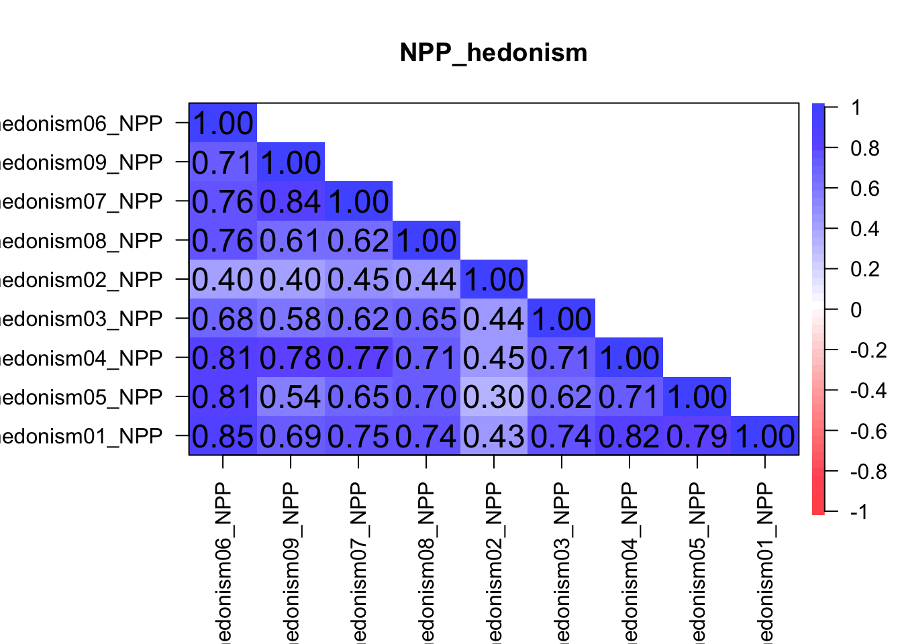
Warning in ks.test.default(x = x, y = "pnorm", mean(x), sd(x)): ties should not
be present for the one-sample Kolmogorov-Smirnov test
Warning in ks.test.default(x = x, y = "pnorm", mean(x), sd(x)): ties should not
be present for the one-sample Kolmogorov-Smirnov test
Warning in ks.test.default(x = x, y = "pnorm", mean(x), sd(x)): ties should not
be present for the one-sample Kolmogorov-Smirnov test
Warning in ks.test.default(x = x, y = "pnorm", mean(x), sd(x)): ties should not
be present for the one-sample Kolmogorov-Smirnov test
Warning in ks.test.default(x = x, y = "pnorm", mean(x), sd(x)): ties should not
be present for the one-sample Kolmogorov-Smirnov test
Warning in ks.test.default(x = x, y = "pnorm", mean(x), sd(x)): ties should not
be present for the one-sample Kolmogorov-Smirnov test
Warning in ks.test.default(x = x, y = "pnorm", mean(x), sd(x)): ties should not
be present for the one-sample Kolmogorov-Smirnov test
Warning in ks.test.default(x = x, y = "pnorm", mean(x), sd(x)): ties should not
be present for the one-sample Kolmogorov-Smirnov test
Warning in ks.test.default(x = x, y = "pnorm", mean(x), sd(x)): ties should not
be present for the one-sample Kolmogorov-Smirnov test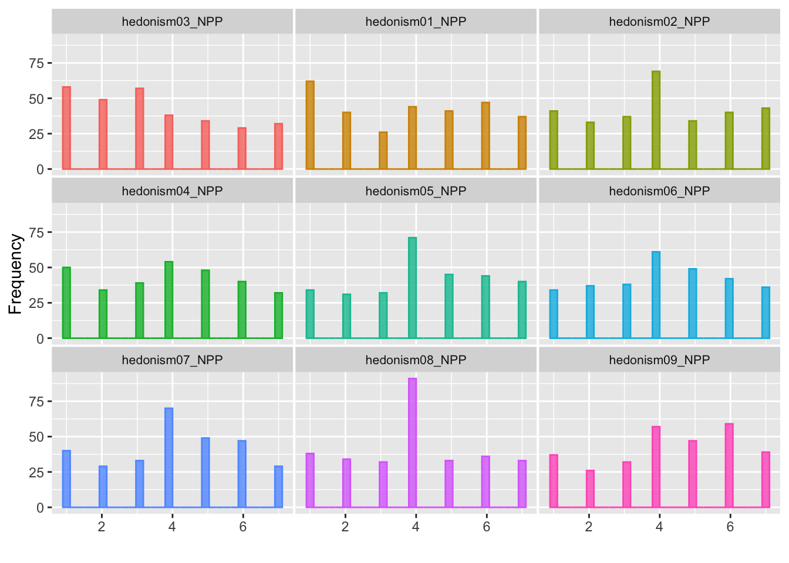
descriptive statistics:
Mean SD Median CoeffofVariation Minimum Maximun Lower Quantile
hedonism06_NPP 4.09 1.87 4 0.46 1 7 1
hedonism09_NPP 4.29 1.91 4 0.44 1 7 1
hedonism07_NPP 4.06 1.84 4 0.45 1 7 1
hedonism08_NPP 3.97 1.82 4 0.46 1 7 1
hedonism02_NPP 4.06 1.94 4 0.48 1 7 1
hedonism03_NPP 3.53 1.97 3 0.56 1 7 1
hedonism04_NPP 3.89 1.94 4 0.50 1 7 1
hedonism05_NPP 4.19 1.87 4 0.45 1 7 1
hedonism01_NPP 3.85 2.09 4 0.54 1 7 1
Upper Quantile Skewness Kurtosis(-3) Shaprio-Test KS-Test
hedonism06_NPP 7 -0.09 -1.03 0 0
hedonism09_NPP 7 -0.30 -1.01 0 0
hedonism07_NPP 7 -0.18 -0.96 0 0
hedonism08_NPP 7 -0.01 -0.87 0 0
hedonism02_NPP 7 -0.04 -1.09 0 0
hedonism03_NPP 7 0.35 -1.07 0 0
hedonism04_NPP 7 -0.03 -1.14 0 0
hedonism05_NPP 7 -0.16 -0.97 0 0
hedonism01_NPP 7 0.00 -1.36 0 0
variables under investigation: hedonism06_NPP hedonism09_NPP hedonism07_NPP hedonism08_NPP hedonism02_NPP hedonism03_NPP hedonism04_NPP hedonism05_NPP hedonism01_NPP
Cronbachs Alpha: 0.94 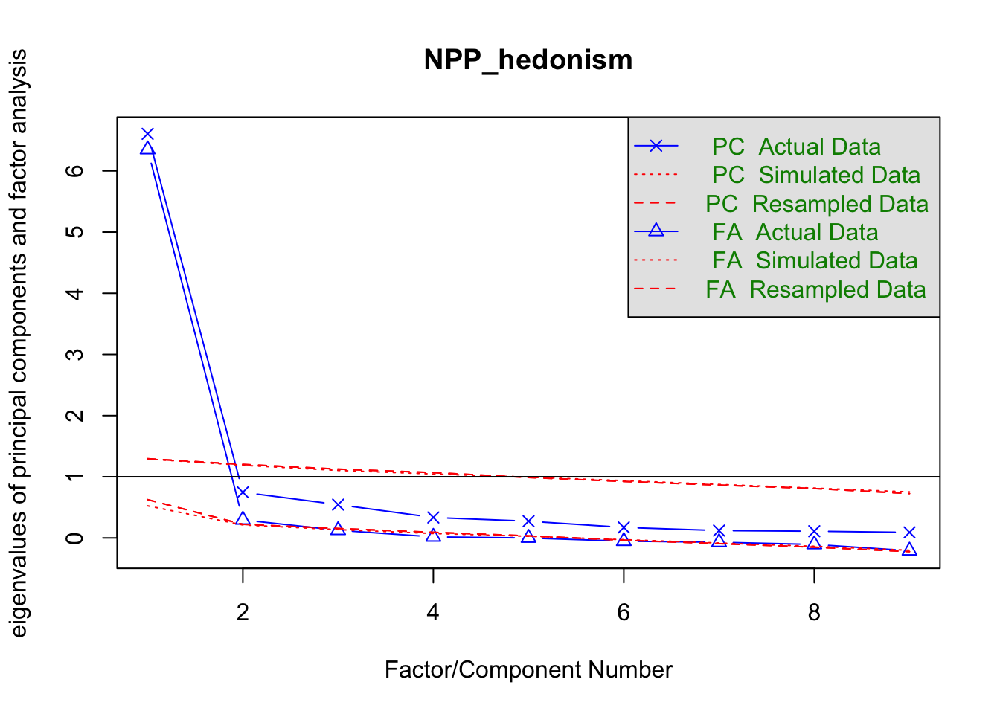
Parallel analysis suggests that the number of factors = 2 and the number of components = 1
NPP_hedonism
Number of components: 1 Warning in fa.stats(r = r, f = f, phi = phi, n.obs = n.obs, np.obs = np.obs, :
The estimated weights for the factor scores are probably incorrect. Try a
different factor score estimation method.
EFA factor loadings (1 factor solution):
Loadings:
MR1
hedonism06_NPP 0.931
hedonism09_NPP 0.818
hedonism07_NPP 0.871
hedonism08_NPP 0.835
hedonism02_NPP 0.536
hedonism03_NPP 0.808
hedonism04_NPP 0.927
hedonism05_NPP 0.824
hedonism01_NPP 0.938
MR1
SS loadings 6.350
Proportion Var 0.706
CFA summary and fit statistics:
lavaan 0.6-19 ended normally after 25 iterations
Estimator ML
Optimization method NLMINB
Number of model parameters 18
Number of observations 297
Model Test User Model:
Standard Scaled
Test Statistic 229.189 125.377
Degrees of freedom 27 27
P-value (Chi-square) 0.000 0.000
Scaling correction factor 1.828
Yuan-Bentler correction (Mplus variant)
Model Test Baseline Model:
Test statistic 2511.317 1325.192
Degrees of freedom 36 36
P-value 0.000 0.000
Scaling correction factor 1.895
User Model versus Baseline Model:
Comparative Fit Index (CFI) 0.918 0.924
Tucker-Lewis Index (TLI) 0.891 0.898
Robust Comparative Fit Index (CFI) 0.926
Robust Tucker-Lewis Index (TLI) 0.902
Loglikelihood and Information Criteria:
Loglikelihood user model (H0) -4385.072 -4385.072
Scaling correction factor 1.284
for the MLR correction
Loglikelihood unrestricted model (H1) -4270.478 -4270.478
Scaling correction factor 1.610
for the MLR correction
Akaike (AIC) 8806.145 8806.145
Bayesian (BIC) 8872.632 8872.632
Sample-size adjusted Bayesian (SABIC) 8815.548 8815.548
Root Mean Square Error of Approximation:
RMSEA 0.159 0.111
90 Percent confidence interval - lower 0.140 0.097
90 Percent confidence interval - upper 0.178 0.125
P-value H_0: RMSEA <= 0.050 0.000 0.000
P-value H_0: RMSEA >= 0.080 1.000 1.000
Robust RMSEA 0.150
90 Percent confidence interval - lower 0.124
90 Percent confidence interval - upper 0.177
P-value H_0: Robust RMSEA <= 0.050 0.000
P-value H_0: Robust RMSEA >= 0.080 1.000
Standardized Root Mean Square Residual:
SRMR 0.044 0.044
Parameter Estimates:
Standard errors Sandwich
Information bread Observed
Observed information based on Hessian
Latent Variables:
Estimate Std.Err z-value P(>|z|) Std.lv Std.all
NPP_hedonism =~
hedonism06_NPP 1.000 1.709 0.918
hedonism09_NPP 0.886 0.044 20.063 0.000 1.515 0.795
hedonism07_NPP 0.905 0.039 23.236 0.000 1.547 0.841
hedonism08_NPP 0.856 0.035 24.480 0.000 1.464 0.804
hedonism02_NPP 0.547 0.067 8.106 0.000 0.935 0.482
hedonism03_NPP 0.888 0.048 18.521 0.000 1.517 0.772
hedonism04_NPP 1.022 0.034 29.672 0.000 1.747 0.901
hedonism05_NPP 0.897 0.040 22.235 0.000 1.533 0.822
hedonism01_NPP 1.124 0.031 35.751 0.000 1.921 0.919
Variances:
Estimate Std.Err z-value P(>|z|) Std.lv Std.all
.hedonism06_NPP 0.548 0.084 6.549 0.000 0.548 0.158
.hedonism09_NPP 1.334 0.146 9.129 0.000 1.334 0.368
.hedonism07_NPP 0.994 0.130 7.638 0.000 0.994 0.294
.hedonism08_NPP 1.170 0.118 9.877 0.000 1.170 0.353
.hedonism02_NPP 2.891 0.239 12.075 0.000 2.891 0.768
.hedonism03_NPP 1.556 0.199 7.830 0.000 1.556 0.403
.hedonism04_NPP 0.710 0.107 6.632 0.000 0.710 0.189
.hedonism05_NPP 1.126 0.162 6.953 0.000 1.126 0.324
.hedonism01_NPP 0.683 0.093 7.310 0.000 0.683 0.156
NPP_hedonism 2.922 0.208 14.045 0.000 1.000 1.000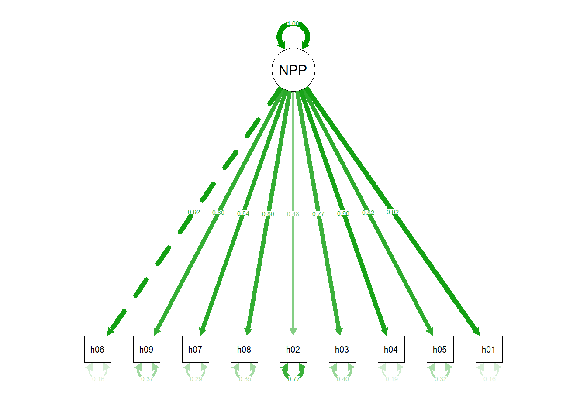
CFA first 6 Modification Indices:
lhs op rhs mi epc sepc.lv sepc.all sepc.nox
28 hedonism09_NPP ~~ hedonism07_NPP 94.761 0.719 0.719 0.625 0.625
33 hedonism09_NPP ~~ hedonism05_NPP 38.247 -0.482 -0.482 -0.393 -0.393
26 hedonism06_NPP ~~ hedonism05_NPP 22.994 0.269 0.269 0.343 0.343
32 hedonism09_NPP ~~ hedonism04_NPP 21.154 0.304 0.304 0.313 0.313
34 hedonism09_NPP ~~ hedonism01_NPP 14.602 -0.257 -0.257 -0.269 -0.269
55 hedonism05_NPP ~~ hedonism01_NPP 12.535 0.223 0.223 0.254 0.254
>>> relativist of NPP ( 5 items )<<<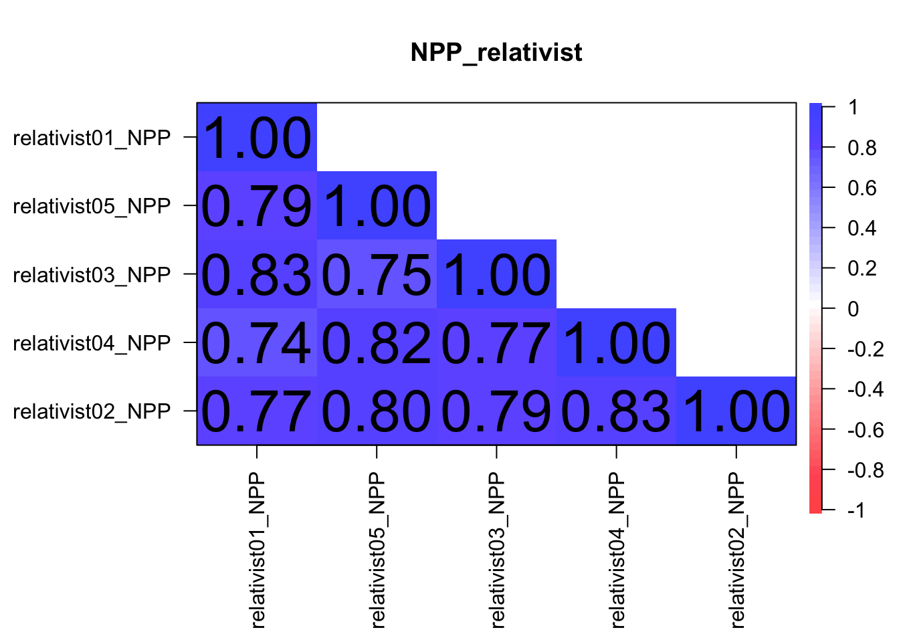
Warning in ks.test.default(x = x, y = "pnorm", mean(x), sd(x)): ties should not
be present for the one-sample Kolmogorov-Smirnov test
Warning in ks.test.default(x = x, y = "pnorm", mean(x), sd(x)): ties should not
be present for the one-sample Kolmogorov-Smirnov test
Warning in ks.test.default(x = x, y = "pnorm", mean(x), sd(x)): ties should not
be present for the one-sample Kolmogorov-Smirnov test
Warning in ks.test.default(x = x, y = "pnorm", mean(x), sd(x)): ties should not
be present for the one-sample Kolmogorov-Smirnov test
Warning in ks.test.default(x = x, y = "pnorm", mean(x), sd(x)): ties should not
be present for the one-sample Kolmogorov-Smirnov test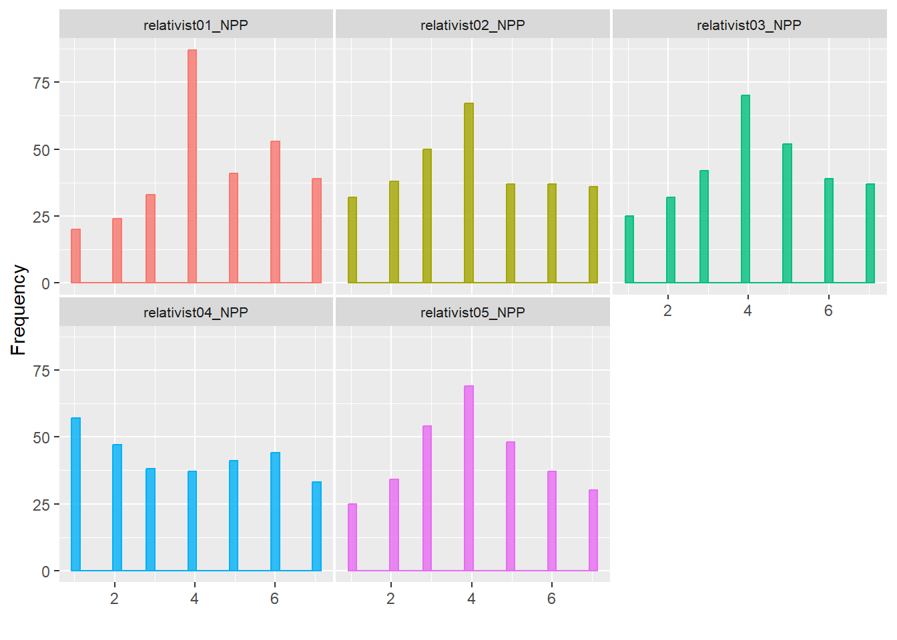
descriptive statistics:
Mean SD Median CoeffofVariation Minimum Maximun
relativist01_NPP 4.41 1.71 4 0.39 1 7
relativist05_NPP 4.05 1.72 4 0.43 1 7
relativist03_NPP 4.20 1.77 4 0.42 1 7
relativist04_NPP 3.75 2.04 4 0.54 1 7
relativist02_NPP 3.99 1.84 4 0.46 1 7
Lower Quantile Upper Quantile Skewness Kurtosis(-3)
relativist01_NPP 1 7 -0.23 -0.70
relativist05_NPP 1 7 0.01 -0.82
relativist03_NPP 1 7 -0.11 -0.85
relativist04_NPP 1 7 0.11 -1.32
relativist02_NPP 1 7 0.06 -0.98
Shaprio-Test KS-Test
relativist01_NPP 0 0
relativist05_NPP 0 0
relativist03_NPP 0 0
relativist04_NPP 0 0
relativist02_NPP 0 0
variables under investigation: relativist01_NPP relativist05_NPP relativist03_NPP relativist04_NPP relativist02_NPP
Cronbachs Alpha: 0.95 Parallel analysis suggests that the number of factors = 1 and the number of components = 1
NPP_relativist
Number of components: 1
EFA factor loadings (1 factor solution):
Loadings:
MR1
relativist01_NPP 0.906
relativist05_NPP 0.908
relativist03_NPP 0.901
relativist04_NPP 0.919
relativist02_NPP 0.919
MR1
SS loadings 4.148
Proportion Var 0.830
CFA summary and fit statistics:
lavaan 0.6-19 ended normally after 22 iterations
Estimator ML
Optimization method NLMINB
Number of model parameters 10
Number of observations 297
Model Test User Model:
Standard Scaled
Test Statistic 55.715 29.569
Degrees of freedom 5 5
P-value (Chi-square) 0.000 0.000
Scaling correction factor 1.884
Yuan-Bentler correction (Mplus variant)
Model Test Baseline Model:
Test statistic 1489.416 724.517
Degrees of freedom 10 10
P-value 0.000 0.000
Scaling correction factor 2.056
User Model versus Baseline Model:
Comparative Fit Index (CFI) 0.966 0.966
Tucker-Lewis Index (TLI) 0.931 0.931
Robust Comparative Fit Index (CFI) 0.968
Robust Tucker-Lewis Index (TLI) 0.937
Loglikelihood and Information Criteria:
Loglikelihood user model (H0) -2270.022 -2270.022
Scaling correction factor 1.380
for the MLR correction
Loglikelihood unrestricted model (H1) -2242.164 -2242.164
Scaling correction factor 1.548
for the MLR correction
Akaike (AIC) 4560.044 4560.044
Bayesian (BIC) 4596.981 4596.981
Sample-size adjusted Bayesian (SABIC) 4565.268 4565.268
Root Mean Square Error of Approximation:
RMSEA 0.185 0.129
90 Percent confidence interval - lower 0.143 0.097
90 Percent confidence interval - upper 0.230 0.162
P-value H_0: RMSEA <= 0.050 0.000 0.000
P-value H_0: RMSEA >= 0.080 1.000 0.994
Robust RMSEA 0.177
90 Percent confidence interval - lower 0.118
90 Percent confidence interval - upper 0.240
P-value H_0: Robust RMSEA <= 0.050 0.000
P-value H_0: Robust RMSEA >= 0.080 0.996
Standardized Root Mean Square Residual:
SRMR 0.024 0.024
Parameter Estimates:
Standard errors Sandwich
Information bread Observed
Observed information based on Hessian
Latent Variables:
Estimate Std.Err z-value P(>|z|) Std.lv Std.all
NPP_relativist =~
relatvst01_NPP 1.000 1.493 0.876
relatvst05_NPP 1.030 0.041 25.010 0.000 1.538 0.893
relatvst03_NPP 1.039 0.038 27.508 0.000 1.551 0.879
relatvst04_NPP 1.218 0.058 20.939 0.000 1.819 0.892
relatvst02_NPP 1.109 0.050 22.293 0.000 1.656 0.903
Variances:
Estimate Std.Err z-value P(>|z|) Std.lv Std.all
.relatvst01_NPP 0.674 0.105 6.439 0.000 0.674 0.232
.relatvst05_NPP 0.600 0.097 6.183 0.000 0.600 0.202
.relatvst03_NPP 0.706 0.121 5.830 0.000 0.706 0.227
.relatvst04_NPP 0.846 0.110 7.662 0.000 0.846 0.204
.relatvst02_NPP 0.621 0.089 6.963 0.000 0.621 0.185
NPP_relativist 2.229 0.215 10.389 0.000 1.000 1.000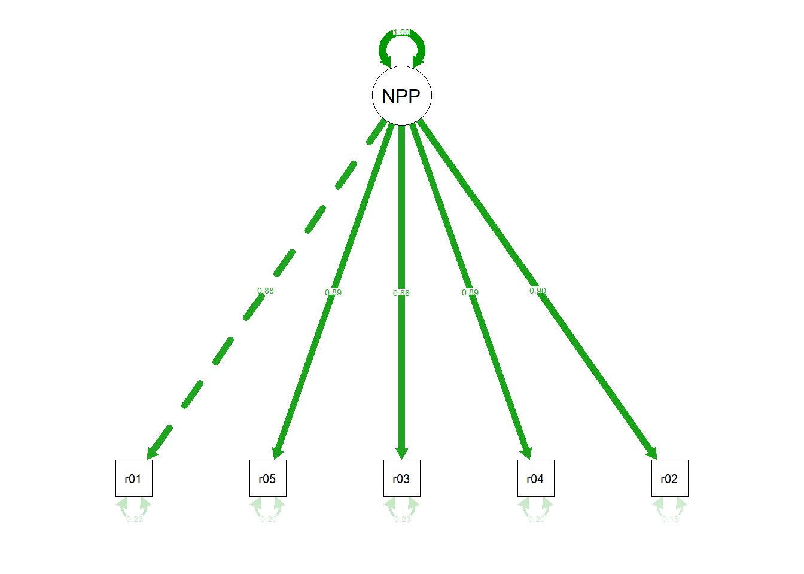
CFA first 6 Modification Indices:
lhs op rhs mi epc sepc.lv sepc.all sepc.nox
13 relativist01_NPP ~~ relativist03_NPP 38.764 0.332 0.332 0.481 0.481
14 relativist01_NPP ~~ relativist04_NPP 20.235 -0.271 -0.271 -0.359 -0.359
16 relativist05_NPP ~~ relativist03_NPP 13.939 -0.196 -0.196 -0.301 -0.301
21 relativist04_NPP ~~ relativist02_NPP 10.873 0.208 0.208 0.286 0.286
17 relativist05_NPP ~~ relativist04_NPP 7.395 0.162 0.162 0.228 0.228
15 relativist01_NPP ~~ relativist02_NPP 7.307 -0.145 -0.145 -0.224 -0.224
>>> utilitarian of NPP ( 9 items )<<<Warning in ks.test.default(x = x, y = "pnorm", mean(x), sd(x)): ties should not
be present for the one-sample Kolmogorov-Smirnov test
Warning in ks.test.default(x = x, y = "pnorm", mean(x), sd(x)): ties should not
be present for the one-sample Kolmogorov-Smirnov test
Warning in ks.test.default(x = x, y = "pnorm", mean(x), sd(x)): ties should not
be present for the one-sample Kolmogorov-Smirnov test
Warning in ks.test.default(x = x, y = "pnorm", mean(x), sd(x)): ties should not
be present for the one-sample Kolmogorov-Smirnov test
Warning in ks.test.default(x = x, y = "pnorm", mean(x), sd(x)): ties should not
be present for the one-sample Kolmogorov-Smirnov test
Warning in ks.test.default(x = x, y = "pnorm", mean(x), sd(x)): ties should not
be present for the one-sample Kolmogorov-Smirnov test
Warning in ks.test.default(x = x, y = "pnorm", mean(x), sd(x)): ties should not
be present for the one-sample Kolmogorov-Smirnov test
Warning in ks.test.default(x = x, y = "pnorm", mean(x), sd(x)): ties should not
be present for the one-sample Kolmogorov-Smirnov test
Warning in ks.test.default(x = x, y = "pnorm", mean(x), sd(x)): ties should not
be present for the one-sample Kolmogorov-Smirnov test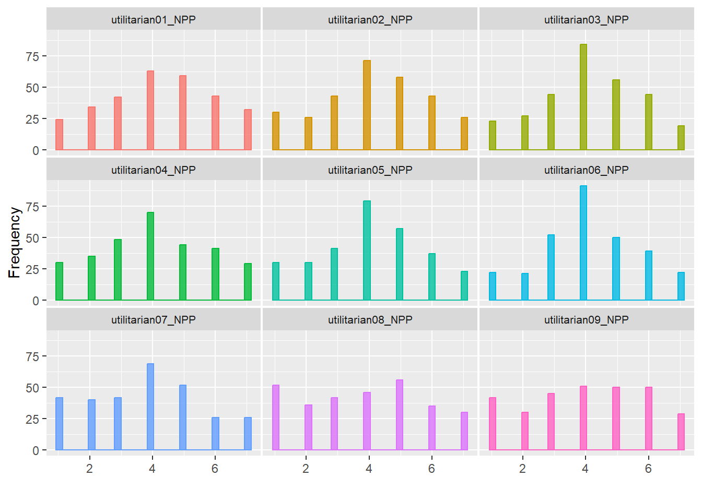
descriptive statistics:
Mean SD Median CoeffofVariation Minimum Maximun
utilitarian07_NPP 3.78 1.80 4 0.48 1 7
utilitarian03_NPP 4.11 1.60 4 0.39 1 7
utilitarian05_NPP 4.03 1.69 4 0.42 1 7
utilitarian08_NPP 3.82 1.94 4 0.51 1 7
utilitarian09_NPP 4.02 1.89 4 0.47 1 7
utilitarian04_NPP 4.02 1.77 4 0.44 1 7
utilitarian01_NPP 4.20 1.74 4 0.42 1 7
utilitarian06_NPP 4.11 1.57 4 0.38 1 7
utilitarian02_NPP 4.12 1.72 4 0.42 1 7
Lower Quantile Upper Quantile Skewness Kurtosis(-3)
utilitarian07_NPP 1 7 0.06 -0.89
utilitarian03_NPP 1 7 -0.18 -0.58
utilitarian05_NPP 1 7 -0.14 -0.71
utilitarian08_NPP 1 7 0.01 -1.15
utilitarian09_NPP 1 7 -0.13 -1.09
utilitarian04_NPP 1 7 -0.02 -0.90
utilitarian01_NPP 1 7 -0.15 -0.86
utilitarian06_NPP 1 7 -0.10 -0.45
utilitarian02_NPP 1 7 -0.19 -0.76
Shaprio-Test KS-Test
utilitarian07_NPP 0 0
utilitarian03_NPP 0 0
utilitarian05_NPP 0 0
utilitarian08_NPP 0 0
utilitarian09_NPP 0 0
utilitarian04_NPP 0 0
utilitarian01_NPP 0 0
utilitarian06_NPP 0 0
utilitarian02_NPP 0 0
variables under investigation: utilitarian07_NPP utilitarian03_NPP utilitarian05_NPP utilitarian08_NPP utilitarian09_NPP utilitarian04_NPP utilitarian01_NPP utilitarian06_NPP utilitarian02_NPP
Cronbachs Alpha: 0.97 Warning in fa.stats(r = r, f = f, phi = phi, n.obs = n.obs, np.obs = np.obs, :
The estimated weights for the factor scores are probably incorrect. Try a
different factor score estimation method.Warning in fa.stats(r = r, f = f, phi = phi, n.obs = n.obs, np.obs = np.obs, :
The estimated weights for the factor scores are probably incorrect. Try a
different factor score estimation method.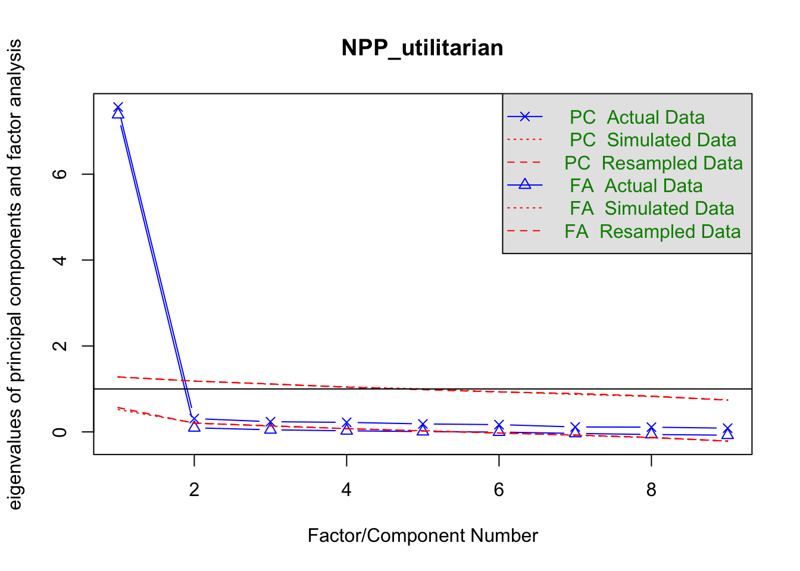
Parallel analysis suggests that the number of factors = 1 and the number of components = 1
NPP_utilitarian
Number of components: 1 Warning in fa.stats(r = r, f = f, phi = phi, n.obs = n.obs, np.obs = np.obs, :
The estimated weights for the factor scores are probably incorrect. Try a
different factor score estimation method.
EFA factor loadings (1 factor solution):
Loadings:
MR1
utilitarian07_NPP 0.923
utilitarian03_NPP 0.882
utilitarian05_NPP 0.923
utilitarian08_NPP 0.878
utilitarian09_NPP 0.908
utilitarian04_NPP 0.940
utilitarian01_NPP 0.852
utilitarian06_NPP 0.918
utilitarian02_NPP 0.928
MR1
SS loadings 7.387
Proportion Var 0.821
CFA summary and fit statistics:
lavaan 0.6-19 ended normally after 30 iterations
Estimator ML
Optimization method NLMINB
Number of model parameters 18
Number of observations 297
Model Test User Model:
Standard Scaled
Test Statistic 85.975 49.569
Degrees of freedom 27 27
P-value (Chi-square) 0.000 0.005
Scaling correction factor 1.734
Yuan-Bentler correction (Mplus variant)
Model Test Baseline Model:
Test statistic 3200.639 1752.274
Degrees of freedom 36 36
P-value 0.000 0.000
Scaling correction factor 1.827
User Model versus Baseline Model:
Comparative Fit Index (CFI) 0.981 0.987
Tucker-Lewis Index (TLI) 0.975 0.982
Robust Comparative Fit Index (CFI) 0.988
Robust Tucker-Lewis Index (TLI) 0.983
Loglikelihood and Information Criteria:
Loglikelihood user model (H0) -3715.827 -3715.827
Scaling correction factor 1.346
for the MLR correction
Loglikelihood unrestricted model (H1) -3672.840 -3672.840
Scaling correction factor 1.579
for the MLR correction
Akaike (AIC) 7467.655 7467.655
Bayesian (BIC) 7534.142 7534.142
Sample-size adjusted Bayesian (SABIC) 7477.058 7477.058
Root Mean Square Error of Approximation:
RMSEA 0.086 0.053
90 Percent confidence interval - lower 0.066 0.035
90 Percent confidence interval - upper 0.106 0.071
P-value H_0: RMSEA <= 0.050 0.002 0.367
P-value H_0: RMSEA >= 0.080 0.698 0.005
Robust RMSEA 0.070
90 Percent confidence interval - lower 0.038
90 Percent confidence interval - upper 0.100
P-value H_0: Robust RMSEA <= 0.050 0.137
P-value H_0: Robust RMSEA >= 0.080 0.314
Standardized Root Mean Square Residual:
SRMR 0.017 0.017
Parameter Estimates:
Standard errors Sandwich
Information bread Observed
Observed information based on Hessian
Latent Variables:
Estimate Std.Err z-value P(>|z|) Std.lv Std.all
NPP_utilitarian =~
utilitrn07_NPP 1.000 1.622 0.904
utilitrn03_NPP 0.850 0.039 21.821 0.000 1.379 0.863
utilitrn05_NPP 0.939 0.031 30.238 0.000 1.523 0.904
utilitrn08_NPP 1.009 0.035 29.103 0.000 1.636 0.846
utilitrn09_NPP 1.034 0.033 31.674 0.000 1.678 0.891
utilitrn04_NPP 1.010 0.033 30.816 0.000 1.639 0.928
utilitrn01_NPP 0.886 0.041 21.702 0.000 1.436 0.825
utilitrn06_NPP 0.871 0.035 24.550 0.000 1.412 0.898
utilitrn02_NPP 0.960 0.034 28.369 0.000 1.557 0.906
Variances:
Estimate Std.Err z-value P(>|z|) Std.lv Std.all
.utilitrn07_NPP 0.587 0.077 7.596 0.000 0.587 0.182
.utilitrn03_NPP 0.650 0.090 7.265 0.000 0.650 0.255
.utilitrn05_NPP 0.518 0.072 7.227 0.000 0.518 0.183
.utilitrn08_NPP 1.061 0.114 9.326 0.000 1.061 0.284
.utilitrn09_NPP 0.734 0.100 7.360 0.000 0.734 0.207
.utilitrn04_NPP 0.436 0.055 7.916 0.000 0.436 0.140
.utilitrn01_NPP 0.971 0.130 7.444 0.000 0.971 0.320
.utilitrn06_NPP 0.477 0.060 8.023 0.000 0.477 0.193
.utilitrn02_NPP 0.527 0.064 8.247 0.000 0.527 0.179
NPP_utilitarin 2.630 0.203 12.937 0.000 1.000 1.000
CFA first 6 Modification Indices:
lhs op rhs mi epc sepc.lv sepc.all
39 utilitarian05_NPP ~~ utilitarian06_NPP 19.625 0.151 0.151 0.303
54 utilitarian01_NPP ~~ utilitarian02_NPP 16.448 0.189 0.189 0.265
50 utilitarian04_NPP ~~ utilitarian01_NPP 9.083 -0.132 -0.132 -0.203
43 utilitarian08_NPP ~~ utilitarian01_NPP 7.951 0.179 0.179 0.177
55 utilitarian06_NPP ~~ utilitarian02_NPP 7.612 -0.095 -0.095 -0.189
46 utilitarian09_NPP ~~ utilitarian04_NPP 7.179 0.107 0.107 0.189
sepc.nox
39 0.303
54 0.265
50 -0.203
43 0.177
55 -0.189
46 0.189
>>> virtue of NPP ( 9 items )<<<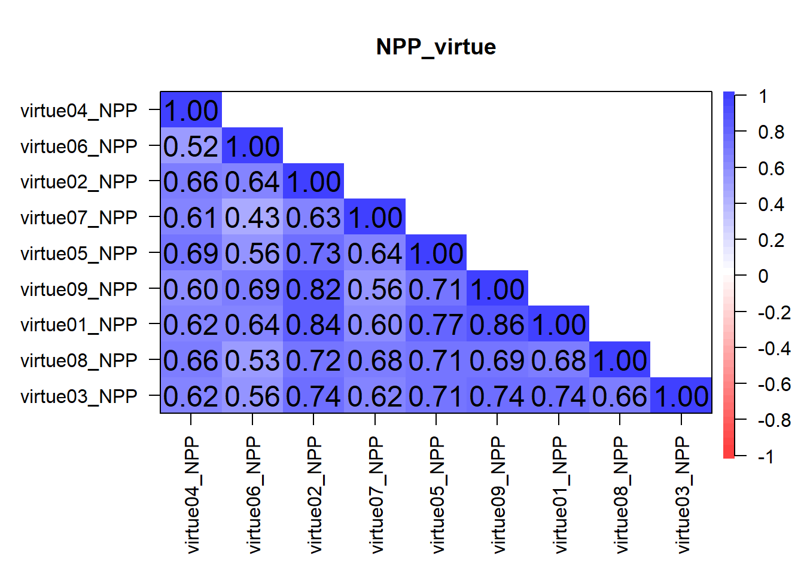
Warning in ks.test.default(x = x, y = "pnorm", mean(x), sd(x)): ties should not
be present for the one-sample Kolmogorov-Smirnov testWarning in ks.test.default(x = x, y = "pnorm", mean(x), sd(x)): ties should not
be present for the one-sample Kolmogorov-Smirnov test
Warning in ks.test.default(x = x, y = "pnorm", mean(x), sd(x)): ties should not
be present for the one-sample Kolmogorov-Smirnov test
Warning in ks.test.default(x = x, y = "pnorm", mean(x), sd(x)): ties should not
be present for the one-sample Kolmogorov-Smirnov test
Warning in ks.test.default(x = x, y = "pnorm", mean(x), sd(x)): ties should not
be present for the one-sample Kolmogorov-Smirnov test
Warning in ks.test.default(x = x, y = "pnorm", mean(x), sd(x)): ties should not
be present for the one-sample Kolmogorov-Smirnov test
Warning in ks.test.default(x = x, y = "pnorm", mean(x), sd(x)): ties should not
be present for the one-sample Kolmogorov-Smirnov test
Warning in ks.test.default(x = x, y = "pnorm", mean(x), sd(x)): ties should not
be present for the one-sample Kolmogorov-Smirnov test
Warning in ks.test.default(x = x, y = "pnorm", mean(x), sd(x)): ties should not
be present for the one-sample Kolmogorov-Smirnov test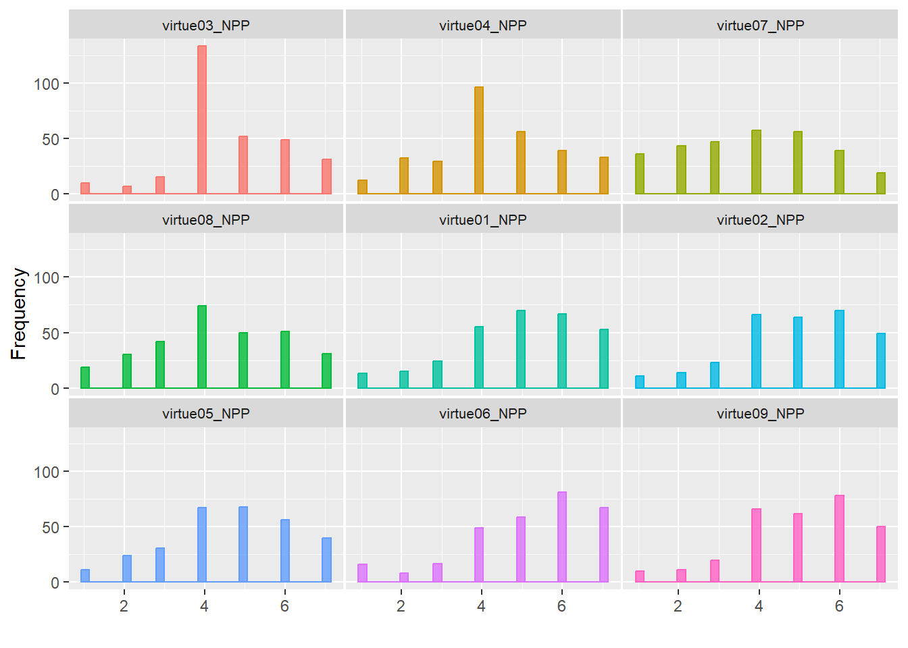
descriptive statistics:
Mean SD Median CoeffofVariation Minimum Maximun Lower Quantile
virtue04_NPP 4.35 1.58 4 0.36 1 7 1
virtue06_NPP 5.15 1.63 5 0.32 1 7 1
virtue02_NPP 4.90 1.56 5 0.32 1 7 1
virtue07_NPP 3.83 1.76 4 0.46 1 7 1
virtue05_NPP 4.63 1.60 5 0.35 1 7 1
virtue09_NPP 5.00 1.52 5 0.30 1 7 1
virtue01_NPP 4.91 1.61 5 0.33 1 7 1
virtue08_NPP 4.29 1.69 4 0.39 1 7 1
virtue03_NPP 4.62 1.36 4 0.29 1 7 1
Upper Quantile Skewness Kurtosis(-3) Shaprio-Test KS-Test
virtue04_NPP 7 -0.12 -0.54 0 0
virtue06_NPP 7 -0.90 0.26 0 0
virtue02_NPP 7 -0.58 -0.20 0 0
virtue07_NPP 7 -0.01 -0.99 0 0
virtue05_NPP 7 -0.36 -0.55 0 0
virtue09_NPP 7 -0.65 0.00 0 0
virtue01_NPP 7 -0.63 -0.21 0 0
virtue08_NPP 7 -0.17 -0.78 0 0
virtue03_NPP 7 -0.20 0.33 0 0
variables under investigation: virtue04_NPP virtue06_NPP virtue02_NPP virtue07_NPP virtue05_NPP virtue09_NPP virtue01_NPP virtue08_NPP virtue03_NPP
Cronbachs Alpha: 0.95 Parallel analysis suggests that the number of factors = 2 and the number of components = 1
NPP_virtue
Number of components: 1 Warning in fa.stats(r = r, f = f, phi = phi, n.obs = n.obs, np.obs = np.obs, :
The estimated weights for the factor scores are probably incorrect. Try a
different factor score estimation method.
EFA factor loadings (1 factor solution):
Loadings:
MR1
virtue04_NPP 0.785
virtue06_NPP 0.707
virtue02_NPP 0.924
virtue07_NPP 0.751
virtue05_NPP 0.868
virtue09_NPP 0.898
virtue01_NPP 0.915
virtue08_NPP 0.840
virtue03_NPP 0.861
MR1
SS loadings 6.378
Proportion Var 0.709
CFA summary and fit statistics:
lavaan 0.6-19 ended normally after 23 iterations
Estimator ML
Optimization method NLMINB
Number of model parameters 18
Number of observations 297
Model Test User Model:
Standard Scaled
Test Statistic 148.533 105.256
Degrees of freedom 27 27
P-value (Chi-square) 0.000 0.000
Scaling correction factor 1.411
Yuan-Bentler correction (Mplus variant)
Model Test Baseline Model:
Test statistic 2357.011 1592.890
Degrees of freedom 36 36
P-value 0.000 0.000
Scaling correction factor 1.480
User Model versus Baseline Model:
Comparative Fit Index (CFI) 0.948 0.950
Tucker-Lewis Index (TLI) 0.930 0.933
Robust Comparative Fit Index (CFI) 0.952
Robust Tucker-Lewis Index (TLI) 0.936
Loglikelihood and Information Criteria:
Loglikelihood user model (H0) -3917.668 -3917.668
Scaling correction factor 1.268
for the MLR correction
Loglikelihood unrestricted model (H1) -3843.402 -3843.402
Scaling correction factor 1.354
for the MLR correction
Akaike (AIC) 7871.337 7871.337
Bayesian (BIC) 7937.824 7937.824
Sample-size adjusted Bayesian (SABIC) 7880.740 7880.740
Root Mean Square Error of Approximation:
RMSEA 0.123 0.099
90 Percent confidence interval - lower 0.104 0.082
90 Percent confidence interval - upper 0.143 0.116
P-value H_0: RMSEA <= 0.050 0.000 0.000
P-value H_0: RMSEA >= 0.080 1.000 0.969
Robust RMSEA 0.117
90 Percent confidence interval - lower 0.094
90 Percent confidence interval - upper 0.141
P-value H_0: Robust RMSEA <= 0.050 0.000
P-value H_0: Robust RMSEA >= 0.080 0.995
Standardized Root Mean Square Residual:
SRMR 0.040 0.040
Parameter Estimates:
Standard errors Sandwich
Information bread Observed
Observed information based on Hessian
Latent Variables:
Estimate Std.Err z-value P(>|z|) Std.lv Std.all
NPP_virtue =~
virtue04_NPP 1.000 1.155 0.733
virtue06_NPP 0.991 0.091 10.930 0.000 1.145 0.703
virtue02_NPP 1.225 0.081 15.195 0.000 1.416 0.907
virtue07_NPP 1.068 0.083 12.863 0.000 1.234 0.702
virtue05_NPP 1.154 0.076 15.231 0.000 1.333 0.834
virtue09_NPP 1.177 0.092 12.846 0.000 1.360 0.897
virtue01_NPP 1.271 0.093 13.623 0.000 1.468 0.911
virtue08_NPP 1.161 0.076 15.180 0.000 1.341 0.797
virtue03_NPP 0.969 0.078 12.444 0.000 1.120 0.826
Variances:
Estimate Std.Err z-value P(>|z|) Std.lv Std.all
.virtue04_NPP 1.149 0.143 8.048 0.000 1.149 0.463
.virtue06_NPP 1.340 0.157 8.546 0.000 1.340 0.506
.virtue02_NPP 0.430 0.055 7.795 0.000 0.430 0.177
.virtue07_NPP 1.567 0.138 11.339 0.000 1.567 0.507
.virtue05_NPP 0.778 0.121 6.456 0.000 0.778 0.305
.virtue09_NPP 0.451 0.059 7.586 0.000 0.451 0.196
.virtue01_NPP 0.440 0.061 7.238 0.000 0.440 0.170
.virtue08_NPP 1.033 0.103 10.051 0.000 1.033 0.365
.virtue03_NPP 0.585 0.051 11.363 0.000 0.585 0.318
NPP_virtue 1.334 0.193 6.920 0.000 1.000 1.000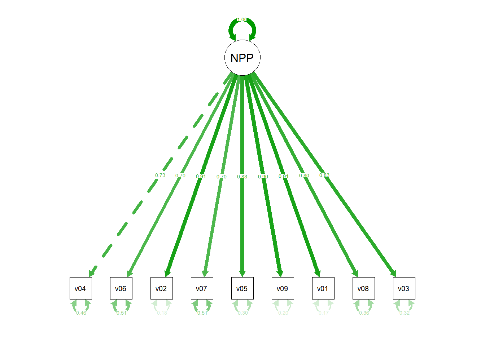
CFA first 6 Modification Indices:
lhs op rhs mi epc sepc.lv sepc.all sepc.nox
50 virtue09_NPP ~~ virtue01_NPP 31.534 0.201 0.201 0.450 0.450
44 virtue07_NPP ~~ virtue08_NPP 24.698 0.392 0.392 0.309 0.309
42 virtue07_NPP ~~ virtue09_NPP 20.014 -0.250 -0.250 -0.298 -0.298
24 virtue04_NPP ~~ virtue09_NPP 16.902 -0.199 -0.199 -0.276 -0.276
53 virtue01_NPP ~~ virtue08_NPP 16.705 -0.195 -0.195 -0.289 -0.289
23 virtue04_NPP ~~ virtue05_NPP 15.014 0.232 0.232 0.246 0.246for SR
tech <- "SR"
for(e in ethicTheories){
regEx <- paste0(e, ".*_", tech, "$")
nameVariable <- paste0(tech, "_", e)
tmp_numVars <- sum(str_detect(string = colnames(dat), pattern = regEx))
cat("\n>>>", e, "of", tech, "(", tmp_numVars, "items )<<<\n\n")
tmp_dat <- na.omit(dat[,str_detect(string = colnames(dat), pattern = regEx)])
tmp <- CFAstats(dataset = tmp_dat, regularExp = regEx, labelLatent = str_remove(string = nameVariable, pattern = "mean_"),
showPlots = TRUE,
computeEFA = TRUE,
computeCFA = TRUE,
computeCFAMplus = FALSE)
}
>>> contractualist of SR ( 6 items )<<<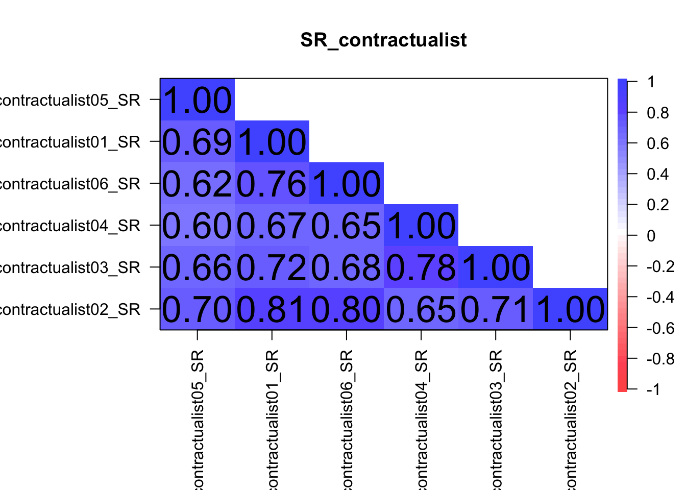
Warning in ks.test.default(x = x, y = "pnorm", mean(x), sd(x)): ties should not
be present for the one-sample Kolmogorov-Smirnov test
Warning in ks.test.default(x = x, y = "pnorm", mean(x), sd(x)): ties should not
be present for the one-sample Kolmogorov-Smirnov test
Warning in ks.test.default(x = x, y = "pnorm", mean(x), sd(x)): ties should not
be present for the one-sample Kolmogorov-Smirnov test
Warning in ks.test.default(x = x, y = "pnorm", mean(x), sd(x)): ties should not
be present for the one-sample Kolmogorov-Smirnov test
Warning in ks.test.default(x = x, y = "pnorm", mean(x), sd(x)): ties should not
be present for the one-sample Kolmogorov-Smirnov test
Warning in ks.test.default(x = x, y = "pnorm", mean(x), sd(x)): ties should not
be present for the one-sample Kolmogorov-Smirnov test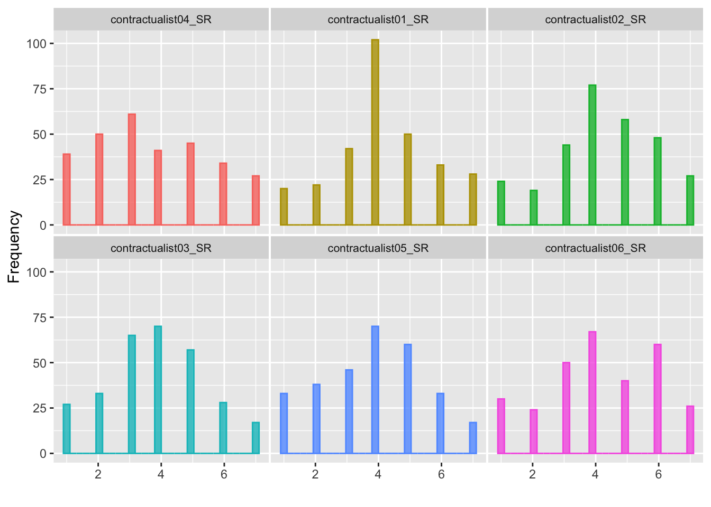
descriptive statistics:
Mean SD Median CoeffofVariation Minimum Maximun
contractualist05_SR 3.85 1.68 4 0.44 1 7
contractualist01_SR 4.18 1.57 4 0.38 1 7
contractualist06_SR 4.17 1.76 4 0.42 1 7
contractualist04_SR 3.72 1.85 3 0.50 1 7
contractualist03_SR 3.84 1.60 4 0.42 1 7
contractualist02_SR 4.27 1.65 4 0.39 1 7
Lower Quantile Upper Quantile Skewness Kurtosis(-3)
contractualist05_SR 1 7 -0.06 -0.81
contractualist01_SR 1 7 -0.08 -0.37
contractualist06_SR 1 7 -0.18 -0.90
contractualist04_SR 1 7 0.21 -1.04
contractualist03_SR 1 7 0.04 -0.61
contractualist02_SR 1 7 -0.26 -0.58
Shaprio-Test KS-Test
contractualist05_SR 0 0
contractualist01_SR 0 0
contractualist06_SR 0 0
contractualist04_SR 0 0
contractualist03_SR 0 0
contractualist02_SR 0 0
variables under investigation: contractualist05_SR contractualist01_SR contractualist06_SR contractualist04_SR contractualist03_SR contractualist02_SR
Cronbachs Alpha: 0.93 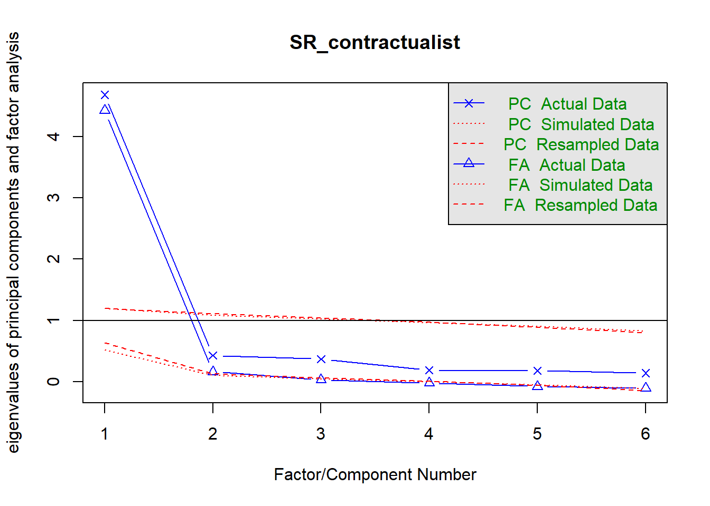
Parallel analysis suggests that the number of factors = 1 and the number of components = 1
SR_contractualist
Number of components: 1
EFA factor loadings (1 factor solution):
Loadings:
MR1
contractualist05_SR 0.790
contractualist01_SR 0.904
contractualist06_SR 0.861
contractualist04_SR 0.818
contractualist03_SR 0.868
contractualist02_SR 0.904
MR1
SS loadings 4.424
Proportion Var 0.737
CFA summary and fit statistics:
lavaan 0.6-19 ended normally after 21 iterations
Estimator ML
Optimization method NLMINB
Number of model parameters 12
Number of observations 297
Model Test User Model:
Standard Scaled
Test Statistic 73.480 41.254
Degrees of freedom 9 9
P-value (Chi-square) 0.000 0.000
Scaling correction factor 1.781
Yuan-Bentler correction (Mplus variant)
Model Test Baseline Model:
Test statistic 1455.815 779.696
Degrees of freedom 15 15
P-value 0.000 0.000
Scaling correction factor 1.867
User Model versus Baseline Model:
Comparative Fit Index (CFI) 0.955 0.958
Tucker-Lewis Index (TLI) 0.925 0.930
Robust Comparative Fit Index (CFI) 0.960
Robust Tucker-Lewis Index (TLI) 0.933
Loglikelihood and Information Criteria:
Loglikelihood user model (H0) -2762.078 -2762.078
Scaling correction factor 1.319
for the MLR correction
Loglikelihood unrestricted model (H1) -2725.338 -2725.338
Scaling correction factor 1.517
for the MLR correction
Akaike (AIC) 5548.156 5548.156
Bayesian (BIC) 5592.481 5592.481
Sample-size adjusted Bayesian (SABIC) 5554.425 5554.425
Root Mean Square Error of Approximation:
RMSEA 0.155 0.110
90 Percent confidence interval - lower 0.124 0.085
90 Percent confidence interval - upper 0.189 0.136
P-value H_0: RMSEA <= 0.050 0.000 0.000
P-value H_0: RMSEA >= 0.080 1.000 0.976
Robust RMSEA 0.147
90 Percent confidence interval - lower 0.103
90 Percent confidence interval - upper 0.193
P-value H_0: Robust RMSEA <= 0.050 0.000
P-value H_0: Robust RMSEA >= 0.080 0.993
Standardized Root Mean Square Residual:
SRMR 0.035 0.035
Parameter Estimates:
Standard errors Sandwich
Information bread Observed
Observed information based on Hessian
Latent Variables:
Estimate Std.Err z-value P(>|z|) Std.lv Std.all
SR_contractualist =~
cntrctlst05_SR 1.000 1.285 0.767
cntrctlst01_SR 1.084 0.061 17.788 0.000 1.393 0.886
cntrctlst06_SR 1.171 0.072 16.251 0.000 1.505 0.854
cntrctlst04_SR 1.120 0.071 15.689 0.000 1.440 0.780
cntrctlst03_SR 1.028 0.061 16.869 0.000 1.322 0.829
cntrctlst02_SR 1.150 0.064 17.945 0.000 1.478 0.897
Variances:
Estimate Std.Err z-value P(>|z|) Std.lv Std.all
.cntrctlst05_SR 1.154 0.149 7.724 0.000 1.154 0.411
.cntrctlst01_SR 0.531 0.078 6.790 0.000 0.531 0.215
.cntrctlst06_SR 0.839 0.133 6.324 0.000 0.839 0.270
.cntrctlst04_SR 1.336 0.150 8.934 0.000 1.336 0.392
.cntrctlst03_SR 0.792 0.085 9.347 0.000 0.792 0.312
.cntrctlst02_SR 0.532 0.096 5.538 0.000 0.532 0.196
SR_contractlst 1.652 0.195 8.461 0.000 1.000 1.000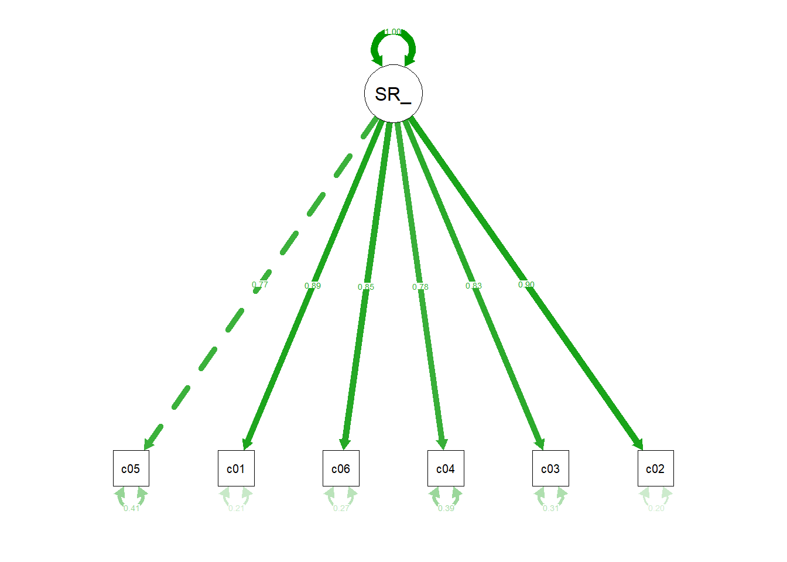
CFA first 6 Modification Indices:
lhs op rhs mi epc sepc.lv sepc.all
26 contractualist04_SR ~~ contractualist03_SR 56.495 0.528 0.528 0.513
25 contractualist06_SR ~~ contractualist02_SR 17.644 0.240 0.240 0.360
27 contractualist04_SR ~~ contractualist02_SR 16.868 -0.265 -0.265 -0.315
28 contractualist03_SR ~~ contractualist02_SR 11.708 -0.181 -0.181 -0.279
15 contractualist05_SR ~~ contractualist06_SR 6.138 -0.170 -0.170 -0.173
22 contractualist01_SR ~~ contractualist02_SR 3.571 0.095 0.095 0.178
sepc.nox
26 0.513
25 0.360
27 -0.315
28 -0.279
15 -0.173
22 0.178
>>> deontology of SR ( 8 items )<<<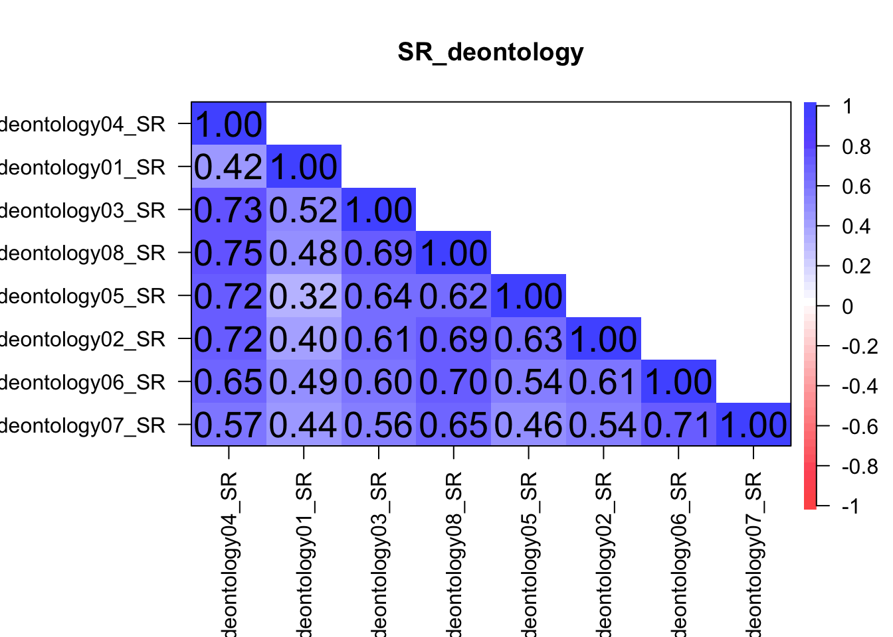
Warning in ks.test.default(x = x, y = "pnorm", mean(x), sd(x)): ties should not
be present for the one-sample Kolmogorov-Smirnov test
Warning in ks.test.default(x = x, y = "pnorm", mean(x), sd(x)): ties should not
be present for the one-sample Kolmogorov-Smirnov test
Warning in ks.test.default(x = x, y = "pnorm", mean(x), sd(x)): ties should not
be present for the one-sample Kolmogorov-Smirnov test
Warning in ks.test.default(x = x, y = "pnorm", mean(x), sd(x)): ties should not
be present for the one-sample Kolmogorov-Smirnov test
Warning in ks.test.default(x = x, y = "pnorm", mean(x), sd(x)): ties should not
be present for the one-sample Kolmogorov-Smirnov test
Warning in ks.test.default(x = x, y = "pnorm", mean(x), sd(x)): ties should not
be present for the one-sample Kolmogorov-Smirnov test
Warning in ks.test.default(x = x, y = "pnorm", mean(x), sd(x)): ties should not
be present for the one-sample Kolmogorov-Smirnov test
Warning in ks.test.default(x = x, y = "pnorm", mean(x), sd(x)): ties should not
be present for the one-sample Kolmogorov-Smirnov test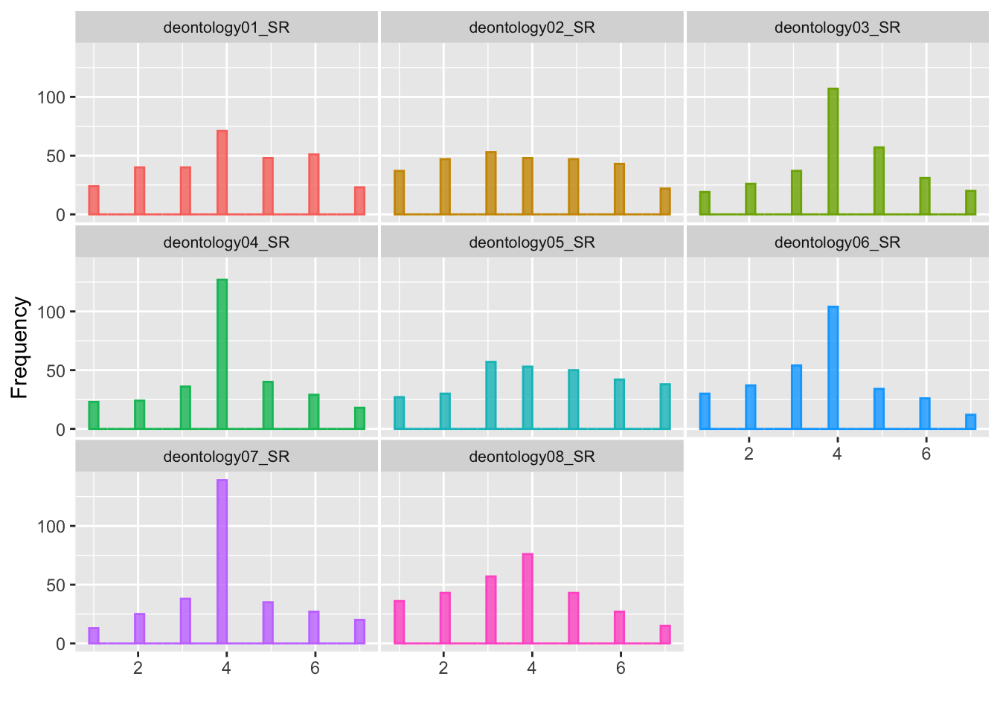
descriptive statistics:
Mean SD Median CoeffofVariation Minimum Maximun
deontology04_SR 4.00 1.49 4 0.37 1 7
deontology01_SR 4.09 1.72 4 0.42 1 7
deontology03_SR 4.11 1.50 4 0.37 1 7
deontology08_SR 3.63 1.64 4 0.45 1 7
deontology05_SR 4.17 1.81 4 0.43 1 7
deontology02_SR 3.80 1.82 4 0.48 1 7
deontology06_SR 3.68 1.52 4 0.41 1 7
deontology07_SR 4.07 1.40 4 0.34 1 7
Lower Quantile Upper Quantile Skewness Kurtosis(-3)
deontology04_SR 1 7 -0.09 -0.08
deontology01_SR 1 7 -0.11 -0.91
deontology03_SR 1 7 -0.14 -0.23
deontology08_SR 1 7 0.14 -0.69
deontology05_SR 1 7 -0.06 -0.98
deontology02_SR 1 7 0.08 -1.08
deontology06_SR 1 7 0.08 -0.38
deontology07_SR 1 7 0.09 0.16
Shaprio-Test KS-Test
deontology04_SR 0 0
deontology01_SR 0 0
deontology03_SR 0 0
deontology08_SR 0 0
deontology05_SR 0 0
deontology02_SR 0 0
deontology06_SR 0 0
deontology07_SR 0 0
variables under investigation: deontology04_SR deontology01_SR deontology03_SR deontology08_SR deontology05_SR deontology02_SR deontology06_SR deontology07_SR
Cronbachs Alpha: 0.92 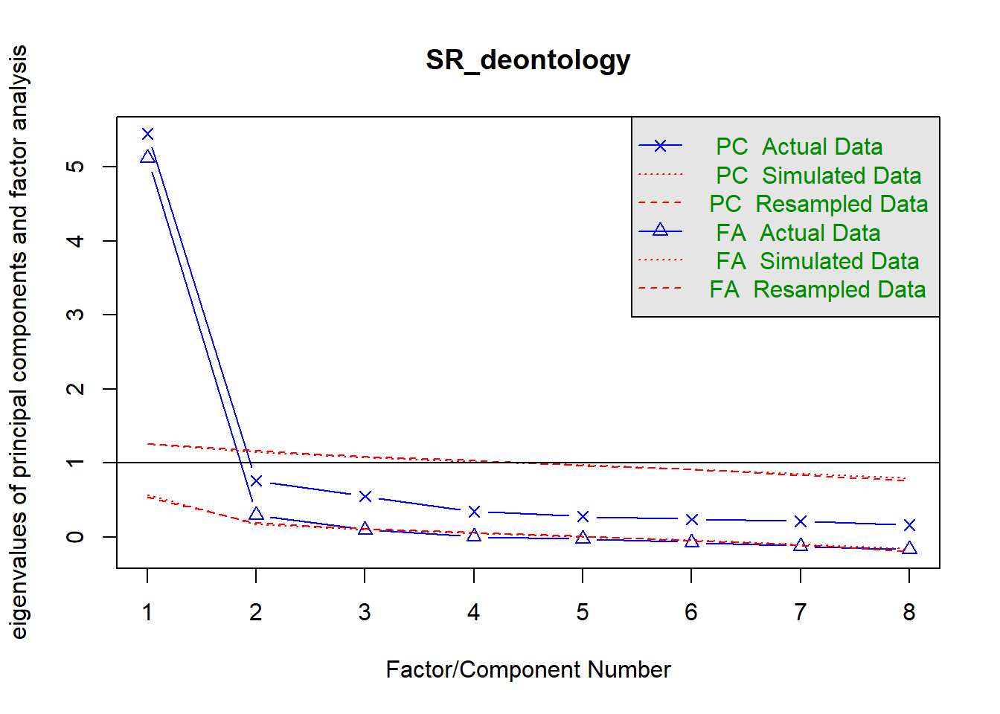
Parallel analysis suggests that the number of factors = 2 and the number of components = 1
SR_deontology
Number of components: 1
EFA factor loadings (1 factor solution):
Loadings:
MR1
deontology04_SR 0.900
deontology01_SR 0.576
deontology03_SR 0.838
deontology08_SR 0.891
deontology05_SR 0.762
deontology02_SR 0.806
deontology06_SR 0.823
deontology07_SR 0.760
MR1
SS loadings 5.121
Proportion Var 0.640
CFA summary and fit statistics:
lavaan 0.6-19 ended normally after 22 iterations
Estimator ML
Optimization method NLMINB
Number of model parameters 16
Number of observations 297
Model Test User Model:
Standard Scaled
Test Statistic 110.523 80.440
Degrees of freedom 20 20
P-value (Chi-square) 0.000 0.000
Scaling correction factor 1.374
Yuan-Bentler correction (Mplus variant)
Model Test Baseline Model:
Test statistic 1603.402 1056.319
Degrees of freedom 28 28
P-value 0.000 0.000
Scaling correction factor 1.518
User Model versus Baseline Model:
Comparative Fit Index (CFI) 0.943 0.941
Tucker-Lewis Index (TLI) 0.920 0.918
Robust Comparative Fit Index (CFI) 0.947
Robust Tucker-Lewis Index (TLI) 0.926
Loglikelihood and Information Criteria:
Loglikelihood user model (H0) -3746.677 -3746.677
Scaling correction factor 1.308
for the MLR correction
Loglikelihood unrestricted model (H1) -3691.416 -3691.416
Scaling correction factor 1.345
for the MLR correction
Akaike (AIC) 7525.354 7525.354
Bayesian (BIC) 7584.454 7584.454
Sample-size adjusted Bayesian (SABIC) 7533.712 7533.712
Root Mean Square Error of Approximation:
RMSEA 0.123 0.101
90 Percent confidence interval - lower 0.102 0.082
90 Percent confidence interval - upper 0.146 0.121
P-value H_0: RMSEA <= 0.050 0.000 0.000
P-value H_0: RMSEA >= 0.080 0.999 0.962
Robust RMSEA 0.118
90 Percent confidence interval - lower 0.092
90 Percent confidence interval - upper 0.146
P-value H_0: Robust RMSEA <= 0.050 0.000
P-value H_0: Robust RMSEA >= 0.080 0.990
Standardized Root Mean Square Residual:
SRMR 0.045 0.045
Parameter Estimates:
Standard errors Sandwich
Information bread Observed
Observed information based on Hessian
Latent Variables:
Estimate Std.Err z-value P(>|z|) Std.lv Std.all
SR_deontology =~
deontolgy04_SR 1.000 1.301 0.874
deontolgy01_SR 0.713 0.087 8.245 0.000 0.928 0.541
deontolgy03_SR 0.936 0.044 21.480 0.000 1.217 0.811
deontolgy08_SR 1.092 0.051 21.292 0.000 1.420 0.866
deontolgy05_SR 1.047 0.063 16.593 0.000 1.362 0.753
deontolgy02_SR 1.103 0.055 20.134 0.000 1.435 0.790
deontolgy06_SR 0.918 0.068 13.594 0.000 1.194 0.785
deontolgy07_SR 0.770 0.064 11.961 0.000 1.001 0.719
Variances:
Estimate Std.Err z-value P(>|z|) Std.lv Std.all
.deontolgy04_SR 0.520 0.067 7.770 0.000 0.520 0.235
.deontolgy01_SR 2.077 0.213 9.758 0.000 2.077 0.707
.deontolgy03_SR 0.773 0.095 8.109 0.000 0.773 0.343
.deontolgy08_SR 0.674 0.082 8.188 0.000 0.674 0.250
.deontolgy05_SR 1.417 0.222 6.380 0.000 1.417 0.433
.deontolgy02_SR 1.237 0.129 9.615 0.000 1.237 0.375
.deontolgy06_SR 0.888 0.124 7.166 0.000 0.888 0.384
.deontolgy07_SR 0.939 0.102 9.171 0.000 0.939 0.484
SR_deontology 1.692 0.181 9.357 0.000 1.000 1.000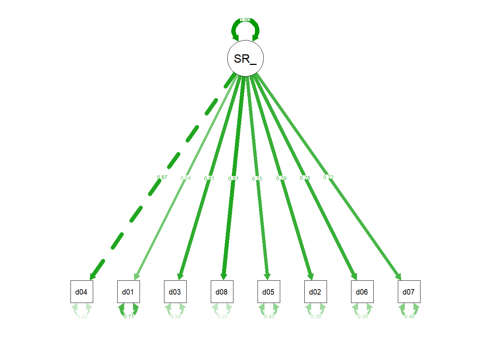
CFA first 6 Modification Indices:
lhs op rhs mi epc sepc.lv sepc.all sepc.nox
45 deontology06_SR ~~ deontology07_SR 45.342 0.401 0.401 0.439 0.439
21 deontology04_SR ~~ deontology05_SR 18.985 0.274 0.274 0.319 0.319
24 deontology04_SR ~~ deontology07_SR 11.857 -0.173 -0.173 -0.247 -0.247
42 deontology05_SR ~~ deontology07_SR 10.257 -0.237 -0.237 -0.206 -0.206
25 deontology01_SR ~~ deontology03_SR 9.952 0.255 0.255 0.201 0.201
27 deontology01_SR ~~ deontology05_SR 9.001 -0.320 -0.320 -0.186 -0.186
>>> hedonism of SR ( 9 items )<<<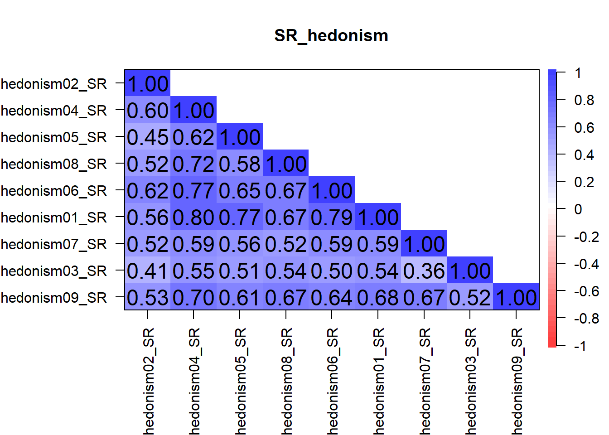
Warning in ks.test.default(x = x, y = "pnorm", mean(x), sd(x)): ties should not
be present for the one-sample Kolmogorov-Smirnov test
Warning in ks.test.default(x = x, y = "pnorm", mean(x), sd(x)): ties should not
be present for the one-sample Kolmogorov-Smirnov test
Warning in ks.test.default(x = x, y = "pnorm", mean(x), sd(x)): ties should not
be present for the one-sample Kolmogorov-Smirnov test
Warning in ks.test.default(x = x, y = "pnorm", mean(x), sd(x)): ties should not
be present for the one-sample Kolmogorov-Smirnov test
Warning in ks.test.default(x = x, y = "pnorm", mean(x), sd(x)): ties should not
be present for the one-sample Kolmogorov-Smirnov test
Warning in ks.test.default(x = x, y = "pnorm", mean(x), sd(x)): ties should not
be present for the one-sample Kolmogorov-Smirnov test
Warning in ks.test.default(x = x, y = "pnorm", mean(x), sd(x)): ties should not
be present for the one-sample Kolmogorov-Smirnov test
Warning in ks.test.default(x = x, y = "pnorm", mean(x), sd(x)): ties should not
be present for the one-sample Kolmogorov-Smirnov test
Warning in ks.test.default(x = x, y = "pnorm", mean(x), sd(x)): ties should not
be present for the one-sample Kolmogorov-Smirnov test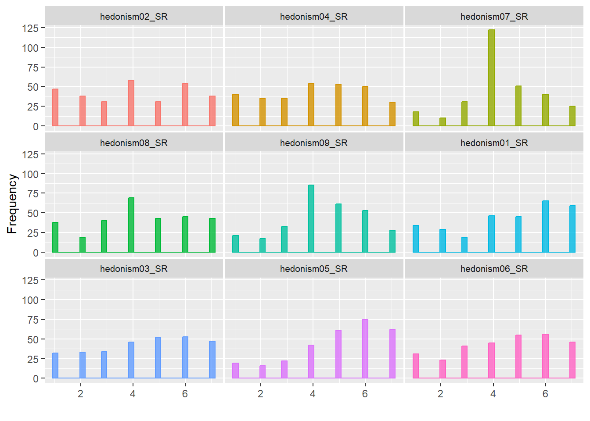
descriptive statistics:
Mean SD Median CoeffofVariation Minimum Maximun Lower Quantile
hedonism02_SR 4.02 2.01 4 0.50 1 7 1
hedonism04_SR 4.06 1.89 4 0.47 1 7 1
hedonism05_SR 4.96 1.74 5 0.35 1 7 1
hedonism08_SR 4.24 1.88 4 0.44 1 7 1
hedonism06_SR 4.42 1.89 5 0.43 1 7 1
hedonism01_SR 4.58 1.99 5 0.44 1 7 1
hedonism07_SR 4.34 1.46 4 0.34 1 7 1
hedonism03_SR 4.35 1.93 5 0.44 1 7 1
hedonism09_SR 4.41 1.61 4 0.36 1 7 1
Upper Quantile Skewness Kurtosis(-3) Shaprio-Test KS-Test
hedonism02_SR 7 -0.07 -1.25 0 0
hedonism04_SR 7 -0.16 -1.09 0 0
hedonism05_SR 7 -0.76 -0.28 0 0
hedonism08_SR 7 -0.20 -0.93 0 0
hedonism06_SR 7 -0.34 -0.96 0 0
hedonism01_SR 7 -0.48 -1.00 0 0
hedonism07_SR 7 -0.23 0.10 0 0
hedonism03_SR 7 -0.27 -1.09 0 0
hedonism09_SR 7 -0.37 -0.38 0 0
variables under investigation: hedonism02_SR hedonism04_SR hedonism05_SR hedonism08_SR hedonism06_SR hedonism01_SR hedonism07_SR hedonism03_SR hedonism09_SR
Cronbachs Alpha: 0.93 Warning in fa.stats(r = r, f = f, phi = phi, n.obs = n.obs, np.obs = np.obs, :
The estimated weights for the factor scores are probably incorrect. Try a
different factor score estimation method.Parallel analysis suggests that the number of factors = 1 and the number of components = 1
SR_hedonism
Number of components: 1 Warning in fa.stats(r = r, f = f, phi = phi, n.obs = n.obs, np.obs = np.obs, :
The estimated weights for the factor scores are probably incorrect. Try a
different factor score estimation method.
EFA factor loadings (1 factor solution):
Loadings:
MR1
hedonism02_SR 0.703
hedonism04_SR 0.899
hedonism05_SR 0.792
hedonism08_SR 0.812
hedonism06_SR 0.882
hedonism01_SR 0.913
hedonism07_SR 0.735
hedonism03_SR 0.642
hedonism09_SR 0.823
MR1
SS loadings 5.828
Proportion Var 0.648
CFA summary and fit statistics:
lavaan 0.6-19 ended normally after 25 iterations
Estimator ML
Optimization method NLMINB
Number of model parameters 18
Number of observations 297
Model Test User Model:
Standard Scaled
Test Statistic 126.429 82.776
Degrees of freedom 27 27
P-value (Chi-square) 0.000 0.000
Scaling correction factor 1.527
Yuan-Bentler correction (Mplus variant)
Model Test Baseline Model:
Test statistic 1949.496 1228.589
Degrees of freedom 36 36
P-value 0.000 0.000
Scaling correction factor 1.587
User Model versus Baseline Model:
Comparative Fit Index (CFI) 0.948 0.953
Tucker-Lewis Index (TLI) 0.931 0.938
Robust Comparative Fit Index (CFI) 0.955
Robust Tucker-Lewis Index (TLI) 0.940
Loglikelihood and Information Criteria:
Loglikelihood user model (H0) -4469.439 -4469.439
Scaling correction factor 1.191
for the MLR correction
Loglikelihood unrestricted model (H1) -4406.225 -4406.225
Scaling correction factor 1.393
for the MLR correction
Akaike (AIC) 8974.878 8974.878
Bayesian (BIC) 9041.366 9041.366
Sample-size adjusted Bayesian (SABIC) 8984.281 8984.281
Root Mean Square Error of Approximation:
RMSEA 0.111 0.083
90 Percent confidence interval - lower 0.092 0.067
90 Percent confidence interval - upper 0.131 0.100
P-value H_0: RMSEA <= 0.050 0.000 0.001
P-value H_0: RMSEA >= 0.080 0.996 0.649
Robust RMSEA 0.103
90 Percent confidence interval - lower 0.078
90 Percent confidence interval - upper 0.129
P-value H_0: Robust RMSEA <= 0.050 0.000
P-value H_0: Robust RMSEA >= 0.080 0.937
Standardized Root Mean Square Residual:
SRMR 0.036 0.036
Parameter Estimates:
Standard errors Sandwich
Information bread Observed
Observed information based on Hessian
Latent Variables:
Estimate Std.Err z-value P(>|z|) Std.lv Std.all
SR_hedonism =~
hedonism02_SR 1.000 1.335 0.666
hedonism04_SR 1.247 0.081 15.398 0.000 1.666 0.883
hedonism05_SR 1.005 0.086 11.657 0.000 1.342 0.771
hedonism08_SR 1.106 0.076 14.572 0.000 1.477 0.785
hedonism06_SR 1.216 0.077 15.818 0.000 1.624 0.863
hedonism01_SR 1.333 0.091 14.636 0.000 1.781 0.895
hedonism07_SR 0.759 0.063 12.041 0.000 1.014 0.694
hedonism03_SR 0.893 0.085 10.534 0.000 1.192 0.618
hedonism09_SR 0.952 0.068 13.965 0.000 1.271 0.793
Variances:
Estimate Std.Err z-value P(>|z|) Std.lv Std.all
.hedonism02_SR 2.240 0.220 10.170 0.000 2.240 0.557
.hedonism04_SR 0.784 0.113 6.908 0.000 0.784 0.220
.hedonism05_SR 1.231 0.167 7.355 0.000 1.231 0.406
.hedonism08_SR 1.360 0.144 9.454 0.000 1.360 0.384
.hedonism06_SR 0.906 0.114 7.935 0.000 0.906 0.256
.hedonism01_SR 0.790 0.118 6.679 0.000 0.790 0.200
.hedonism07_SR 1.109 0.118 9.360 0.000 1.109 0.519
.hedonism03_SR 2.300 0.228 10.088 0.000 2.300 0.618
.hedonism09_SR 0.956 0.099 9.636 0.000 0.956 0.372
SR_hedonism 1.783 0.252 7.062 0.000 1.000 1.000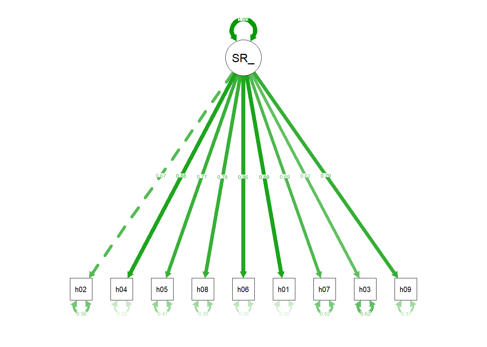
CFA first 6 Modification Indices:
lhs op rhs mi epc sepc.lv sepc.all sepc.nox
37 hedonism05_SR ~~ hedonism01_SR 35.040 0.422 0.422 0.428 0.428
54 hedonism07_SR ~~ hedonism09_SR 25.921 0.332 0.332 0.323 0.323
28 hedonism04_SR ~~ hedonism05_SR 17.565 -0.291 -0.291 -0.296 -0.296
49 hedonism06_SR ~~ hedonism09_SR 10.578 -0.210 -0.210 -0.226 -0.226
42 hedonism08_SR ~~ hedonism01_SR 8.210 -0.217 -0.217 -0.209 -0.209
45 hedonism08_SR ~~ hedonism09_SR 7.139 0.199 0.199 0.174 0.174
>>> relativist of SR ( 5 items )<<<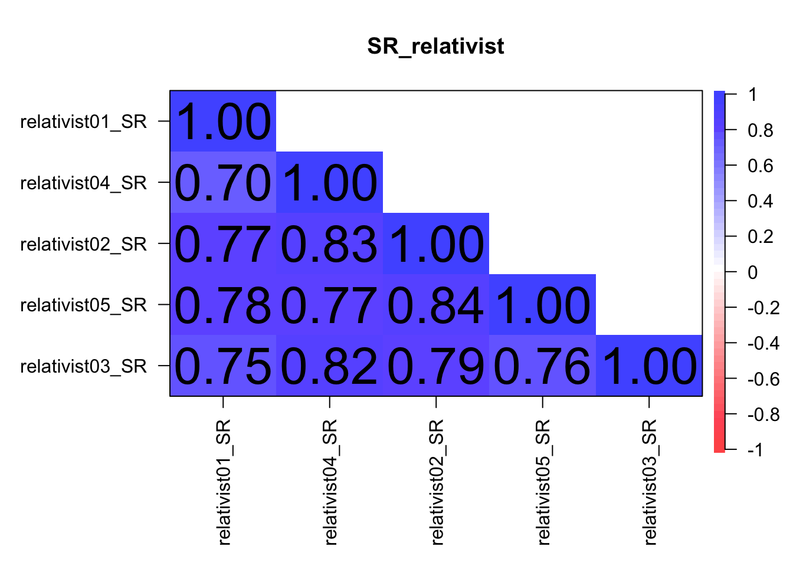
Warning in ks.test.default(x = x, y = "pnorm", mean(x), sd(x)): ties should not
be present for the one-sample Kolmogorov-Smirnov test
Warning in ks.test.default(x = x, y = "pnorm", mean(x), sd(x)): ties should not
be present for the one-sample Kolmogorov-Smirnov test
Warning in ks.test.default(x = x, y = "pnorm", mean(x), sd(x)): ties should not
be present for the one-sample Kolmogorov-Smirnov test
Warning in ks.test.default(x = x, y = "pnorm", mean(x), sd(x)): ties should not
be present for the one-sample Kolmogorov-Smirnov test
Warning in ks.test.default(x = x, y = "pnorm", mean(x), sd(x)): ties should not
be present for the one-sample Kolmogorov-Smirnov test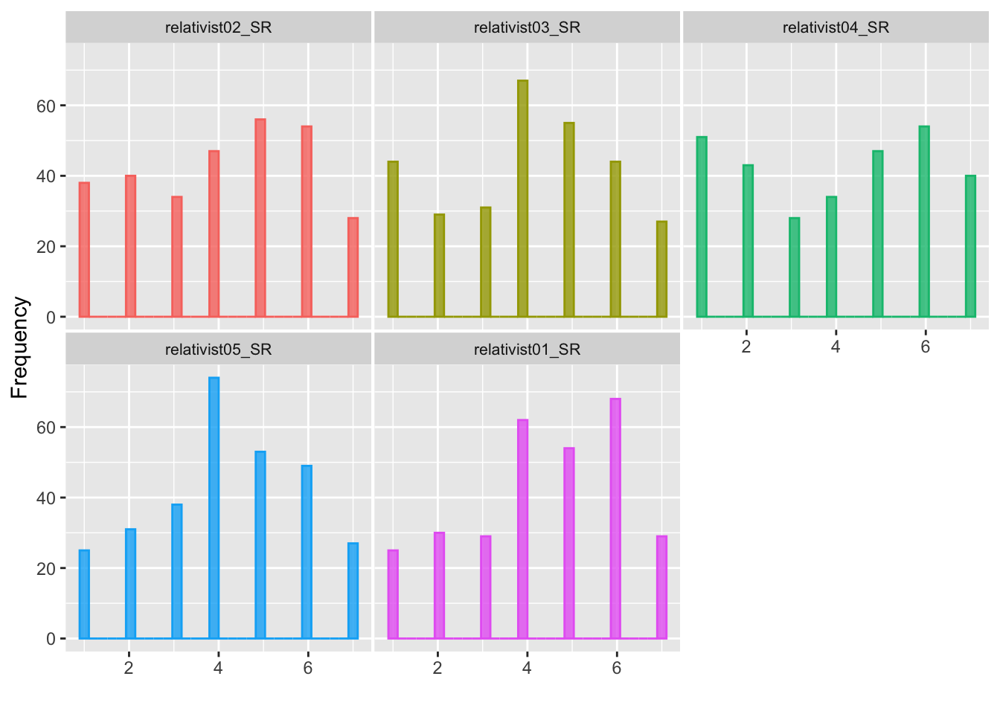
descriptive statistics:
Mean SD Median CoeffofVariation Minimum Maximun
relativist01_SR 4.38 1.76 5 0.40 1 7
relativist04_SR 4.03 2.08 4 0.52 1 7
relativist02_SR 4.07 1.89 4 0.46 1 7
relativist05_SR 4.19 1.71 4 0.41 1 7
relativist03_SR 4.01 1.85 4 0.46 1 7
Lower Quantile Upper Quantile Skewness Kurtosis(-3)
relativist01_SR 1 7 -0.39 -0.82
relativist04_SR 1 7 -0.11 -1.37
relativist02_SR 1 7 -0.18 -1.14
relativist05_SR 1 7 -0.19 -0.79
relativist03_SR 1 7 -0.18 -0.98
Shaprio-Test KS-Test
relativist01_SR 0 0
relativist04_SR 0 0
relativist02_SR 0 0
relativist05_SR 0 0
relativist03_SR 0 0
variables under investigation: relativist01_SR relativist04_SR relativist02_SR relativist05_SR relativist03_SR
Cronbachs Alpha: 0.95 Warning in fa.stats(r = r, f = f, phi = phi, n.obs = n.obs, np.obs = np.obs, :
The estimated weights for the factor scores are probably incorrect. Try a
different factor score estimation method.Warning in fac(r = r, nfactors = nfactors, n.obs = n.obs, rotate = rotate, : An
ultra-Heywood case was detected. Examine the results carefully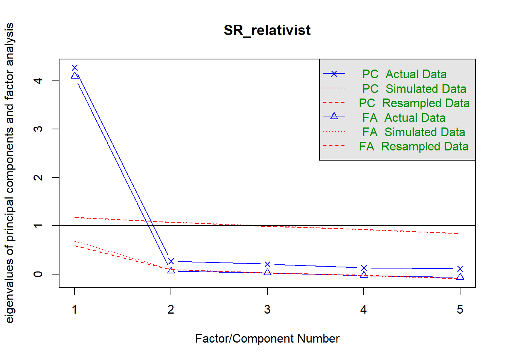
Parallel analysis suggests that the number of factors = 1 and the number of components = 1
SR_relativist
Number of components: 1
EFA factor loadings (1 factor solution):
Loadings:
MR1
relativist01_SR 0.862
relativist04_SR 0.902
relativist02_SR 0.944
relativist05_SR 0.910
relativist03_SR 0.908
MR1
SS loadings 4.099
Proportion Var 0.820
CFA summary and fit statistics:
lavaan 0.6-19 ended normally after 22 iterations
Estimator ML
Optimization method NLMINB
Number of model parameters 10
Number of observations 297
Model Test User Model:
Standard Scaled
Test Statistic 35.830 20.008
Degrees of freedom 5 5
P-value (Chi-square) 0.000 0.001
Scaling correction factor 1.791
Yuan-Bentler correction (Mplus variant)
Model Test Baseline Model:
Test statistic 1451.391 798.644
Degrees of freedom 10 10
P-value 0.000 0.000
Scaling correction factor 1.817
User Model versus Baseline Model:
Comparative Fit Index (CFI) 0.979 0.981
Tucker-Lewis Index (TLI) 0.957 0.962
Robust Comparative Fit Index (CFI) 0.981
Robust Tucker-Lewis Index (TLI) 0.962
Loglikelihood and Information Criteria:
Loglikelihood user model (H0) -2314.868 -2314.868
Scaling correction factor 1.167
for the MLR correction
Loglikelihood unrestricted model (H1) -2296.953 -2296.953
Scaling correction factor 1.375
for the MLR correction
Akaike (AIC) 4649.736 4649.736
Bayesian (BIC) 4686.673 4686.673
Sample-size adjusted Bayesian (SABIC) 4654.960 4654.960
Root Mean Square Error of Approximation:
RMSEA 0.144 0.101
90 Percent confidence interval - lower 0.102 0.067
90 Percent confidence interval - upper 0.190 0.136
P-value H_0: RMSEA <= 0.050 0.000 0.008
P-value H_0: RMSEA >= 0.080 0.993 0.856
Robust RMSEA 0.135
90 Percent confidence interval - lower 0.076
90 Percent confidence interval - upper 0.199
P-value H_0: Robust RMSEA <= 0.050 0.011
P-value H_0: Robust RMSEA >= 0.080 0.940
Standardized Root Mean Square Residual:
SRMR 0.020 0.020
Parameter Estimates:
Standard errors Sandwich
Information bread Observed
Observed information based on Hessian
Latent Variables:
Estimate Std.Err z-value P(>|z|) Std.lv Std.all
SR_relativist =~
relativst01_SR 1.000 1.472 0.837
relativst04_SR 1.251 0.058 21.731 0.000 1.841 0.886
relativst02_SR 1.191 0.049 24.345 0.000 1.753 0.929
relativst05_SR 1.040 0.043 23.912 0.000 1.531 0.895
relativst03_SR 1.098 0.047 23.299 0.000 1.617 0.874
Variances:
Estimate Std.Err z-value P(>|z|) Std.lv Std.all
.relativst01_SR 0.925 0.100 9.254 0.000 0.925 0.299
.relativst04_SR 0.925 0.131 7.065 0.000 0.925 0.214
.relativst02_SR 0.491 0.083 5.939 0.000 0.491 0.138
.relativst05_SR 0.580 0.071 8.171 0.000 0.580 0.198
.relativst03_SR 0.811 0.120 6.752 0.000 0.811 0.237
SR_relativist 2.166 0.213 10.177 0.000 1.000 1.000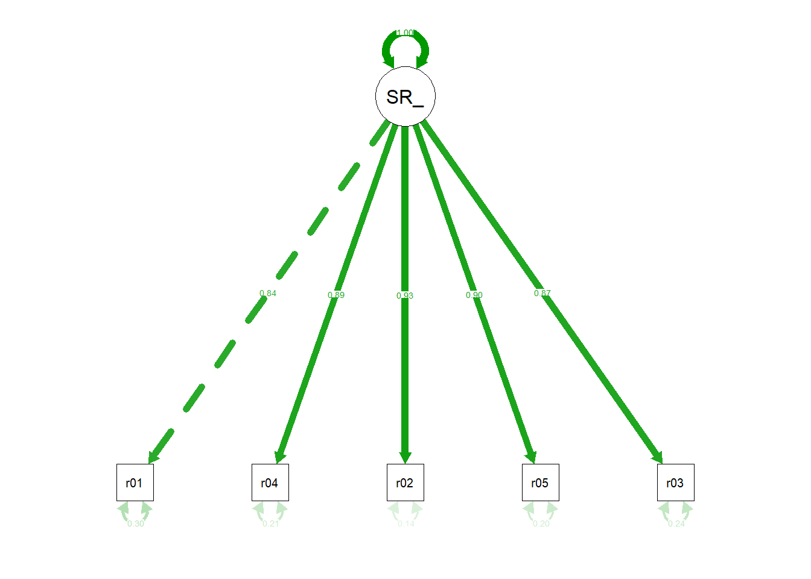
CFA first 6 Modification Indices:
lhs op rhs mi epc sepc.lv sepc.all sepc.nox
18 relativist04_SR ~~ relativist03_SR 18.424 0.289 0.289 0.334 0.334
12 relativist01_SR ~~ relativist04_SR 12.712 -0.242 -0.242 -0.261 -0.261
20 relativist02_SR ~~ relativist03_SR 9.563 -0.181 -0.181 -0.287 -0.287
14 relativist01_SR ~~ relativist05_SR 6.125 0.136 0.136 0.185 0.185
17 relativist04_SR ~~ relativist05_SR 5.456 -0.141 -0.141 -0.193 -0.193
21 relativist05_SR ~~ relativist03_SR 4.678 -0.118 -0.118 -0.173 -0.173
>>> utilitarian of SR ( 9 items )<<<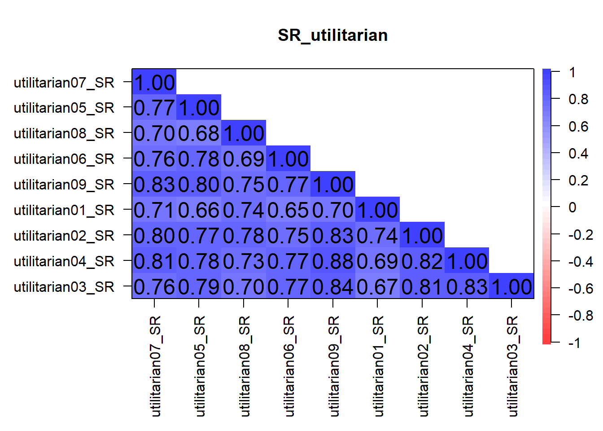
Warning in ks.test.default(x = x, y = "pnorm", mean(x), sd(x)): ties should not
be present for the one-sample Kolmogorov-Smirnov testWarning in ks.test.default(x = x, y = "pnorm", mean(x), sd(x)): ties should not
be present for the one-sample Kolmogorov-Smirnov test
Warning in ks.test.default(x = x, y = "pnorm", mean(x), sd(x)): ties should not
be present for the one-sample Kolmogorov-Smirnov test
Warning in ks.test.default(x = x, y = "pnorm", mean(x), sd(x)): ties should not
be present for the one-sample Kolmogorov-Smirnov test
Warning in ks.test.default(x = x, y = "pnorm", mean(x), sd(x)): ties should not
be present for the one-sample Kolmogorov-Smirnov test
Warning in ks.test.default(x = x, y = "pnorm", mean(x), sd(x)): ties should not
be present for the one-sample Kolmogorov-Smirnov test
Warning in ks.test.default(x = x, y = "pnorm", mean(x), sd(x)): ties should not
be present for the one-sample Kolmogorov-Smirnov test
Warning in ks.test.default(x = x, y = "pnorm", mean(x), sd(x)): ties should not
be present for the one-sample Kolmogorov-Smirnov test
Warning in ks.test.default(x = x, y = "pnorm", mean(x), sd(x)): ties should not
be present for the one-sample Kolmogorov-Smirnov test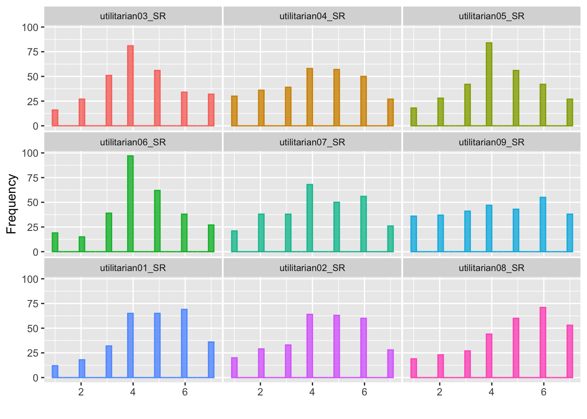
descriptive statistics:
Mean SD Median CoeffofVariation Minimum Maximun
utilitarian07_SR 4.21 1.72 4 0.41 1 7
utilitarian05_SR 4.23 1.61 4 0.38 1 7
utilitarian08_SR 4.78 1.77 5 0.37 1 7
utilitarian06_SR 4.31 1.54 4 0.36 1 7
utilitarian09_SR 4.15 1.94 4 0.47 1 7
utilitarian01_SR 4.70 1.57 5 0.33 1 7
utilitarian02_SR 4.39 1.68 5 0.38 1 7
utilitarian04_SR 4.12 1.79 4 0.43 1 7
utilitarian03_SR 4.23 1.61 4 0.38 1 7
Lower Quantile Upper Quantile Skewness Kurtosis(-3)
utilitarian07_SR 1 7 -0.18 -0.90
utilitarian05_SR 1 7 -0.14 -0.59
utilitarian08_SR 1 7 -0.59 -0.61
utilitarian06_SR 1 7 -0.23 -0.22
utilitarian09_SR 1 7 -0.14 -1.18
utilitarian01_SR 1 7 -0.47 -0.41
utilitarian02_SR 1 7 -0.36 -0.71
utilitarian04_SR 1 7 -0.18 -0.97
utilitarian03_SR 1 7 -0.02 -0.60
Shaprio-Test KS-Test
utilitarian07_SR 0 0
utilitarian05_SR 0 0
utilitarian08_SR 0 0
utilitarian06_SR 0 0
utilitarian09_SR 0 0
utilitarian01_SR 0 0
utilitarian02_SR 0 0
utilitarian04_SR 0 0
utilitarian03_SR 0 0
variables under investigation: utilitarian07_SR utilitarian05_SR utilitarian08_SR utilitarian06_SR utilitarian09_SR utilitarian01_SR utilitarian02_SR utilitarian04_SR utilitarian03_SR
Cronbachs Alpha: 0.97 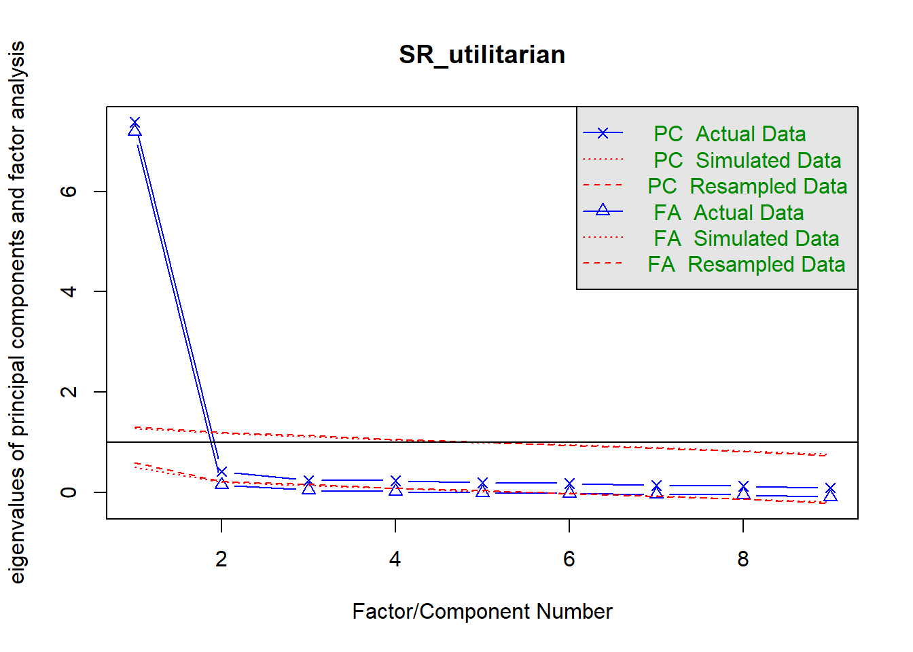
Parallel analysis suggests that the number of factors = 1 and the number of components = 1
SR_utilitarian
Number of components: 1 Warning in fa.stats(r = r, f = f, phi = phi, n.obs = n.obs, np.obs = np.obs, :
The estimated weights for the factor scores are probably incorrect. Try a
different factor score estimation method.
EFA factor loadings (1 factor solution):
Loadings:
MR1
utilitarian07_SR 0.902
utilitarian05_SR 0.885
utilitarian08_SR 0.847
utilitarian06_SR 0.879
utilitarian09_SR 0.947
utilitarian01_SR 0.817
utilitarian02_SR 0.926
utilitarian04_SR 0.927
utilitarian03_SR 0.906
MR1
SS loadings 7.191
Proportion Var 0.799
CFA summary and fit statistics:
lavaan 0.6-19 ended normally after 29 iterations
Estimator ML
Optimization method NLMINB
Number of model parameters 18
Number of observations 297
Model Test User Model:
Standard Scaled
Test Statistic 89.207 54.043
Degrees of freedom 27 27
P-value (Chi-square) 0.000 0.002
Scaling correction factor 1.651
Yuan-Bentler correction (Mplus variant)
Model Test Baseline Model:
Test statistic 3001.960 1680.488
Degrees of freedom 36 36
P-value 0.000 0.000
Scaling correction factor 1.786
User Model versus Baseline Model:
Comparative Fit Index (CFI) 0.979 0.984
Tucker-Lewis Index (TLI) 0.972 0.978
Robust Comparative Fit Index (CFI) 0.985
Robust Tucker-Lewis Index (TLI) 0.980
Loglikelihood and Information Criteria:
Loglikelihood user model (H0) -3731.850 -3731.850
Scaling correction factor 1.425
for the MLR correction
Loglikelihood unrestricted model (H1) -3687.247 -3687.247
Scaling correction factor 1.560
for the MLR correction
Akaike (AIC) 7499.700 7499.700
Bayesian (BIC) 7566.187 7566.187
Sample-size adjusted Bayesian (SABIC) 7509.103 7509.103
Root Mean Square Error of Approximation:
RMSEA 0.088 0.058
90 Percent confidence interval - lower 0.068 0.040
90 Percent confidence interval - upper 0.109 0.076
P-value H_0: RMSEA <= 0.050 0.001 0.212
P-value H_0: RMSEA >= 0.080 0.760 0.018
Robust RMSEA 0.075
90 Percent confidence interval - lower 0.045
90 Percent confidence interval - upper 0.103
P-value H_0: Robust RMSEA <= 0.050 0.080
P-value H_0: Robust RMSEA >= 0.080 0.405
Standardized Root Mean Square Residual:
SRMR 0.023 0.023
Parameter Estimates:
Standard errors Sandwich
Information bread Observed
Observed information based on Hessian
Latent Variables:
Estimate Std.Err z-value P(>|z|) Std.lv Std.all
SR_utilitarian =~
utilitarn07_SR 1.000 1.512 0.881
utilitarn05_SR 0.920 0.038 24.093 0.000 1.390 0.865
utilitarn08_SR 0.954 0.051 18.670 0.000 1.442 0.814
utilitarn06_SR 0.858 0.039 21.759 0.000 1.298 0.847
utilitarn09_SR 1.195 0.042 28.668 0.000 1.806 0.934
utilitarn01_SR 0.811 0.048 17.011 0.000 1.227 0.781
utilitarn02_SR 1.003 0.037 27.234 0.000 1.516 0.902
utilitarn04_SR 1.084 0.039 27.636 0.000 1.639 0.917
utilitarn03_SR 0.947 0.039 24.344 0.000 1.432 0.891
Variances:
Estimate Std.Err z-value P(>|z|) Std.lv Std.all
.utilitarn07_SR 0.656 0.072 9.150 0.000 0.656 0.223
.utilitarn05_SR 0.649 0.090 7.226 0.000 0.649 0.251
.utilitarn08_SR 1.057 0.134 7.866 0.000 1.057 0.337
.utilitarn06_SR 0.666 0.107 6.216 0.000 0.666 0.283
.utilitarn09_SR 0.479 0.058 8.200 0.000 0.479 0.128
.utilitarn01_SR 0.962 0.124 7.773 0.000 0.962 0.390
.utilitarn02_SR 0.524 0.073 7.183 0.000 0.524 0.186
.utilitarn04_SR 0.506 0.059 8.519 0.000 0.506 0.159
.utilitarn03_SR 0.534 0.066 8.076 0.000 0.534 0.207
SR_utilitarian 2.285 0.193 11.823 0.000 1.000 1.000
CFA first 6 Modification Indices:
lhs op rhs mi epc sepc.lv sepc.all sepc.nox
37 utilitarian08_SR ~~ utilitarian01_SR 26.167 0.318 0.318 0.315 0.315
48 utilitarian09_SR ~~ utilitarian04_SR 14.341 0.145 0.145 0.293 0.293
38 utilitarian08_SR ~~ utilitarian02_SR 13.860 0.181 0.181 0.243 0.243
29 utilitarian05_SR ~~ utilitarian06_SR 10.724 0.138 0.138 0.210 0.210
50 utilitarian01_SR ~~ utilitarian02_SR 6.822 0.120 0.120 0.169 0.169
27 utilitarian07_SR ~~ utilitarian03_SR 6.394 -0.100 -0.100 -0.170 -0.170
>>> virtue of SR ( 9 items )<<<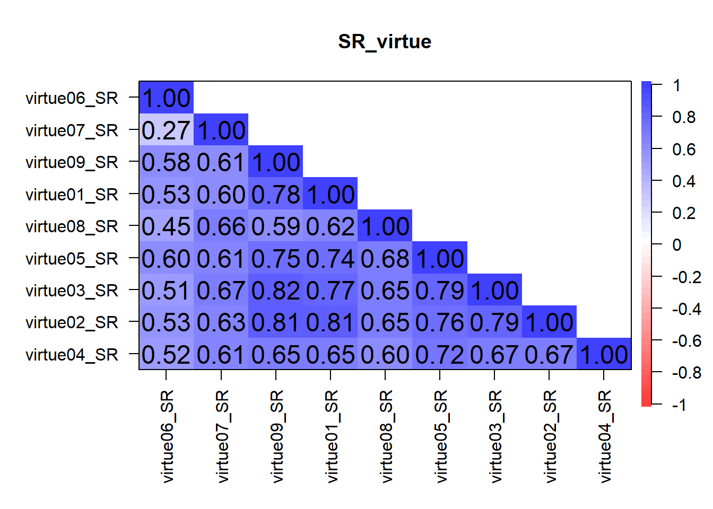
Warning in ks.test.default(x = x, y = "pnorm", mean(x), sd(x)): ties should not
be present for the one-sample Kolmogorov-Smirnov test
Warning in ks.test.default(x = x, y = "pnorm", mean(x), sd(x)): ties should not
be present for the one-sample Kolmogorov-Smirnov test
Warning in ks.test.default(x = x, y = "pnorm", mean(x), sd(x)): ties should not
be present for the one-sample Kolmogorov-Smirnov test
Warning in ks.test.default(x = x, y = "pnorm", mean(x), sd(x)): ties should not
be present for the one-sample Kolmogorov-Smirnov test
Warning in ks.test.default(x = x, y = "pnorm", mean(x), sd(x)): ties should not
be present for the one-sample Kolmogorov-Smirnov test
Warning in ks.test.default(x = x, y = "pnorm", mean(x), sd(x)): ties should not
be present for the one-sample Kolmogorov-Smirnov test
Warning in ks.test.default(x = x, y = "pnorm", mean(x), sd(x)): ties should not
be present for the one-sample Kolmogorov-Smirnov test
Warning in ks.test.default(x = x, y = "pnorm", mean(x), sd(x)): ties should not
be present for the one-sample Kolmogorov-Smirnov test
Warning in ks.test.default(x = x, y = "pnorm", mean(x), sd(x)): ties should not
be present for the one-sample Kolmogorov-Smirnov test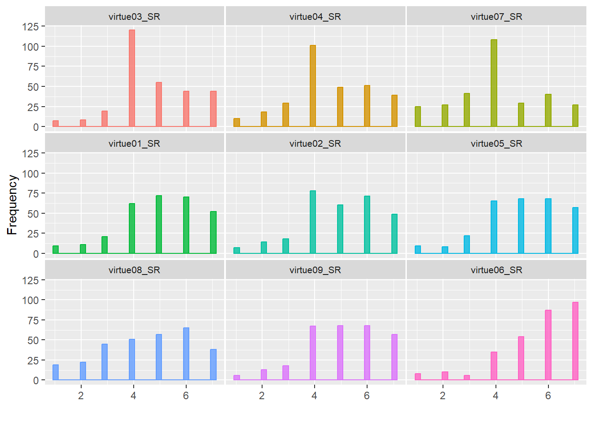
descriptive statistics:
Mean SD Median CoeffofVariation Minimum Maximun Lower Quantile
virtue06_SR 5.58 1.48 6 0.27 1 7 1
virtue07_SR 4.07 1.65 4 0.41 1 7 1
virtue09_SR 5.05 1.48 5 0.29 1 7 1
virtue01_SR 5.00 1.50 5 0.30 1 7 1
virtue08_SR 4.52 1.73 5 0.38 1 7 1
virtue05_SR 5.04 1.50 5 0.30 1 7 1
virtue03_SR 4.74 1.40 4 0.30 1 7 1
virtue02_SR 4.95 1.49 5 0.30 1 7 1
virtue04_SR 4.58 1.53 4 0.33 1 7 1
Upper Quantile Skewness Kurtosis(-3) Shaprio-Test KS-Test
virtue06_SR 7 -1.23 1.22 0 0
virtue07_SR 7 -0.01 -0.55 0 0
virtue09_SR 7 -0.55 -0.14 0 0
virtue01_SR 7 -0.62 0.01 0 0
virtue08_SR 7 -0.36 -0.78 0 0
virtue05_SR 7 -0.60 -0.01 0 0
virtue03_SR 7 -0.10 -0.09 0 0
virtue02_SR 7 -0.50 -0.20 0 0
virtue04_SR 7 -0.19 -0.42 0 0
variables under investigation: virtue06_SR virtue07_SR virtue09_SR virtue01_SR virtue08_SR virtue05_SR virtue03_SR virtue02_SR virtue04_SR
Cronbachs Alpha: 0.94 Warning in fa.stats(r = r, f = f, phi = phi, n.obs = n.obs, np.obs = np.obs, :
The estimated weights for the factor scores are probably incorrect. Try a
different factor score estimation method.Warning in fac(r = r, nfactors = nfactors, n.obs = n.obs, rotate = rotate, : An
ultra-Heywood case was detected. Examine the results carefully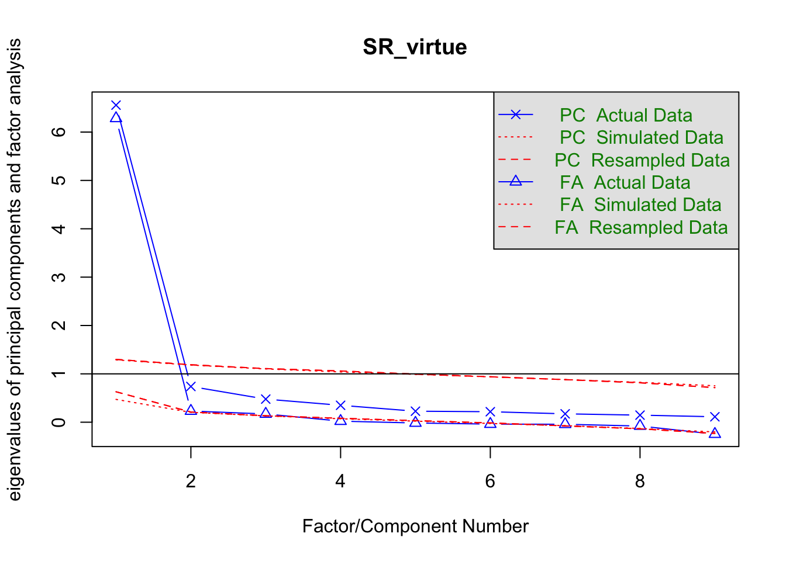
Parallel analysis suggests that the number of factors = 1 and the number of components = 1
SR_virtue
Number of components: 1 Warning in fa.stats(r = r, f = f, phi = phi, n.obs = n.obs, np.obs = np.obs, :
The estimated weights for the factor scores are probably incorrect. Try a
different factor score estimation method.
EFA factor loadings (1 factor solution):
Loadings:
MR1
virtue06_SR 0.628
virtue07_SR 0.743
virtue09_SR 0.894
virtue01_SR 0.883
virtue08_SR 0.782
virtue05_SR 0.906
virtue03_SR 0.920
virtue02_SR 0.913
virtue04_SR 0.804
MR1
SS loadings 6.284
Proportion Var 0.698
CFA summary and fit statistics:
lavaan 0.6-19 ended normally after 26 iterations
Estimator ML
Optimization method NLMINB
Number of model parameters 18
Number of observations 297
Model Test User Model:
Standard Scaled
Test Statistic 138.059 81.822
Degrees of freedom 27 27
P-value (Chi-square) 0.000 0.000
Scaling correction factor 1.687
Yuan-Bentler correction (Mplus variant)
Model Test Baseline Model:
Test statistic 2309.601 1332.548
Degrees of freedom 36 36
P-value 0.000 0.000
Scaling correction factor 1.733
User Model versus Baseline Model:
Comparative Fit Index (CFI) 0.951 0.958
Tucker-Lewis Index (TLI) 0.935 0.944
Robust Comparative Fit Index (CFI) 0.959
Robust Tucker-Lewis Index (TLI) 0.945
Loglikelihood and Information Criteria:
Loglikelihood user model (H0) -3831.572 -3831.572
Scaling correction factor 1.408
for the MLR correction
Loglikelihood unrestricted model (H1) -3762.543 -3762.543
Scaling correction factor 1.576
for the MLR correction
Akaike (AIC) 7699.145 7699.145
Bayesian (BIC) 7765.632 7765.632
Sample-size adjusted Bayesian (SABIC) 7708.548 7708.548
Root Mean Square Error of Approximation:
RMSEA 0.118 0.083
90 Percent confidence interval - lower 0.099 0.067
90 Percent confidence interval - upper 0.137 0.099
P-value H_0: RMSEA <= 0.050 0.000 0.000
P-value H_0: RMSEA >= 0.080 0.999 0.627
Robust RMSEA 0.107
90 Percent confidence interval - lower 0.081
90 Percent confidence interval - upper 0.134
P-value H_0: Robust RMSEA <= 0.050 0.000
P-value H_0: Robust RMSEA >= 0.080 0.957
Standardized Root Mean Square Residual:
SRMR 0.042 0.042
Parameter Estimates:
Standard errors Sandwich
Information bread Observed
Observed information based on Hessian
Latent Variables:
Estimate Std.Err z-value P(>|z|) Std.lv Std.all
SR_virtue =~
virtue06_SR 1.000 0.908 0.612
virtue07_SR 1.301 0.162 8.017 0.000 1.181 0.718
virtue09_SR 1.438 0.135 10.654 0.000 1.306 0.884
virtue01_SR 1.432 0.141 10.169 0.000 1.300 0.867
virtue08_SR 1.401 0.154 9.105 0.000 1.271 0.738
virtue05_SR 1.434 0.130 11.007 0.000 1.301 0.870
virtue03_SR 1.379 0.140 9.827 0.000 1.251 0.896
virtue02_SR 1.464 0.145 10.059 0.000 1.328 0.895
virtue04_SR 1.299 0.129 10.107 0.000 1.179 0.771
Variances:
Estimate Std.Err z-value P(>|z|) Std.lv Std.all
.virtue06_SR 1.373 0.169 8.107 0.000 1.373 0.625
.virtue07_SR 1.314 0.118 11.145 0.000 1.314 0.485
.virtue09_SR 0.474 0.069 6.903 0.000 0.474 0.218
.virtue01_SR 0.557 0.089 6.253 0.000 0.557 0.248
.virtue08_SR 1.354 0.143 9.441 0.000 1.354 0.456
.virtue05_SR 0.544 0.067 8.055 0.000 0.544 0.243
.virtue03_SR 0.385 0.046 8.419 0.000 0.385 0.197
.virtue02_SR 0.438 0.065 6.778 0.000 0.438 0.199
.virtue04_SR 0.947 0.137 6.914 0.000 0.947 0.405
SR_virtue 0.824 0.195 4.231 0.000 1.000 1.000
CFA first 6 Modification Indices:
lhs op rhs mi epc sepc.lv sepc.all sepc.nox
20 virtue06_SR ~~ virtue07_SR 32.154 -0.460 -0.460 -0.343 -0.343
30 virtue07_SR ~~ virtue08_SR 25.476 0.414 0.414 0.310 0.310
36 virtue09_SR ~~ virtue08_SR 13.487 -0.196 -0.196 -0.244 -0.244
24 virtue06_SR ~~ virtue05_SR 11.413 0.187 0.187 0.216 0.216
44 virtue01_SR ~~ virtue02_SR 10.041 0.115 0.115 0.233 0.233
52 virtue05_SR ~~ virtue04_SR 9.043 0.143 0.143 0.199 0.199for SAI
tech <- "SAI"
for(e in ethicTheories){
regEx <- paste0(e, ".*_", tech, "$")
nameVariable <- paste0(tech, "_", e)
tmp_numVars <- sum(str_detect(string = colnames(dat), pattern = regEx))
cat("\n>>>", e, "of", tech, "(", tmp_numVars, "items )<<<\n\n")
tmp_dat <- na.omit(dat[,str_detect(string = colnames(dat), pattern = regEx)])
tmp <- CFAstats(dataset = tmp_dat, regularExp = regEx, labelLatent = str_remove(string = nameVariable, pattern = "mean_"),
showPlots = TRUE,
computeEFA = TRUE,
computeCFA = TRUE,
computeCFAMplus = FALSE)
}
>>> contractualist of SAI ( 6 items )<<<Warning in ks.test.default(x = x, y = "pnorm", mean(x), sd(x)): ties should not
be present for the one-sample Kolmogorov-Smirnov test
Warning in ks.test.default(x = x, y = "pnorm", mean(x), sd(x)): ties should not
be present for the one-sample Kolmogorov-Smirnov test
Warning in ks.test.default(x = x, y = "pnorm", mean(x), sd(x)): ties should not
be present for the one-sample Kolmogorov-Smirnov test
Warning in ks.test.default(x = x, y = "pnorm", mean(x), sd(x)): ties should not
be present for the one-sample Kolmogorov-Smirnov test
Warning in ks.test.default(x = x, y = "pnorm", mean(x), sd(x)): ties should not
be present for the one-sample Kolmogorov-Smirnov test
Warning in ks.test.default(x = x, y = "pnorm", mean(x), sd(x)): ties should not
be present for the one-sample Kolmogorov-Smirnov test
descriptive statistics:
Mean SD Median CoeffofVariation Minimum Maximun
contractualist01_SAI 4.43 1.61 4 0.36 1 7
contractualist04_SAI 4.36 1.70 4 0.39 1 7
contractualist03_SAI 4.45 1.52 4 0.34 1 7
contractualist05_SAI 4.28 1.74 4 0.41 1 7
contractualist06_SAI 4.42 1.74 4 0.39 1 7
contractualist02_SAI 4.41 1.69 5 0.38 1 7
Lower Quantile Upper Quantile Skewness Kurtosis(-3)
contractualist01_SAI 1 7 -0.27 -0.64
contractualist04_SAI 1 7 -0.19 -0.83
contractualist03_SAI 1 7 -0.27 -0.42
contractualist05_SAI 1 7 -0.28 -0.74
contractualist06_SAI 1 7 -0.27 -0.84
contractualist02_SAI 1 7 -0.31 -0.72
Shaprio-Test KS-Test
contractualist01_SAI 0 0
contractualist04_SAI 0 0
contractualist03_SAI 0 0
contractualist05_SAI 0 0
contractualist06_SAI 0 0
contractualist02_SAI 0 0
variables under investigation: contractualist01_SAI contractualist04_SAI contractualist03_SAI contractualist05_SAI contractualist06_SAI contractualist02_SAI
Cronbachs Alpha: 0.94 Warning in fa.stats(r = r, f = f, phi = phi, n.obs = n.obs, np.obs = np.obs, :
The estimated weights for the factor scores are probably incorrect. Try a
different factor score estimation method.Warning in fac(r = r, nfactors = nfactors, n.obs = n.obs, rotate = rotate, : An
ultra-Heywood case was detected. Examine the results carefullyParallel analysis suggests that the number of factors = 1 and the number of components = 1
SAI_contractualist
Number of components: 1
EFA factor loadings (1 factor solution):
Loadings:
MR1
contractualist01_SAI 0.930
contractualist04_SAI 0.859
contractualist03_SAI 0.895
contractualist05_SAI 0.731
contractualist06_SAI 0.922
contractualist02_SAI 0.943
MR1
SS loadings 4.675
Proportion Var 0.779
CFA summary and fit statistics:
lavaan 0.6-19 ended normally after 24 iterations
Estimator ML
Optimization method NLMINB
Number of model parameters 12
Number of observations 297
Model Test User Model:
Standard Scaled
Test Statistic 19.198 10.447
Degrees of freedom 9 9
P-value (Chi-square) 0.024 0.316
Scaling correction factor 1.838
Yuan-Bentler correction (Mplus variant)
Model Test Baseline Model:
Test statistic 1696.948 805.977
Degrees of freedom 15 15
P-value 0.000 0.000
Scaling correction factor 2.105
User Model versus Baseline Model:
Comparative Fit Index (CFI) 0.994 0.998
Tucker-Lewis Index (TLI) 0.990 0.997
Robust Comparative Fit Index (CFI) 0.998
Robust Tucker-Lewis Index (TLI) 0.997
Loglikelihood and Information Criteria:
Loglikelihood user model (H0) -2595.619 -2595.619
Scaling correction factor 1.579
for the MLR correction
Loglikelihood unrestricted model (H1) -2586.020 -2586.020
Scaling correction factor 1.690
for the MLR correction
Akaike (AIC) 5215.238 5215.238
Bayesian (BIC) 5259.562 5259.562
Sample-size adjusted Bayesian (SABIC) 5221.506 5221.506
Root Mean Square Error of Approximation:
RMSEA 0.062 0.023
90 Percent confidence interval - lower 0.022 0.000
90 Percent confidence interval - upper 0.100 0.060
P-value H_0: RMSEA <= 0.050 0.268 0.863
P-value H_0: RMSEA >= 0.080 0.242 0.003
Robust RMSEA 0.032
90 Percent confidence interval - lower 0.000
90 Percent confidence interval - upper 0.097
P-value H_0: Robust RMSEA <= 0.050 0.602
P-value H_0: Robust RMSEA >= 0.080 0.135
Standardized Root Mean Square Residual:
SRMR 0.012 0.012
Parameter Estimates:
Standard errors Sandwich
Information bread Observed
Observed information based on Hessian
Latent Variables:
Estimate Std.Err z-value P(>|z|) Std.lv Std.all
SAI_contractualist =~
cntrctls01_SAI 1.000 1.471 0.913
cntrctls04_SAI 0.960 0.040 24.130 0.000 1.412 0.834
cntrctls03_SAI 0.893 0.037 24.271 0.000 1.314 0.865
cntrctls05_SAI 0.840 0.052 16.190 0.000 1.236 0.711
cntrctls06_SAI 1.070 0.041 26.307 0.000 1.574 0.904
cntrctls02_SAI 1.068 0.036 29.560 0.000 1.572 0.932
Variances:
Estimate Std.Err z-value P(>|z|) Std.lv Std.all
.cntrctls01_SAI 0.431 0.061 7.104 0.000 0.431 0.166
.cntrctls04_SAI 0.870 0.124 7.035 0.000 0.870 0.304
.cntrctls03_SAI 0.582 0.083 7.013 0.000 0.582 0.252
.cntrctls05_SAI 1.490 0.156 9.547 0.000 1.490 0.494
.cntrctls06_SAI 0.554 0.116 4.789 0.000 0.554 0.183
.cntrctls02_SAI 0.372 0.065 5.759 0.000 0.372 0.131
SAI_contrctlst 2.165 0.187 11.607 0.000 1.000 1.000
CFA first 6 Modification Indices:
lhs op rhs mi epc sepc.lv sepc.all
21 contractualist04_SAI ~~ contractualist06_SAI 5.662 0.120 0.120 0.173
17 contractualist01_SAI ~~ contractualist06_SAI 4.963 -0.093 -0.093 -0.191
14 contractualist01_SAI ~~ contractualist04_SAI 4.749 -0.099 -0.099 -0.162
25 contractualist03_SAI ~~ contractualist02_SAI 4.451 -0.083 -0.083 -0.178
18 contractualist01_SAI ~~ contractualist02_SAI 3.774 0.077 0.077 0.193
15 contractualist01_SAI ~~ contractualist03_SAI 2.758 0.064 0.064 0.129
sepc.nox
21 0.173
17 -0.191
14 -0.162
25 -0.178
18 0.193
15 0.129
>>> deontology of SAI ( 8 items )<<<Warning in ks.test.default(x = x, y = "pnorm", mean(x), sd(x)): ties should not
be present for the one-sample Kolmogorov-Smirnov testWarning in ks.test.default(x = x, y = "pnorm", mean(x), sd(x)): ties should not
be present for the one-sample Kolmogorov-Smirnov test
Warning in ks.test.default(x = x, y = "pnorm", mean(x), sd(x)): ties should not
be present for the one-sample Kolmogorov-Smirnov test
Warning in ks.test.default(x = x, y = "pnorm", mean(x), sd(x)): ties should not
be present for the one-sample Kolmogorov-Smirnov test
Warning in ks.test.default(x = x, y = "pnorm", mean(x), sd(x)): ties should not
be present for the one-sample Kolmogorov-Smirnov test
Warning in ks.test.default(x = x, y = "pnorm", mean(x), sd(x)): ties should not
be present for the one-sample Kolmogorov-Smirnov test
Warning in ks.test.default(x = x, y = "pnorm", mean(x), sd(x)): ties should not
be present for the one-sample Kolmogorov-Smirnov test
Warning in ks.test.default(x = x, y = "pnorm", mean(x), sd(x)): ties should not
be present for the one-sample Kolmogorov-Smirnov test
descriptive statistics:
Mean SD Median CoeffofVariation Minimum Maximun
deontology03_SAI 4.46 1.55 4 0.35 1 7
deontology08_SAI 4.44 1.51 4 0.34 1 7
deontology06_SAI 4.30 1.70 4 0.40 1 7
deontology04_SAI 4.41 1.51 4 0.34 1 7
deontology05_SAI 4.54 1.72 5 0.38 1 7
deontology01_SAI 4.51 1.66 5 0.37 1 7
deontology07_SAI 4.45 1.85 5 0.41 1 7
deontology02_SAI 4.03 1.62 4 0.40 1 7
Lower Quantile Upper Quantile Skewness Kurtosis(-3)
deontology03_SAI 1 7 -0.28 -0.33
deontology08_SAI 1 7 -0.31 -0.33
deontology06_SAI 1 7 -0.23 -0.87
deontology04_SAI 1 7 -0.23 -0.46
deontology05_SAI 1 7 -0.24 -0.79
deontology01_SAI 1 7 -0.38 -0.55
deontology07_SAI 1 7 -0.38 -0.95
deontology02_SAI 1 7 -0.07 -0.49
Shaprio-Test KS-Test
deontology03_SAI 0 0
deontology08_SAI 0 0
deontology06_SAI 0 0
deontology04_SAI 0 0
deontology05_SAI 0 0
deontology01_SAI 0 0
deontology07_SAI 0 0
deontology02_SAI 0 0
variables under investigation: deontology03_SAI deontology08_SAI deontology06_SAI deontology04_SAI deontology05_SAI deontology01_SAI deontology07_SAI deontology02_SAI
Cronbachs Alpha: 0.93 Parallel analysis suggests that the number of factors = 1 and the number of components = 1
SAI_deontology
Number of components: 1
EFA factor loadings (1 factor solution):
Loadings:
MR1
deontology03_SAI 0.813
deontology08_SAI 0.813
deontology06_SAI 0.882
deontology04_SAI 0.892
deontology05_SAI 0.793
deontology01_SAI 0.694
deontology07_SAI 0.883
deontology02_SAI 0.712
MR1
SS loadings 5.293
Proportion Var 0.662
CFA summary and fit statistics:
lavaan 0.6-19 ended normally after 22 iterations
Estimator ML
Optimization method NLMINB
Number of model parameters 16
Number of observations 297
Model Test User Model:
Standard Scaled
Test Statistic 95.061 64.704
Degrees of freedom 20 20
P-value (Chi-square) 0.000 0.000
Scaling correction factor 1.469
Yuan-Bentler correction (Mplus variant)
Model Test Baseline Model:
Test statistic 1702.301 1101.920
Degrees of freedom 28 28
P-value 0.000 0.000
Scaling correction factor 1.545
User Model versus Baseline Model:
Comparative Fit Index (CFI) 0.955 0.958
Tucker-Lewis Index (TLI) 0.937 0.942
Robust Comparative Fit Index (CFI) 0.960
Robust Tucker-Lewis Index (TLI) 0.945
Loglikelihood and Information Criteria:
Loglikelihood user model (H0) -3732.074 -3732.074
Scaling correction factor 1.218
for the MLR correction
Loglikelihood unrestricted model (H1) -3684.544 -3684.544
Scaling correction factor 1.357
for the MLR correction
Akaike (AIC) 7496.148 7496.148
Bayesian (BIC) 7555.248 7555.248
Sample-size adjusted Bayesian (SABIC) 7504.506 7504.506
Root Mean Square Error of Approximation:
RMSEA 0.112 0.087
90 Percent confidence interval - lower 0.090 0.068
90 Percent confidence interval - upper 0.136 0.107
P-value H_0: RMSEA <= 0.050 0.000 0.001
P-value H_0: RMSEA >= 0.080 0.991 0.733
Robust RMSEA 0.105
90 Percent confidence interval - lower 0.077
90 Percent confidence interval - upper 0.134
P-value H_0: Robust RMSEA <= 0.050 0.001
P-value H_0: Robust RMSEA >= 0.080 0.932
Standardized Root Mean Square Residual:
SRMR 0.035 0.035
Parameter Estimates:
Standard errors Sandwich
Information bread Observed
Observed information based on Hessian
Latent Variables:
Estimate Std.Err z-value P(>|z|) Std.lv Std.all
SAI_deontology =~
deontlgy03_SAI 1.000 1.198 0.776
deontlgy08_SAI 0.987 0.067 14.619 0.000 1.182 0.786
deontlgy06_SAI 1.244 0.070 17.704 0.000 1.491 0.878
deontlgy04_SAI 1.083 0.063 17.123 0.000 1.297 0.859
deontlgy05_SAI 1.101 0.071 15.519 0.000 1.320 0.768
deontlgy01_SAI 0.909 0.065 13.978 0.000 1.089 0.659
deontlgy07_SAI 1.352 0.081 16.656 0.000 1.620 0.878
deontlgy02_SAI 0.904 0.074 12.230 0.000 1.084 0.671
Variances:
Estimate Std.Err z-value P(>|z|) Std.lv Std.all
.deontlgy03_SAI 0.948 0.127 7.477 0.000 0.948 0.398
.deontlgy08_SAI 0.863 0.095 9.121 0.000 0.863 0.382
.deontlgy06_SAI 0.662 0.083 7.931 0.000 0.662 0.230
.deontlgy04_SAI 0.600 0.075 7.945 0.000 0.600 0.263
.deontlgy05_SAI 1.214 0.169 7.180 0.000 1.214 0.411
.deontlgy01_SAI 1.548 0.159 9.735 0.000 1.548 0.566
.deontlgy07_SAI 0.776 0.097 7.962 0.000 0.776 0.228
.deontlgy02_SAI 1.434 0.159 8.998 0.000 1.434 0.550
SAI_deontology 1.435 0.184 7.807 0.000 1.000 1.000
CFA first 6 Modification Indices:
lhs op rhs mi epc sepc.lv sepc.all sepc.nox
34 deontology06_SAI ~~ deontology07_SAI 56.565 0.454 0.454 0.634 0.634
22 deontology03_SAI ~~ deontology01_SAI 18.629 0.330 0.330 0.273 0.273
30 deontology08_SAI ~~ deontology02_SAI 12.417 0.250 0.250 0.224 0.224
31 deontology06_SAI ~~ deontology04_SAI 10.934 -0.167 -0.167 -0.266 -0.266
36 deontology04_SAI ~~ deontology05_SAI 9.718 0.186 0.186 0.218 0.218
35 deontology06_SAI ~~ deontology02_SAI 5.973 -0.164 -0.164 -0.169 -0.169
>>> hedonism of SAI ( 9 items )<<<Warning in ks.test.default(x = x, y = "pnorm", mean(x), sd(x)): ties should not
be present for the one-sample Kolmogorov-Smirnov test
Warning in ks.test.default(x = x, y = "pnorm", mean(x), sd(x)): ties should not
be present for the one-sample Kolmogorov-Smirnov test
Warning in ks.test.default(x = x, y = "pnorm", mean(x), sd(x)): ties should not
be present for the one-sample Kolmogorov-Smirnov test
Warning in ks.test.default(x = x, y = "pnorm", mean(x), sd(x)): ties should not
be present for the one-sample Kolmogorov-Smirnov test
Warning in ks.test.default(x = x, y = "pnorm", mean(x), sd(x)): ties should not
be present for the one-sample Kolmogorov-Smirnov test
Warning in ks.test.default(x = x, y = "pnorm", mean(x), sd(x)): ties should not
be present for the one-sample Kolmogorov-Smirnov test
Warning in ks.test.default(x = x, y = "pnorm", mean(x), sd(x)): ties should not
be present for the one-sample Kolmogorov-Smirnov test
Warning in ks.test.default(x = x, y = "pnorm", mean(x), sd(x)): ties should not
be present for the one-sample Kolmogorov-Smirnov test
Warning in ks.test.default(x = x, y = "pnorm", mean(x), sd(x)): ties should not
be present for the one-sample Kolmogorov-Smirnov test
descriptive statistics:
Mean SD Median CoeffofVariation Minimum Maximun Lower Quantile
hedonism03_SAI 4.36 1.81 4 0.42 1 7 1
hedonism01_SAI 4.25 1.80 4 0.42 1 7 1
hedonism07_SAI 4.42 1.63 4 0.37 1 7 1
hedonism09_SAI 4.45 1.69 5 0.38 1 7 1
hedonism06_SAI 4.54 1.55 5 0.34 1 7 1
hedonism08_SAI 4.24 1.54 4 0.36 1 7 1
hedonism04_SAI 4.50 1.76 5 0.39 1 7 1
hedonism02_SAI 4.37 1.80 4 0.41 1 7 1
hedonism05_SAI 4.37 1.53 4 0.35 1 7 1
Upper Quantile Skewness Kurtosis(-3) Shaprio-Test KS-Test
hedonism03_SAI 7 -0.17 -1.04 0 0
hedonism01_SAI 7 -0.23 -0.88 0 0
hedonism07_SAI 7 -0.28 -0.43 0 0
hedonism09_SAI 7 -0.28 -0.71 0 0
hedonism06_SAI 7 -0.35 -0.38 0 0
hedonism08_SAI 7 -0.03 -0.28 0 0
hedonism04_SAI 7 -0.44 -0.70 0 0
hedonism02_SAI 7 -0.29 -0.81 0 0
hedonism05_SAI 7 -0.06 -0.16 0 0
variables under investigation: hedonism03_SAI hedonism01_SAI hedonism07_SAI hedonism09_SAI hedonism06_SAI hedonism08_SAI hedonism04_SAI hedonism02_SAI hedonism05_SAI
Cronbachs Alpha: 0.93 Parallel analysis suggests that the number of factors = 2 and the number of components = 1
SAI_hedonism
Number of components: 1 Warning in fa.stats(r = r, f = f, phi = phi, n.obs = n.obs, np.obs = np.obs, :
The estimated weights for the factor scores are probably incorrect. Try a
different factor score estimation method.
EFA factor loadings (1 factor solution):
Loadings:
MR1
hedonism03_SAI 0.579
hedonism01_SAI 0.885
hedonism07_SAI 0.895
hedonism09_SAI 0.898
hedonism06_SAI 0.876
hedonism08_SAI 0.791
hedonism04_SAI 0.927
hedonism02_SAI 0.644
hedonism05_SAI 0.754
MR1
SS loadings 5.961
Proportion Var 0.662
CFA summary and fit statistics:
lavaan 0.6-19 ended normally after 30 iterations
Estimator ML
Optimization method NLMINB
Number of model parameters 18
Number of observations 297
Model Test User Model:
Standard Scaled
Test Statistic 137.174 85.029
Degrees of freedom 27 27
P-value (Chi-square) 0.000 0.000
Scaling correction factor 1.613
Yuan-Bentler correction (Mplus variant)
Model Test Baseline Model:
Test statistic 2137.335 1263.600
Degrees of freedom 36 36
P-value 0.000 0.000
Scaling correction factor 1.691
User Model versus Baseline Model:
Comparative Fit Index (CFI) 0.948 0.953
Tucker-Lewis Index (TLI) 0.930 0.937
Robust Comparative Fit Index (CFI) 0.955
Robust Tucker-Lewis Index (TLI) 0.940
Loglikelihood and Information Criteria:
Loglikelihood user model (H0) -4169.311 -4169.311
Scaling correction factor 1.313
for the MLR correction
Loglikelihood unrestricted model (H1) -4100.724 -4100.724
Scaling correction factor 1.493
for the MLR correction
Akaike (AIC) 8374.622 8374.622
Bayesian (BIC) 8441.109 8441.109
Sample-size adjusted Bayesian (SABIC) 8384.025 8384.025
Root Mean Square Error of Approximation:
RMSEA 0.117 0.085
90 Percent confidence interval - lower 0.098 0.069
90 Percent confidence interval - upper 0.137 0.101
P-value H_0: RMSEA <= 0.050 0.000 0.000
P-value H_0: RMSEA >= 0.080 0.999 0.713
Robust RMSEA 0.108
90 Percent confidence interval - lower 0.083
90 Percent confidence interval - upper 0.134
P-value H_0: Robust RMSEA <= 0.050 0.000
P-value H_0: Robust RMSEA >= 0.080 0.964
Standardized Root Mean Square Residual:
SRMR 0.040 0.040
Parameter Estimates:
Standard errors Sandwich
Information bread Observed
Observed information based on Hessian
Latent Variables:
Estimate Std.Err z-value P(>|z|) Std.lv Std.all
SAI_hedonism =~
hedonism03_SAI 1.000 0.976 0.539
hedonism01_SAI 1.579 0.160 9.877 0.000 1.541 0.858
hedonism07_SAI 1.485 0.148 10.024 0.000 1.449 0.888
hedonism09_SAI 1.543 0.153 10.073 0.000 1.506 0.893
hedonism06_SAI 1.343 0.134 10.053 0.000 1.311 0.849
hedonism08_SAI 1.183 0.121 9.795 0.000 1.155 0.749
hedonism04_SAI 1.638 0.164 9.995 0.000 1.599 0.909
hedonism02_SAI 1.137 0.155 7.356 0.000 1.110 0.619
hedonism05_SAI 1.096 0.109 10.045 0.000 1.070 0.700
Variances:
Estimate Std.Err z-value P(>|z|) Std.lv Std.all
.hedonism03_SAI 2.329 0.202 11.550 0.000 2.329 0.710
.hedonism01_SAI 0.854 0.117 7.322 0.000 0.854 0.265
.hedonism07_SAI 0.560 0.074 7.605 0.000 0.560 0.211
.hedonism09_SAI 0.578 0.079 7.356 0.000 0.578 0.203
.hedonism06_SAI 0.664 0.083 8.015 0.000 0.664 0.279
.hedonism08_SAI 1.045 0.111 9.424 0.000 1.045 0.439
.hedonism04_SAI 0.541 0.080 6.728 0.000 0.541 0.174
.hedonism02_SAI 1.983 0.215 9.220 0.000 1.983 0.617
.hedonism05_SAI 1.195 0.156 7.648 0.000 1.195 0.510
SAI_hedonism 0.953 0.200 4.757 0.000 1.000 1.000
CFA first 6 Modification Indices:
lhs op rhs mi epc sepc.lv sepc.all sepc.nox
35 hedonism07_SAI ~~ hedonism09_SAI 47.766 0.306 0.306 0.537 0.537
52 hedonism08_SAI ~~ hedonism05_SAI 28.290 0.366 0.366 0.328 0.328
53 hedonism04_SAI ~~ hedonism02_SAI 18.900 0.306 0.306 0.295 0.295
28 hedonism01_SAI ~~ hedonism07_SAI 16.152 -0.203 -0.203 -0.293 -0.293
45 hedonism09_SAI ~~ hedonism05_SAI 11.849 -0.192 -0.192 -0.231 -0.231
49 hedonism06_SAI ~~ hedonism05_SAI 10.444 0.185 0.185 0.207 0.207
>>> relativist of SAI ( 5 items )<<<Warning in ks.test.default(x = x, y = "pnorm", mean(x), sd(x)): ties should not
be present for the one-sample Kolmogorov-Smirnov test
Warning in ks.test.default(x = x, y = "pnorm", mean(x), sd(x)): ties should not
be present for the one-sample Kolmogorov-Smirnov test
Warning in ks.test.default(x = x, y = "pnorm", mean(x), sd(x)): ties should not
be present for the one-sample Kolmogorov-Smirnov test
Warning in ks.test.default(x = x, y = "pnorm", mean(x), sd(x)): ties should not
be present for the one-sample Kolmogorov-Smirnov test
Warning in ks.test.default(x = x, y = "pnorm", mean(x), sd(x)): ties should not
be present for the one-sample Kolmogorov-Smirnov test
descriptive statistics:
Mean SD Median CoeffofVariation Minimum Maximun
relativist04_SAI 4.58 1.88 5 0.41 1 7
relativist03_SAI 4.51 1.67 5 0.37 1 7
relativist01_SAI 4.71 1.65 5 0.35 1 7
relativist05_SAI 4.54 1.68 5 0.37 1 7
relativist02_SAI 4.57 1.69 5 0.37 1 7
Lower Quantile Upper Quantile Skewness Kurtosis(-3)
relativist04_SAI 1 7 -0.47 -0.86
relativist03_SAI 1 7 -0.33 -0.68
relativist01_SAI 1 7 -0.51 -0.46
relativist05_SAI 1 7 -0.41 -0.53
relativist02_SAI 1 7 -0.44 -0.54
Shaprio-Test KS-Test
relativist04_SAI 0 0
relativist03_SAI 0 0
relativist01_SAI 0 0
relativist05_SAI 0 0
relativist02_SAI 0 0
variables under investigation: relativist04_SAI relativist03_SAI relativist01_SAI relativist05_SAI relativist02_SAI
Cronbachs Alpha: 0.96 Parallel analysis suggests that the number of factors = 1 and the number of components = 1
SAI_relativist
Number of components: 1
EFA factor loadings (1 factor solution):
Loadings:
MR1
relativist04_SAI 0.935
relativist03_SAI 0.926
relativist01_SAI 0.893
relativist05_SAI 0.900
relativist02_SAI 0.950
MR1
SS loadings 4.239
Proportion Var 0.848
CFA summary and fit statistics:
lavaan 0.6-19 ended normally after 24 iterations
Estimator ML
Optimization method NLMINB
Number of model parameters 10
Number of observations 297
Model Test User Model:
Standard Scaled
Test Statistic 37.991 20.629
Degrees of freedom 5 5
P-value (Chi-square) 0.000 0.001
Scaling correction factor 1.842
Yuan-Bentler correction (Mplus variant)
Model Test Baseline Model:
Test statistic 1630.365 657.891
Degrees of freedom 10 10
P-value 0.000 0.000
Scaling correction factor 2.478
User Model versus Baseline Model:
Comparative Fit Index (CFI) 0.980 0.976
Tucker-Lewis Index (TLI) 0.959 0.952
Robust Comparative Fit Index (CFI) 0.982
Robust Tucker-Lewis Index (TLI) 0.964
Loglikelihood and Information Criteria:
Loglikelihood user model (H0) -2106.467 -2106.467
Scaling correction factor 1.904
for the MLR correction
Loglikelihood unrestricted model (H1) -2087.472 -2087.472
Scaling correction factor 1.883
for the MLR correction
Akaike (AIC) 4232.935 4232.935
Bayesian (BIC) 4269.872 4269.872
Sample-size adjusted Bayesian (SABIC) 4238.158 4238.158
Root Mean Square Error of Approximation:
RMSEA 0.149 0.103
90 Percent confidence interval - lower 0.107 0.070
90 Percent confidence interval - upper 0.195 0.137
P-value H_0: RMSEA <= 0.050 0.000 0.005
P-value H_0: RMSEA >= 0.080 0.996 0.880
Robust RMSEA 0.139
90 Percent confidence interval - lower 0.080
90 Percent confidence interval - upper 0.204
P-value H_0: Robust RMSEA <= 0.050 0.009
P-value H_0: Robust RMSEA >= 0.080 0.951
Standardized Root Mean Square Residual:
SRMR 0.017 0.017
Parameter Estimates:
Standard errors Sandwich
Information bread Observed
Observed information based on Hessian
Latent Variables:
Estimate Std.Err z-value P(>|z|) Std.lv Std.all
SAI_relativist =~
relatvst04_SAI 1.000 1.727 0.921
relatvst03_SAI 0.870 0.031 28.041 0.000 1.503 0.899
relatvst01_SAI 0.830 0.035 23.895 0.000 1.433 0.872
relatvst05_SAI 0.860 0.031 27.869 0.000 1.485 0.885
relatvst02_SAI 0.911 0.030 30.838 0.000 1.574 0.935
Variances:
Estimate Std.Err z-value P(>|z|) Std.lv Std.all
.relatvst04_SAI 0.533 0.076 7.018 0.000 0.533 0.152
.relatvst03_SAI 0.537 0.091 5.917 0.000 0.537 0.192
.relatvst01_SAI 0.648 0.078 8.288 0.000 0.648 0.240
.relatvst05_SAI 0.610 0.132 4.617 0.000 0.610 0.217
.relatvst02_SAI 0.359 0.087 4.152 0.000 0.359 0.127
SAI_relativist 2.982 0.217 13.740 0.000 1.000 1.000
CFA first 6 Modification Indices:
lhs op rhs mi epc sepc.lv sepc.all sepc.nox
16 relativist03_SAI ~~ relativist01_SAI 21.992 0.204 0.204 0.346 0.346
13 relativist04_SAI ~~ relativist01_SAI 21.902 -0.218 -0.218 -0.371 -0.371
18 relativist03_SAI ~~ relativist02_SAI 12.529 -0.143 -0.143 -0.324 -0.324
15 relativist04_SAI ~~ relativist02_SAI 8.626 0.131 0.131 0.300 0.300
14 relativist04_SAI ~~ relativist05_SAI 1.950 0.065 0.065 0.114 0.114
20 relativist01_SAI ~~ relativist02_SAI 0.923 0.039 0.039 0.081 0.081
>>> utilitarian of SAI ( 9 items )<<<Warning in ks.test.default(x = x, y = "pnorm", mean(x), sd(x)): ties should not
be present for the one-sample Kolmogorov-Smirnov test
Warning in ks.test.default(x = x, y = "pnorm", mean(x), sd(x)): ties should not
be present for the one-sample Kolmogorov-Smirnov test
Warning in ks.test.default(x = x, y = "pnorm", mean(x), sd(x)): ties should not
be present for the one-sample Kolmogorov-Smirnov test
Warning in ks.test.default(x = x, y = "pnorm", mean(x), sd(x)): ties should not
be present for the one-sample Kolmogorov-Smirnov test
Warning in ks.test.default(x = x, y = "pnorm", mean(x), sd(x)): ties should not
be present for the one-sample Kolmogorov-Smirnov test
Warning in ks.test.default(x = x, y = "pnorm", mean(x), sd(x)): ties should not
be present for the one-sample Kolmogorov-Smirnov test
Warning in ks.test.default(x = x, y = "pnorm", mean(x), sd(x)): ties should not
be present for the one-sample Kolmogorov-Smirnov test
Warning in ks.test.default(x = x, y = "pnorm", mean(x), sd(x)): ties should not
be present for the one-sample Kolmogorov-Smirnov test
Warning in ks.test.default(x = x, y = "pnorm", mean(x), sd(x)): ties should not
be present for the one-sample Kolmogorov-Smirnov test
descriptive statistics:
Mean SD Median CoeffofVariation Minimum Maximun
utilitarian04_SAI 4.82 1.70 5 0.35 1 7
utilitarian09_SAI 4.68 1.83 5 0.39 1 7
utilitarian07_SAI 4.69 1.72 5 0.37 1 7
utilitarian06_SAI 4.75 1.63 5 0.34 1 7
utilitarian05_SAI 4.88 1.59 5 0.33 1 7
utilitarian02_SAI 4.86 1.57 5 0.32 1 7
utilitarian01_SAI 4.87 1.56 5 0.32 1 7
utilitarian03_SAI 4.80 1.61 5 0.34 1 7
utilitarian08_SAI 4.52 1.83 5 0.40 1 7
Lower Quantile Upper Quantile Skewness Kurtosis(-3)
utilitarian04_SAI 1 7 -0.64 -0.39
utilitarian09_SAI 1 7 -0.52 -0.73
utilitarian07_SAI 1 7 -0.55 -0.57
utilitarian06_SAI 1 7 -0.63 -0.20
utilitarian05_SAI 1 7 -0.58 -0.32
utilitarian02_SAI 1 7 -0.65 -0.05
utilitarian01_SAI 1 7 -0.66 -0.04
utilitarian03_SAI 1 7 -0.54 -0.38
utilitarian08_SAI 1 7 -0.41 -0.89
Shaprio-Test KS-Test
utilitarian04_SAI 0 0
utilitarian09_SAI 0 0
utilitarian07_SAI 0 0
utilitarian06_SAI 0 0
utilitarian05_SAI 0 0
utilitarian02_SAI 0 0
utilitarian01_SAI 0 0
utilitarian03_SAI 0 0
utilitarian08_SAI 0 0
variables under investigation: utilitarian04_SAI utilitarian09_SAI utilitarian07_SAI utilitarian06_SAI utilitarian05_SAI utilitarian02_SAI utilitarian01_SAI utilitarian03_SAI utilitarian08_SAI
Cronbachs Alpha: 0.97 Parallel analysis suggests that the number of factors = 1 and the number of components = 1
SAI_utilitarian
Number of components: 1 Warning in fa.stats(r = r, f = f, phi = phi, n.obs = n.obs, np.obs = np.obs, :
The estimated weights for the factor scores are probably incorrect. Try a
different factor score estimation method.
EFA factor loadings (1 factor solution):
Loadings:
MR1
utilitarian04_SAI 0.939
utilitarian09_SAI 0.904
utilitarian07_SAI 0.896
utilitarian06_SAI 0.898
utilitarian05_SAI 0.931
utilitarian02_SAI 0.922
utilitarian01_SAI 0.910
utilitarian03_SAI 0.884
utilitarian08_SAI 0.891
MR1
SS loadings 7.428
Proportion Var 0.825
CFA summary and fit statistics:
lavaan 0.6-19 ended normally after 27 iterations
Estimator ML
Optimization method NLMINB
Number of model parameters 18
Number of observations 297
Model Test User Model:
Standard Scaled
Test Statistic 80.154 49.590
Degrees of freedom 27 27
P-value (Chi-square) 0.000 0.005
Scaling correction factor 1.616
Yuan-Bentler correction (Mplus variant)
Model Test Baseline Model:
Test statistic 3247.289 1940.474
Degrees of freedom 36 36
P-value 0.000 0.000
Scaling correction factor 1.673
User Model versus Baseline Model:
Comparative Fit Index (CFI) 0.983 0.988
Tucker-Lewis Index (TLI) 0.978 0.984
Robust Comparative Fit Index (CFI) 0.989
Robust Tucker-Lewis Index (TLI) 0.985
Loglikelihood and Information Criteria:
Loglikelihood user model (H0) -3571.332 -3571.332
Scaling correction factor 1.323
for the MLR correction
Loglikelihood unrestricted model (H1) -3531.256 -3531.256
Scaling correction factor 1.499
for the MLR correction
Akaike (AIC) 7178.665 7178.665
Bayesian (BIC) 7245.152 7245.152
Sample-size adjusted Bayesian (SABIC) 7188.068 7188.068
Root Mean Square Error of Approximation:
RMSEA 0.081 0.053
90 Percent confidence interval - lower 0.061 0.034
90 Percent confidence interval - upper 0.102 0.071
P-value H_0: RMSEA <= 0.050 0.007 0.370
P-value H_0: RMSEA >= 0.080 0.568 0.006
Robust RMSEA 0.067
90 Percent confidence interval - lower 0.037
90 Percent confidence interval - upper 0.097
P-value H_0: Robust RMSEA <= 0.050 0.157
P-value H_0: Robust RMSEA >= 0.080 0.259
Standardized Root Mean Square Residual:
SRMR 0.016 0.016
Parameter Estimates:
Standard errors Sandwich
Information bread Observed
Observed information based on Hessian
Latent Variables:
Estimate Std.Err z-value P(>|z|) Std.lv Std.all
SAI_utilitarian =~
utilitrn04_SAI 1.000 1.565 0.923
utilitrn09_SAI 1.028 0.030 34.288 0.000 1.609 0.882
utilitrn07_SAI 0.965 0.030 31.833 0.000 1.511 0.881
utilitrn06_SAI 0.919 0.035 26.542 0.000 1.438 0.884
utilitrn05_SAI 0.921 0.032 28.418 0.000 1.442 0.910
utilitrn02_SAI 0.902 0.034 26.402 0.000 1.412 0.902
utilitrn01_SAI 0.892 0.030 29.371 0.000 1.396 0.896
utilitrn03_SAI 0.894 0.032 27.870 0.000 1.399 0.868
utilitrn08_SAI 1.005 0.039 26.063 0.000 1.574 0.862
Variances:
Estimate Std.Err z-value P(>|z|) Std.lv Std.all
.utilitrn04_SAI 0.423 0.054 7.857 0.000 0.423 0.147
.utilitrn09_SAI 0.742 0.100 7.422 0.000 0.742 0.223
.utilitrn07_SAI 0.660 0.078 8.428 0.000 0.660 0.224
.utilitrn06_SAI 0.578 0.072 7.978 0.000 0.578 0.218
.utilitrn05_SAI 0.432 0.070 6.197 0.000 0.432 0.172
.utilitrn02_SAI 0.456 0.057 7.993 0.000 0.456 0.186
.utilitrn01_SAI 0.476 0.055 8.579 0.000 0.476 0.196
.utilitrn03_SAI 0.638 0.075 8.512 0.000 0.638 0.246
.utilitrn08_SAI 0.857 0.094 9.104 0.000 0.857 0.257
SAI_utilitarin 2.451 0.216 11.343 0.000 1.000 1.000
CFA first 6 Modification Indices:
lhs op rhs mi epc sepc.lv sepc.all
53 utilitarian01_SAI ~~ utilitarian03_SAI 15.940 -0.145 -0.145 -0.263
46 utilitarian05_SAI ~~ utilitarian02_SAI 11.386 0.104 0.104 0.233
20 utilitarian04_SAI ~~ utilitarian09_SAI 8.049 0.110 0.110 0.196
31 utilitarian09_SAI ~~ utilitarian02_SAI 7.838 -0.109 -0.109 -0.187
23 utilitarian04_SAI ~~ utilitarian05_SAI 7.428 -0.084 -0.084 -0.196
24 utilitarian04_SAI ~~ utilitarian02_SAI 6.807 -0.081 -0.081 -0.185
sepc.nox
53 -0.263
46 0.233
20 0.196
31 -0.187
23 -0.196
24 -0.185
>>> virtue of SAI ( 9 items )<<<Warning in ks.test.default(x = x, y = "pnorm", mean(x), sd(x)): ties should not
be present for the one-sample Kolmogorov-Smirnov test
Warning in ks.test.default(x = x, y = "pnorm", mean(x), sd(x)): ties should not
be present for the one-sample Kolmogorov-Smirnov test
Warning in ks.test.default(x = x, y = "pnorm", mean(x), sd(x)): ties should not
be present for the one-sample Kolmogorov-Smirnov test
Warning in ks.test.default(x = x, y = "pnorm", mean(x), sd(x)): ties should not
be present for the one-sample Kolmogorov-Smirnov test
Warning in ks.test.default(x = x, y = "pnorm", mean(x), sd(x)): ties should not
be present for the one-sample Kolmogorov-Smirnov test
Warning in ks.test.default(x = x, y = "pnorm", mean(x), sd(x)): ties should not
be present for the one-sample Kolmogorov-Smirnov test
Warning in ks.test.default(x = x, y = "pnorm", mean(x), sd(x)): ties should not
be present for the one-sample Kolmogorov-Smirnov test
Warning in ks.test.default(x = x, y = "pnorm", mean(x), sd(x)): ties should not
be present for the one-sample Kolmogorov-Smirnov test
Warning in ks.test.default(x = x, y = "pnorm", mean(x), sd(x)): ties should not
be present for the one-sample Kolmogorov-Smirnov test
descriptive statistics:
Mean SD Median CoeffofVariation Minimum Maximun Lower Quantile
virtue06_SAI 5.27 1.39 5 0.26 1 7 1
virtue07_SAI 4.87 1.70 5 0.35 1 7 1
virtue01_SAI 5.52 1.54 6 0.28 1 7 1
virtue04_SAI 4.77 1.54 5 0.32 1 7 1
virtue05_SAI 5.13 1.49 5 0.29 1 7 1
virtue03_SAI 5.10 1.40 5 0.28 1 7 1
virtue09_SAI 5.65 1.47 6 0.26 1 7 1
virtue08_SAI 4.71 1.56 5 0.33 1 7 1
virtue02_SAI 5.54 1.49 6 0.27 1 7 1
Upper Quantile Skewness Kurtosis(-3) Shaprio-Test KS-Test
virtue06_SAI 7 -0.66 0.20 0 0
virtue07_SAI 7 -0.54 -0.59 0 0
virtue01_SAI 7 -1.22 1.10 0 0
virtue04_SAI 7 -0.47 -0.16 0 0
virtue05_SAI 7 -0.75 0.22 0 0
virtue03_SAI 7 -0.50 0.15 0 0
virtue09_SAI 7 -1.35 1.62 0 0
virtue08_SAI 7 -0.41 -0.28 0 0
virtue02_SAI 7 -1.24 1.28 0 0
variables under investigation: virtue06_SAI virtue07_SAI virtue01_SAI virtue04_SAI virtue05_SAI virtue03_SAI virtue09_SAI virtue08_SAI virtue02_SAI
Cronbachs Alpha: 0.94 Warning in fa.stats(r = r, f = f, phi = phi, n.obs = n.obs, np.obs = np.obs, :
The estimated weights for the factor scores are probably incorrect. Try a
different factor score estimation method.Warning in fa.stats(r = r, f = f, phi = phi, n.obs = n.obs, np.obs = np.obs, :
The estimated weights for the factor scores are probably incorrect. Try a
different factor score estimation method.
Warning in fa.stats(r = r, f = f, phi = phi, n.obs = n.obs, np.obs = np.obs, :
The estimated weights for the factor scores are probably incorrect. Try a
different factor score estimation method.Parallel analysis suggests that the number of factors = 2 and the number of components = 1
SAI_virtue
Number of components: 1 Warning in fa.stats(r = r, f = f, phi = phi, n.obs = n.obs, np.obs = np.obs, :
The estimated weights for the factor scores are probably incorrect. Try a
different factor score estimation method.
EFA factor loadings (1 factor solution):
Loadings:
MR1
virtue06_SAI 0.712
virtue07_SAI 0.815
virtue01_SAI 0.864
virtue04_SAI 0.768
virtue05_SAI 0.899
virtue03_SAI 0.881
virtue09_SAI 0.870
virtue08_SAI 0.789
virtue02_SAI 0.904
MR1
SS loadings 6.287
Proportion Var 0.699
CFA summary and fit statistics:
lavaan 0.6-19 ended normally after 23 iterations
Estimator ML
Optimization method NLMINB
Number of model parameters 18
Number of observations 297
Model Test User Model:
Standard Scaled
Test Statistic 205.902 139.151
Degrees of freedom 27 27
P-value (Chi-square) 0.000 0.000
Scaling correction factor 1.480
Yuan-Bentler correction (Mplus variant)
Model Test Baseline Model:
Test statistic 2252.014 1338.899
Degrees of freedom 36 36
P-value 0.000 0.000
Scaling correction factor 1.682
User Model versus Baseline Model:
Comparative Fit Index (CFI) 0.919 0.914
Tucker-Lewis Index (TLI) 0.892 0.885
Robust Comparative Fit Index (CFI) 0.924
Robust Tucker-Lewis Index (TLI) 0.899
Loglikelihood and Information Criteria:
Loglikelihood user model (H0) -3863.511 -3863.511
Scaling correction factor 1.743
for the MLR correction
Loglikelihood unrestricted model (H1) -3760.560 -3760.560
Scaling correction factor 1.585
for the MLR correction
Akaike (AIC) 7763.022 7763.022
Bayesian (BIC) 7829.510 7829.510
Sample-size adjusted Bayesian (SABIC) 7772.426 7772.426
Root Mean Square Error of Approximation:
RMSEA 0.149 0.118
90 Percent confidence interval - lower 0.131 0.103
90 Percent confidence interval - upper 0.169 0.134
P-value H_0: RMSEA <= 0.050 0.000 0.000
P-value H_0: RMSEA >= 0.080 1.000 1.000
Robust RMSEA 0.144
90 Percent confidence interval - lower 0.121
90 Percent confidence interval - upper 0.168
P-value H_0: Robust RMSEA <= 0.050 0.000
P-value H_0: Robust RMSEA >= 0.080 1.000
Standardized Root Mean Square Residual:
SRMR 0.048 0.048
Parameter Estimates:
Standard errors Sandwich
Information bread Observed
Observed information based on Hessian
Latent Variables:
Estimate Std.Err z-value P(>|z|) Std.lv Std.all
SAI_virtue =~
virtue06_SAI 1.000 0.933 0.673
virtue07_SAI 1.387 0.144 9.646 0.000 1.294 0.762
virtue01_SAI 1.402 0.152 9.233 0.000 1.309 0.850
virtue04_SAI 1.189 0.141 8.449 0.000 1.109 0.720
virtue05_SAI 1.381 0.129 10.735 0.000 1.288 0.865
virtue03_SAI 1.287 0.124 10.376 0.000 1.201 0.857
virtue09_SAI 1.352 0.142 9.514 0.000 1.261 0.861
virtue08_SAI 1.242 0.116 10.742 0.000 1.159 0.742
virtue02_SAI 1.422 0.141 10.111 0.000 1.327 0.890
Variances:
Estimate Std.Err z-value P(>|z|) Std.lv Std.all
.virtue06_SAI 1.050 0.122 8.639 0.000 1.050 0.547
.virtue07_SAI 1.211 0.155 7.834 0.000 1.211 0.420
.virtue01_SAI 0.658 0.159 4.132 0.000 0.658 0.278
.virtue04_SAI 1.141 0.160 7.116 0.000 1.141 0.481
.virtue05_SAI 0.560 0.074 7.569 0.000 0.560 0.252
.virtue03_SAI 0.523 0.059 8.813 0.000 0.523 0.266
.virtue09_SAI 0.557 0.088 6.298 0.000 0.557 0.259
.virtue08_SAI 1.094 0.126 8.679 0.000 1.094 0.449
.virtue02_SAI 0.461 0.075 6.179 0.000 0.461 0.208
SAI_virtue 0.871 0.178 4.879 0.000 1.000 1.000
CFA first 6 Modification Indices:
lhs op rhs mi epc sepc.lv sepc.all sepc.nox
54 virtue09_SAI ~~ virtue02_SAI 40.607 0.243 0.243 0.479 0.479
40 virtue01_SAI ~~ virtue02_SAI 33.925 0.238 0.238 0.432 0.432
38 virtue01_SAI ~~ virtue09_SAI 28.250 0.227 0.227 0.375 0.375
53 virtue09_SAI ~~ virtue08_SAI 25.697 -0.262 -0.262 -0.335 -0.335
33 virtue07_SAI ~~ virtue08_SAI 24.329 0.356 0.356 0.309 0.309
29 virtue07_SAI ~~ virtue04_SAI 24.323 0.362 0.362 0.308 0.308Item Response Theory for ethical theories
Factor Loadings (F1) indicate how strongly each item is associated with the latent trait, rule of thumb:
- 0.70 = strong
- 0.40–0.69 = moderate
- < 0.40 = weak
Communality (h²) is the proportion of variance in each item explained by the factor, rule of thumb: + h² > 0.40 → item is well represented + h² < 0.30 → potentially problematic item
for NPP
tech <- "NPP"
for(e in ethicTheories){
regEx <- paste0(e, ".*_", tech, "$")
tmp_numVars <- sum(str_detect(string = colnames(dat), pattern = regEx))
cat("\n>>>", e, "of", tech, "(", tmp_numVars, "items )<<<\n\n")
# Filter variables matching the pattern
irt_items <- dat[, str_detect(colnames(dat), pattern = regEx)]
# Drop rows with missing data (mirt requires complete cases)
irt_items <- na.omit(irt_items)
# Ensure all items are treated as ordered factors
irt_items[] <- lapply(irt_items, function(x) as.numeric(as.character(x)))
# Fit Graded Response Model (1-factor)
mod_grm_1f <- mirt(data = irt_items, model = 1, itemtype = "graded", verbose = FALSE)
# Summarize model
print(summary(mod_grm_1f))
# Plot Item Characteristic Curves (ICCs) for all items
print(plot(mod_grm_1f, type = "trace", facet_items = TRUE, main = "Item Characteristic Curves"))
# Plot Test Information Curve
print(plot(mod_grm_1f, type = "info", main = "Test Information Curve"))
}
>>> contractualist of NPP ( 6 items )<<<
F1 h2
contractualist02_NPP 0.948 0.899
contractualist04_NPP 0.913 0.834
contractualist06_NPP 0.943 0.889
contractualist05_NPP 0.869 0.755
contractualist01_NPP 0.960 0.922
contractualist03_NPP 0.903 0.815
SS loadings: 5.115
Proportion Var: 0.852
Factor correlations:
F1
F1 1
$rotF
F1
contractualist02_NPP 0.9482041
contractualist04_NPP 0.9133611
contractualist06_NPP 0.9429086
contractualist05_NPP 0.8686648
contractualist01_NPP 0.9603607
contractualist03_NPP 0.9030164
$SE.F
NULL
$h2
h2
[1,] 0.8990910
[2,] 0.8342286
[3,] 0.8890767
[4,] 0.7545785
[5,] 0.9222928
[6,] 0.8154387
$fcor
F1
F1 1
>>> deontology of NPP ( 8 items )<<<
F1 h2
deontology03_NPP 0.854 0.730
deontology04_NPP 0.900 0.810
deontology01_NPP 0.708 0.501
deontology05_NPP 0.836 0.698
deontology07_NPP 0.898 0.806
deontology06_NPP 0.898 0.806
deontology02_NPP 0.756 0.572
deontology08_NPP 0.878 0.770
SS loadings: 5.693
Proportion Var: 0.712
Factor correlations:
F1
F1 1
$rotF
F1
deontology03_NPP 0.8542438
deontology04_NPP 0.8997493
deontology01_NPP 0.7080395
deontology05_NPP 0.8357325
deontology07_NPP 0.8978130
deontology06_NPP 0.8976330
deontology02_NPP 0.7560827
deontology08_NPP 0.8776567
$SE.F
NULL
$h2
h2
[1,] 0.7297324
[2,] 0.8095489
[3,] 0.5013200
[4,] 0.6984487
[5,] 0.8060681
[6,] 0.8057451
[7,] 0.5716610
[8,] 0.7702813
$fcor
F1
F1 1
>>> hedonism of NPP ( 9 items )<<<
F1 h2
hedonism06_NPP 0.947 0.896
hedonism09_NPP 0.838 0.703
hedonism07_NPP 0.886 0.785
hedonism08_NPP 0.855 0.732
hedonism02_NPP 0.598 0.358
hedonism03_NPP 0.832 0.692
hedonism04_NPP 0.938 0.879
hedonism05_NPP 0.872 0.760
hedonism01_NPP 0.953 0.909
SS loadings: 6.714
Proportion Var: 0.746
Factor correlations:
F1
F1 1
$rotF
F1
hedonism06_NPP 0.9465132
hedonism09_NPP 0.8384717
hedonism07_NPP 0.8861891
hedonism08_NPP 0.8554793
hedonism02_NPP 0.5981068
hedonism03_NPP 0.8319210
hedonism04_NPP 0.9376521
hedonism05_NPP 0.8715167
hedonism01_NPP 0.9533535
$SE.F
NULL
$h2
h2
[1,] 0.8958873
[2,] 0.7030348
[3,] 0.7853311
[4,] 0.7318448
[5,] 0.3577317
[6,] 0.6920926
[7,] 0.8791915
[8,] 0.7595413
[9,] 0.9088828
$fcor
F1
F1 1
>>> relativist of NPP ( 5 items )<<<
F1 h2
relativist01_NPP 0.926 0.857
relativist05_NPP 0.937 0.878
relativist03_NPP 0.924 0.854
relativist04_NPP 0.936 0.877
relativist02_NPP 0.940 0.884
SS loadings: 4.35
Proportion Var: 0.87
Factor correlations:
F1
F1 1
$rotF
F1
relativist01_NPP 0.9259277
relativist05_NPP 0.9371372
relativist03_NPP 0.9242406
relativist04_NPP 0.9362780
relativist02_NPP 0.9401564
$SE.F
NULL
$h2
h2
[1,] 0.8573421
[2,] 0.8782262
[3,] 0.8542207
[4,] 0.8766165
[5,] 0.8838941
$fcor
F1
F1 1
>>> utilitarian of NPP ( 9 items )<<<
F1 h2
utilitarian07_NPP 0.944 0.891
utilitarian03_NPP 0.905 0.818
utilitarian05_NPP 0.944 0.890
utilitarian08_NPP 0.896 0.803
utilitarian09_NPP 0.930 0.866
utilitarian04_NPP 0.956 0.914
utilitarian01_NPP 0.879 0.773
utilitarian06_NPP 0.934 0.872
utilitarian02_NPP 0.938 0.880
SS loadings: 7.707
Proportion Var: 0.856
Factor correlations:
F1
F1 1
$rotF
F1
utilitarian07_NPP 0.9440226
utilitarian03_NPP 0.9045926
utilitarian05_NPP 0.9436515
utilitarian08_NPP 0.8959984
utilitarian09_NPP 0.9304018
utilitarian04_NPP 0.9558019
utilitarian01_NPP 0.8791219
utilitarian06_NPP 0.9335642
utilitarian02_NPP 0.9382799
$SE.F
NULL
$h2
h2
[1,] 0.8911787
[2,] 0.8182877
[3,] 0.8904782
[4,] 0.8028131
[5,] 0.8656475
[6,] 0.9135573
[7,] 0.7728554
[8,] 0.8715421
[9,] 0.8803691
$fcor
F1
F1 1
>>> virtue of NPP ( 9 items )<<<
F1 h2
virtue04_NPP 0.810 0.656
virtue06_NPP 0.762 0.580
virtue02_NPP 0.946 0.895
virtue07_NPP 0.761 0.580
virtue05_NPP 0.892 0.795
virtue09_NPP 0.933 0.870
virtue01_NPP 0.947 0.897
virtue08_NPP 0.847 0.718
virtue03_NPP 0.876 0.768
SS loadings: 6.759
Proportion Var: 0.751
Factor correlations:
F1
F1 1
$rotF
F1
virtue04_NPP 0.8098277
virtue06_NPP 0.7619031
virtue02_NPP 0.9462454
virtue07_NPP 0.7614569
virtue05_NPP 0.8915803
virtue09_NPP 0.9325911
virtue01_NPP 0.9472276
virtue08_NPP 0.8470954
virtue03_NPP 0.8763343
$SE.F
NULL
$h2
h2
[1,] 0.6558209
[2,] 0.5804963
[3,] 0.8953803
[4,] 0.5798167
[5,] 0.7949155
[6,] 0.8697262
[7,] 0.8972402
[8,] 0.7175705
[9,] 0.7679618
$fcor
F1
F1 1for SR
tech <- "SR"
for(e in ethicTheories){
regEx <- paste0(e, ".*_", tech, "$")
tmp_numVars <- sum(str_detect(string = colnames(dat), pattern = regEx))
cat("\n>>>", e, "of", tech, "(", tmp_numVars, "items )<<<\n\n")
# Filter variables matching the pattern
irt_items <- dat[, str_detect(colnames(dat), pattern = regEx)]
# Drop rows with missing data (mirt requires complete cases)
irt_items <- na.omit(irt_items)
# Ensure all items are treated as ordered factors
irt_items[] <- lapply(irt_items, function(x) as.numeric(as.character(x)))
# Fit Graded Response Model (1-factor)
mod_grm_1f <- mirt(data = irt_items, model = 1, itemtype = "graded", verbose = FALSE)
# Summarize model
print(summary(mod_grm_1f))
# Plot Item Characteristic Curves (ICCs) for all items
print(plot(mod_grm_1f, type = "trace", facet_items = TRUE, main = "Item Characteristic Curves"))
# Plot Test Information Curve
print(plot(mod_grm_1f, type = "info", main = "Test Information Curve"))
}
>>> contractualist of SR ( 6 items )<<<
F1 h2
contractualist05_SR 0.827 0.684
contractualist01_SR 0.934 0.872
contractualist06_SR 0.901 0.812
contractualist04_SR 0.829 0.688
contractualist03_SR 0.871 0.758
contractualist02_SR 0.939 0.881
SS loadings: 4.695
Proportion Var: 0.783
Factor correlations:
F1
F1 1
$rotF
F1
contractualist05_SR 0.8270371
contractualist01_SR 0.9340078
contractualist06_SR 0.9011213
contractualist04_SR 0.8292361
contractualist03_SR 0.8706391
contractualist02_SR 0.9387671
$SE.F
NULL
$h2
h2
[1,] 0.6839904
[2,] 0.8723706
[3,] 0.8120196
[4,] 0.6876324
[5,] 0.7580125
[6,] 0.8812837
$fcor
F1
F1 1
>>> deontology of SR ( 8 items )<<<
F1 h2
deontology04_SR 0.926 0.858
deontology01_SR 0.648 0.420
deontology03_SR 0.865 0.748
deontology08_SR 0.908 0.824
deontology05_SR 0.830 0.688
deontology02_SR 0.831 0.690
deontology06_SR 0.848 0.719
deontology07_SR 0.786 0.618
SS loadings: 5.567
Proportion Var: 0.696
Factor correlations:
F1
F1 1
$rotF
F1
deontology04_SR 0.9261571
deontology01_SR 0.6484289
deontology03_SR 0.8649294
deontology08_SR 0.9078747
deontology05_SR 0.8295136
deontology02_SR 0.8309446
deontology06_SR 0.8480151
deontology07_SR 0.7864203
$SE.F
NULL
$h2
h2
[1,] 0.8577670
[2,] 0.4204600
[3,] 0.7481029
[4,] 0.8242365
[5,] 0.6880929
[6,] 0.6904689
[7,] 0.7191296
[8,] 0.6184568
$fcor
F1
F1 1
>>> hedonism of SR ( 9 items )<<<
F1 h2
hedonism02_SR 0.751 0.563
hedonism04_SR 0.928 0.862
hedonism05_SR 0.842 0.709
hedonism08_SR 0.838 0.702
hedonism06_SR 0.908 0.824
hedonism01_SR 0.943 0.890
hedonism07_SR 0.783 0.613
hedonism03_SR 0.691 0.478
hedonism09_SR 0.845 0.715
SS loadings: 6.356
Proportion Var: 0.706
Factor correlations:
F1
F1 1
$rotF
F1
hedonism02_SR 0.7506398
hedonism04_SR 0.9284860
hedonism05_SR 0.8420837
hedonism08_SR 0.8376060
hedonism06_SR 0.9075343
hedonism01_SR 0.9434116
hedonism07_SR 0.7829835
hedonism03_SR 0.6914667
hedonism09_SR 0.8454468
$SE.F
NULL
$h2
h2
[1,] 0.5634602
[2,] 0.8620862
[3,] 0.7091050
[4,] 0.7015837
[5,] 0.8236185
[6,] 0.8900254
[7,] 0.6130631
[8,] 0.4781262
[9,] 0.7147803
$fcor
F1
F1 1
>>> relativist of SR ( 5 items )<<<
F1 h2
relativist01_SR 0.882 0.779
relativist04_SR 0.925 0.856
relativist02_SR 0.959 0.919
relativist05_SR 0.931 0.867
relativist03_SR 0.922 0.849
SS loadings: 4.269
Proportion Var: 0.854
Factor correlations:
F1
F1 1
$rotF
F1
relativist01_SR 0.8823568
relativist04_SR 0.9250117
relativist02_SR 0.9586110
relativist05_SR 0.9309678
relativist03_SR 0.9216169
$SE.F
NULL
$h2
h2
[1,] 0.7785535
[2,] 0.8556466
[3,] 0.9189351
[4,] 0.8667011
[5,] 0.8493777
$fcor
F1
F1 1
>>> utilitarian of SR ( 9 items )<<<
F1 h2
utilitarian07_SR 0.923 0.851
utilitarian05_SR 0.916 0.838
utilitarian08_SR 0.869 0.756
utilitarian06_SR 0.912 0.832
utilitarian09_SR 0.962 0.926
utilitarian01_SR 0.853 0.728
utilitarian02_SR 0.939 0.881
utilitarian04_SR 0.948 0.899
utilitarian03_SR 0.931 0.867
SS loadings: 7.579
Proportion Var: 0.842
Factor correlations:
F1
F1 1
$rotF
F1
utilitarian07_SR 0.9226766
utilitarian05_SR 0.9156185
utilitarian08_SR 0.8693832
utilitarian06_SR 0.9122125
utilitarian09_SR 0.9624121
utilitarian01_SR 0.8534133
utilitarian02_SR 0.9388651
utilitarian04_SR 0.9479615
utilitarian03_SR 0.9308755
$SE.F
NULL
$h2
h2
[1,] 0.8513321
[2,] 0.8383573
[3,] 0.7558271
[4,] 0.8321317
[5,] 0.9262371
[6,] 0.7283142
[7,] 0.8814676
[8,] 0.8986310
[9,] 0.8665292
$fcor
F1
F1 1
>>> virtue of SR ( 9 items )<<<
F1 h2
virtue06_SR 0.686 0.470
virtue07_SR 0.788 0.621
virtue09_SR 0.932 0.868
virtue01_SR 0.924 0.853
virtue08_SR 0.806 0.650
virtue05_SR 0.915 0.836
virtue03_SR 0.940 0.883
virtue02_SR 0.940 0.883
virtue04_SR 0.836 0.699
SS loadings: 6.764
Proportion Var: 0.752
Factor correlations:
F1
F1 1
$rotF
F1
virtue06_SR 0.6858822
virtue07_SR 0.7881911
virtue09_SR 0.9316633
virtue01_SR 0.9237150
virtue08_SR 0.8064978
virtue05_SR 0.9145109
virtue03_SR 0.9395796
virtue02_SR 0.9397651
virtue04_SR 0.8359223
$SE.F
NULL
$h2
h2
[1,] 0.4704344
[2,] 0.6212453
[3,] 0.8679965
[4,] 0.8532494
[5,] 0.6504387
[6,] 0.8363302
[7,] 0.8828099
[8,] 0.8831584
[9,] 0.6987661
$fcor
F1
F1 1for SAI
tech <- "SAI"
for(e in ethicTheories){
regEx <- paste0(e, ".*_", tech, "$")
tmp_numVars <- sum(str_detect(string = colnames(dat), pattern = regEx))
cat("\n>>>", e, "of", tech, "(", tmp_numVars, "items )<<<\n\n")
# Filter variables matching the pattern
irt_items <- dat[, str_detect(colnames(dat), pattern = regEx)]
# Drop rows with missing data (mirt requires complete cases)
irt_items <- na.omit(irt_items)
# Ensure all items are treated as ordered factors
irt_items[] <- lapply(irt_items, function(x) as.numeric(as.character(x)))
# Fit Graded Response Model (1-factor)
mod_grm_1f <- mirt(data = irt_items, model = 1, itemtype = "graded", verbose = FALSE)
# Summarize model
print(summary(mod_grm_1f))
# Plot Item Characteristic Curves (ICCs) for all items
print(plot(mod_grm_1f, type = "trace", facet_items = TRUE, main = "Item Characteristic Curves"))
# Plot Test Information Curve
print(plot(mod_grm_1f, type = "info", main = "Test Information Curve"))
}
>>> contractualist of SAI ( 6 items )<<<
F1 h2
contractualist01_SAI 0.949 0.901
contractualist04_SAI 0.889 0.790
contractualist03_SAI 0.917 0.842
contractualist05_SAI 0.772 0.596
contractualist06_SAI 0.942 0.888
contractualist02_SAI 0.965 0.931
SS loadings: 4.948
Proportion Var: 0.825
Factor correlations:
F1
F1 1
$rotF
F1
contractualist01_SAI 0.9493781
contractualist04_SAI 0.8890761
contractualist03_SAI 0.9173905
contractualist05_SAI 0.7718043
contractualist06_SAI 0.9422023
contractualist02_SAI 0.9650710
$SE.F
NULL
$h2
h2
[1,] 0.9013188
[2,] 0.7904563
[3,] 0.8416053
[4,] 0.5956819
[5,] 0.8877453
[6,] 0.9313621
$fcor
F1
F1 1
>>> deontology of SAI ( 8 items )<<<
F1 h2
deontology03_SAI 0.839 0.704
deontology08_SAI 0.850 0.723
deontology06_SAI 0.916 0.838
deontology04_SAI 0.904 0.818
deontology05_SAI 0.839 0.704
deontology01_SAI 0.732 0.536
deontology07_SAI 0.923 0.852
deontology02_SAI 0.764 0.583
SS loadings: 5.759
Proportion Var: 0.72
Factor correlations:
F1
F1 1
$rotF
F1
deontology03_SAI 0.8392860
deontology08_SAI 0.8502768
deontology06_SAI 0.9155533
deontology04_SAI 0.9044665
deontology05_SAI 0.8388137
deontology01_SAI 0.7323684
deontology07_SAI 0.9231406
deontology02_SAI 0.7637154
$SE.F
NULL
$h2
h2
[1,] 0.7044010
[2,] 0.7229706
[3,] 0.8382379
[4,] 0.8180596
[5,] 0.7036083
[6,] 0.5363635
[7,] 0.8521886
[8,] 0.5832612
$fcor
F1
F1 1
>>> hedonism of SAI ( 9 items )<<<
F1 h2
hedonism03_SAI 0.619 0.383
hedonism01_SAI 0.906 0.822
hedonism07_SAI 0.930 0.866
hedonism09_SAI 0.931 0.867
hedonism06_SAI 0.903 0.815
hedonism08_SAI 0.813 0.660
hedonism04_SAI 0.948 0.899
hedonism02_SAI 0.733 0.538
hedonism05_SAI 0.791 0.626
SS loadings: 6.476
Proportion Var: 0.72
Factor correlations:
F1
F1 1
$rotF
F1
hedonism03_SAI 0.6188070
hedonism01_SAI 0.9063760
hedonism07_SAI 0.9304475
hedonism09_SAI 0.9309147
hedonism06_SAI 0.9029254
hedonism08_SAI 0.8125372
hedonism04_SAI 0.9483959
hedonism02_SAI 0.7334413
hedonism05_SAI 0.7914042
$SE.F
NULL
$h2
h2
[1,] 0.3829222
[2,] 0.8215174
[3,] 0.8657325
[4,] 0.8666021
[5,] 0.8152743
[6,] 0.6602167
[7,] 0.8994547
[8,] 0.5379361
[9,] 0.6263206
$fcor
F1
F1 1
>>> relativist of SAI ( 5 items )<<<
F1 h2
relativist04_SAI 0.954 0.911
relativist03_SAI 0.942 0.888
relativist01_SAI 0.911 0.831
relativist05_SAI 0.934 0.873
relativist02_SAI 0.967 0.935
SS loadings: 4.437
Proportion Var: 0.887
Factor correlations:
F1
F1 1
$rotF
F1
relativist04_SAI 0.9543280
relativist03_SAI 0.9421383
relativist01_SAI 0.9113811
relativist05_SAI 0.9341113
relativist02_SAI 0.9670936
$SE.F
NULL
$h2
h2
[1,] 0.9107419
[2,] 0.8876247
[3,] 0.8306156
[4,] 0.8725640
[5,] 0.9352701
$fcor
F1
F1 1
>>> utilitarian of SAI ( 9 items )<<<
F1 h2
utilitarian04_SAI 0.952 0.906
utilitarian09_SAI 0.921 0.848
utilitarian07_SAI 0.918 0.842
utilitarian06_SAI 0.920 0.847
utilitarian05_SAI 0.946 0.895
utilitarian02_SAI 0.938 0.880
utilitarian01_SAI 0.932 0.869
utilitarian03_SAI 0.910 0.828
utilitarian08_SAI 0.907 0.822
SS loadings: 7.737
Proportion Var: 0.86
Factor correlations:
F1
F1 1
$rotF
F1
utilitarian04_SAI 0.9518611
utilitarian09_SAI 0.9208642
utilitarian07_SAI 0.9178221
utilitarian06_SAI 0.9201175
utilitarian05_SAI 0.9461753
utilitarian02_SAI 0.9382790
utilitarian01_SAI 0.9320681
utilitarian03_SAI 0.9097869
utilitarian08_SAI 0.9066550
$SE.F
NULL
$h2
h2
[1,] 0.9060395
[2,] 0.8479909
[3,] 0.8423975
[4,] 0.8466161
[5,] 0.8952476
[6,] 0.8803675
[7,] 0.8687510
[8,] 0.8277123
[9,] 0.8220233
$fcor
F1
F1 1
>>> virtue of SAI ( 9 items )<<<
F1 h2
virtue06_SAI 0.766 0.587
virtue07_SAI 0.823 0.677
virtue01_SAI 0.925 0.855
virtue04_SAI 0.812 0.659
virtue05_SAI 0.915 0.836
virtue03_SAI 0.902 0.813
virtue09_SAI 0.926 0.857
virtue08_SAI 0.803 0.645
virtue02_SAI 0.942 0.886
SS loadings: 6.817
Proportion Var: 0.757
Factor correlations:
F1
F1 1
$rotF
F1
virtue06_SAI 0.7661860
virtue07_SAI 0.8230360
virtue01_SAI 0.9247240
virtue04_SAI 0.8119654
virtue05_SAI 0.9145602
virtue03_SAI 0.9015906
virtue09_SAI 0.9258551
virtue08_SAI 0.8032231
virtue02_SAI 0.9415412
$SE.F
NULL
$h2
h2
[1,] 0.5870410
[2,] 0.6773883
[3,] 0.8551146
[4,] 0.6592877
[5,] 0.8364203
[6,] 0.8128656
[7,] 0.8572077
[8,] 0.6451674
[9,] 0.8864998
$fcor
F1
F1 1ANOVAs
long data
attach(dat)
longdat <- data.frame(tech = c(rep(x = "SAI", times = nrow(dat)),
rep(x = "NPP", times = nrow(dat)),
rep(x = "SR", times = nrow(dat))),
PID = c(PROLIFIC_PID, PROLIFIC_PID, PROLIFIC_PID),
mean_hedonism = c(mean_hedonismSAI,
mean_hedonismNPP,
mean_hedonismSR),
mean_utilitarian = c(mean_utilitarianSAI,
mean_utilitarianNPP,
mean_utilitarianSR),
mean_contractualist = c(mean_contractualistSAI,
mean_contractualistNPP,
mean_contractualistSR),
mean_deontology = c(mean_deontologySAI,
mean_deontologyNPP,
mean_deontologySR),
mean_relativist = c(mean_relativistSAI,
mean_relativistNPP,
mean_relativistSR),
mean_virtue = c(mean_virtueSAI,
mean_virtueNPP,
mean_virtueSR))
longdat$PID <- as.factor(longdat$PID)
str(longdat)'data.frame': 891 obs. of 8 variables:
$ tech : chr "SAI" "SAI" "SAI" "SAI" ...
$ PID : Factor w/ 297 levels "558966d3fdf99b74158d780d",..: 7 154 250 38 155 257 31 175 117 240 ...
$ mean_hedonism : num 4.56 6.89 3 2.78 5.67 ...
$ mean_utilitarian : num 5.11 7 2.89 3.22 6.44 ...
$ mean_contractualist: num 6 7 3 3.5 4.67 ...
$ mean_deontology : num 5.5 7 3.5 2.25 5.75 ...
$ mean_relativist : num 4.8 6.8 2.6 2.8 5.8 2 4.2 6 4 5.2 ...
$ mean_virtue : num 6.22 7 4.56 4.78 6.78 ...detach(dat)correlation between ethic theories
psych::pairs.panels(x = longdat[, str_subset(string = colnames(longdat), pattern = "mean_")])between ANOVAs
boxplot(longdat$mean_hedonism ~ longdat$tech, main = "hedonism")fit <- afex::aov_car(mean_hedonism ~ tech + Error(PID/tech), data=longdat)
fitAnova Table (Type 3 tests)
Response: mean_hedonism
Effect df MSE F ges p.value
1 tech 1.98, 586.47 1.53 9.97 *** .015 <.001
---
Signif. codes: 0 '***' 0.001 '**' 0.01 '*' 0.05 '+' 0.1 ' ' 1
Sphericity correction method: GG EMMs <- emmeans::emmeans(fit, ~ tech)
pairs(EMMs, adjust="bon") contrast estimate SE df t.ratio p.value
SAI - NPP 0.3962 0.1000 296 3.952 0.0003
SAI - SR 0.0123 0.1050 296 0.117 1.0000
NPP - SR -0.3838 0.0969 296 -3.961 0.0003
P value adjustment: bonferroni method for 3 tests boxplot(longdat$mean_utilitarian ~ longdat$tech, main = "utilitarian")fit <- afex::aov_car(mean_utilitarian ~ tech + Error(PID/tech), data=longdat)
fitAnova Table (Type 3 tests)
Response: mean_utilitarian
Effect df MSE F ges p.value
1 tech 1.97, 581.93 1.71 24.28 *** .038 <.001
---
Signif. codes: 0 '***' 0.001 '**' 0.01 '*' 0.05 '+' 0.1 ' ' 1
Sphericity correction method: GG EMMs <- emmeans::emmeans(fit, ~ tech)
pairs(EMMs, adjust="bon") contrast estimate SE df t.ratio p.value
SAI - NPP 0.738 0.1080 296 6.865 <.0001
SAI - SR 0.416 0.1110 296 3.731 0.0007
NPP - SR -0.323 0.0994 296 -3.247 0.0039
P value adjustment: bonferroni method for 3 tests longdat %>%
group_by(tech) %>%
summarise(N = n(),
mean = mean(mean_utilitarian),
median = median(mean_utilitarian),
SD = sd(mean_utilitarian))# A tibble: 3 × 5
tech N mean median SD
<chr> <int> <dbl> <dbl> <dbl>
1 NPP 297 4.02 4 1.57
2 SAI 297 4.76 5 1.51
3 SR 297 4.35 4.33 1.50boxplot(longdat$mean_contractualist ~ longdat$tech, main = "contractualist")fit <- afex::aov_car(mean_contractualist ~ tech + Error(PID/tech), data=longdat)
fitAnova Table (Type 3 tests)
Response: mean_contractualist
Effect df MSE F ges p.value
1 tech 1.87, 553.55 1.57 7.87 *** .012 <.001
---
Signif. codes: 0 '***' 0.001 '**' 0.01 '*' 0.05 '+' 0.1 ' ' 1
Sphericity correction method: GG EMMs <- emmeans::emmeans(fit, ~ tech)
pairs(EMMs, adjust="bon") contrast estimate SE df t.ratio p.value
SAI - NPP 0.140 0.1060 296 1.320 0.5633
SAI - SR 0.389 0.1050 296 3.704 0.0008
NPP - SR 0.249 0.0852 296 2.916 0.0114
P value adjustment: bonferroni method for 3 tests boxplot(longdat$mean_deontology ~ longdat$tech, main = "deontology")fit <- afex::aov_car(mean_deontology ~ tech + Error(PID/tech), data=longdat)
fitAnova Table (Type 3 tests)
Response: mean_deontology
Effect df MSE F ges p.value
1 tech 1.92, 568.96 1.22 20.81 *** .031 <.001
---
Signif. codes: 0 '***' 0.001 '**' 0.01 '*' 0.05 '+' 0.1 ' ' 1
Sphericity correction method: GG EMMs <- emmeans::emmeans(fit, ~ tech)
pairs(EMMs, adjust="bon") contrast estimate SE df t.ratio p.value
SAI - NPP 0.5328 0.0939 296 5.674 <.0001
SAI - SR 0.4499 0.0925 296 4.862 <.0001
NPP - SR -0.0829 0.0795 296 -1.043 0.8931
P value adjustment: bonferroni method for 3 tests boxplot(longdat$mean_relativist ~ longdat$tech, main = "relativist")fit <- afex::aov_car(mean_relativist ~ tech + Error(PID/tech), data=longdat)
fitAnova Table (Type 3 tests)
Response: mean_relativist
Effect df MSE F ges p.value
1 tech 1.97, 584.03 1.81 12.63 *** .018 <.001
---
Signif. codes: 0 '***' 0.001 '**' 0.01 '*' 0.05 '+' 0.1 ' ' 1
Sphericity correction method: GG EMMs <- emmeans::emmeans(fit, ~ tech)
pairs(EMMs, adjust="bon") contrast estimate SE df t.ratio p.value
SAI - NPP 0.5017 0.110 296 4.570 <.0001
SAI - SR 0.4471 0.115 296 3.894 0.0004
NPP - SR -0.0545 0.104 296 -0.526 1.0000
P value adjustment: bonferroni method for 3 tests boxplot(longdat$mean_virtue ~ longdat$tech, main = "virtue")fit <- afex::aov_car(mean_virtue ~ tech + Error(PID/tech), data=longdat)
fitAnova Table (Type 3 tests)
Response: mean_virtue
Effect df MSE F ges p.value
1 tech 1.87, 553.38 1.02 23.31 *** .030 <.001
---
Signif. codes: 0 '***' 0.001 '**' 0.01 '*' 0.05 '+' 0.1 ' ' 1
Sphericity correction method: GG EMMs <- emmeans::emmeans(fit, ~ tech)
pairs(EMMs, adjust="bon") contrast estimate SE df t.ratio p.value
SAI - NPP 0.543 0.0872 296 6.222 <.0001
SAI - SR 0.336 0.0832 296 4.037 0.0002
NPP - SR -0.207 0.0692 296 -2.990 0.0091
P value adjustment: bonferroni method for 3 tests longdat %>%
group_by(tech) %>%
summarise(N = n(),
mean = mean(mean_virtue),
median = median(mean_virtue),
SD = sd(mean_virtue))# A tibble: 3 × 5
tech N mean median SD
<chr> <int> <dbl> <dbl> <dbl>
1 NPP 297 4.63 4.56 1.33
2 SAI 297 5.17 5.33 1.25
3 SR 297 4.84 4.78 1.26to get both effect sizes:
fit1 <- afex::aov_car(mean_utilitarian ~ tech + Error(PID/tech), data=longdat)
fit1a <- afex::aov_ez(id = "PID", dv = "mean_utilitarian",
data = longdat, between=c("tech"), within = c("tech", "PID"))
fit1_emmeans <-emmeans(fit1, ~tech)
fit1_emmeans tech emmean SE df lower.CL upper.CL
SAI 4.76 0.0875 296 4.59 4.93
NPP 4.02 0.0910 296 3.84 4.20
SR 4.35 0.0872 296 4.18 4.52
Confidence level used: 0.95 pairs(fit1_emmeans) contrast estimate SE df t.ratio p.value
SAI - NPP 0.738 0.1080 296 6.865 <.0001
SAI - SR 0.416 0.1110 296 3.731 0.0007
NPP - SR -0.323 0.0994 296 -3.247 0.0037
P value adjustment: tukey method for comparing a family of 3 estimates # # partical eta squared
anova(fit1, es = "pes")Anova Table (Type 3 tests)
Response: mean_utilitarian
num Df den Df MSE F pes Pr(>F)
tech 1.966 581.93 1.7057 24.278 0.075804 1.026e-10 ***
---
Signif. codes: 0 '***' 0.001 '**' 0.01 '*' 0.05 '.' 0.1 ' ' 1# # generalized eta squared
fit1aAnova Table (Type 3 tests)
Response: mean_utilitarian
Effect df MSE F ges p.value
1 tech 1.97, 581.93 1.71 24.28 *** .038 <.001
---
Signif. codes: 0 '***' 0.001 '**' 0.01 '*' 0.05 '+' 0.1 ' ' 1
Sphericity correction method: GG overall
# ---- 1. Reshape data to long format ----
longdat_long <- longdat %>%
pivot_longer(
cols = starts_with("mean_"),
names_to = "theory",
values_to = "score"
) %>%
mutate(theory = str_remove(theory, "^mean_"))
# ---- 2. Grouped boxplot ----
ggplot(longdat_long, aes(x = theory, y = score, fill = tech)) +
geom_boxplot(width = 0.6, position = position_dodge(0.8)) +
labs(
x = "Ethical Theory",
y = "Mean Rating",
fill = "Technology"
) +
theme_classic() +
theme(
axis.text.x = element_text(angle = 30, hjust = 1, size = 12),
legend.position = "top"
)# ANOVA with afex
anova_res <- aov_ez(
id = "PID", # subject identifier
dv = "score", # dependent variable
data = longdat_long, # reshaped data
within = c("theory", "tech") # within-subject factors
)
anova_resAnova Table (Type 3 tests)
Response: score
Effect df MSE F ges p.value
1 theory 4.15, 1227.94 1.16 73.47 *** .030 <.001
2 tech 1.89, 558.85 6.25 18.16 *** .019 <.001
3 theory:tech 9.06, 2681.37 0.59 11.03 *** .005 <.001
---
Signif. codes: 0 '***' 0.001 '**' 0.01 '*' 0.05 '+' 0.1 ' ' 1
Sphericity correction method: GG # Pairwise comparisons
emmeans(anova_res, ~ theory | tech, adjust = "bonferroni")tech = SAI:
theory emmean SE df lower.CL upper.CL
hedonism 4.39 0.0784 296 4.18 4.60
utilitarian 4.76 0.0875 296 4.53 4.99
contractualist 4.39 0.0855 296 4.17 4.62
deontology 4.39 0.0776 296 4.19 4.60
relativist 4.58 0.0918 296 4.34 4.83
virtue 5.17 0.0726 296 4.98 5.37
tech = NPP:
theory emmean SE df lower.CL upper.CL
hedonism 3.99 0.0923 296 3.75 4.24
utilitarian 4.02 0.0910 296 3.78 4.27
contractualist 4.25 0.0868 296 4.02 4.48
deontology 3.86 0.0749 296 3.66 4.06
relativist 4.08 0.0961 296 3.83 4.34
virtue 4.63 0.0771 296 4.43 4.84
tech = SR:
theory emmean SE df lower.CL upper.CL
hedonism 4.38 0.0850 296 4.15 4.60
utilitarian 4.35 0.0872 296 4.12 4.58
contractualist 4.01 0.0846 296 3.78 4.23
deontology 3.94 0.0747 296 3.75 4.14
relativist 4.14 0.0981 296 3.87 4.40
virtue 4.84 0.0734 296 4.64 5.03
Confidence level used: 0.95
Conf-level adjustment: bonferroni method for 6 estimates # Make sure theory is a factor and set "utilitarian" as reference
longdat_long$theory <- factor(longdat_long$theory)
longdat_long$theory <- relevel(longdat_long$theory, ref = "utilitarian")
# Random intercept per subject
m1 <- lmer(score ~ theory * tech + (1 | PID), data = longdat_long)
icc(m1)# Intraclass Correlation Coefficient
Adjusted ICC: 0.391
Unadjusted ICC: 0.371summary(m1) # fixed effects + significance testsLinear mixed model fit by REML. t-tests use Satterthwaite's method [
lmerModLmerTest]
Formula: score ~ theory * tech + (1 | PID)
Data: longdat_long
REML criterion at convergence: 17330.9
Scaled residuals:
Min 1Q Median 3Q Max
-3.8946 -0.6002 0.0204 0.6171 3.5483
Random effects:
Groups Name Variance Std.Dev.
PID (Intercept) 0.8297 0.9109
Residual 1.2905 1.1360
Number of obs: 5346, groups: PID, 297
Fixed effects:
Estimate Std. Error df t value Pr(>|t|)
(Intercept) 4.02394 0.08449 1478.67688 47.626 < 2e-16
theorycontractualist 0.22970 0.09322 5031.99998 2.464 0.013770
theorydeontology -0.16283 0.09322 5031.99998 -1.747 0.080748
theoryhedonism -0.03255 0.09322 5031.99998 -0.349 0.726997
theoryrelativist 0.05686 0.09322 5031.99998 0.610 0.541892
theoryvirtue 0.60681 0.09322 5031.99998 6.509 8.28e-11
techSAI 0.73850 0.09322 5031.99997 7.922 2.86e-15
techSR 0.32286 0.09322 5031.99998 3.463 0.000538
theorycontractualist:techSAI -0.59820 0.13184 5031.99998 -4.538 5.82e-06
theorydeontology:techSAI -0.20567 0.13184 5031.99999 -1.560 0.118815
theoryhedonism:techSAI -0.34231 0.13184 5031.99999 -2.597 0.009445
theoryrelativist:techSAI -0.23681 0.13184 5031.99999 -1.796 0.072511
theoryvirtue:techSAI -0.19566 0.13184 5031.99999 -1.484 0.137839
theorycontractualist:techSR -0.57146 0.13184 5031.99999 -4.335 1.49e-05
theorydeontology:techSR -0.23995 0.13184 5031.99999 -1.820 0.068813
theoryhedonism:techSR 0.06098 0.13184 5031.99999 0.463 0.643709
theoryrelativist:techSR -0.26831 0.13184 5031.99999 -2.035 0.041882
theoryvirtue:techSR -0.11597 0.13184 5031.99999 -0.880 0.379069
(Intercept) ***
theorycontractualist *
theorydeontology .
theoryhedonism
theoryrelativist
theoryvirtue ***
techSAI ***
techSR ***
theorycontractualist:techSAI ***
theorydeontology:techSAI
theoryhedonism:techSAI **
theoryrelativist:techSAI .
theoryvirtue:techSAI
theorycontractualist:techSR ***
theorydeontology:techSR .
theoryhedonism:techSR
theoryrelativist:techSR *
theoryvirtue:techSR
---
Signif. codes: 0 '***' 0.001 '**' 0.01 '*' 0.05 '.' 0.1 ' ' 1
Correlation matrix not shown by default, as p = 18 > 12.
Use print(x, correlation=TRUE) or
vcov(x) if you need itanova(m1) # Type I ANOVA tableType III Analysis of Variance Table with Satterthwaite's method
Sum Sq Mean Sq NumDF DenDF F value Pr(>F)
theory 353.58 70.716 5 5032 54.7972 < 2.2e-16 ***
tech 214.20 107.099 2 5032 82.9892 < 2.2e-16 ***
theory:tech 58.81 5.881 10 5032 4.5573 1.839e-06 ***
---
Signif. codes: 0 '***' 0.001 '**' 0.01 '*' 0.05 '.' 0.1 ' ' 1References
Peng, Roger D., and Elizabeth Matsui. 2016. The Art of Data Science: A Guide for Anyone Who Works with Data. Lulu.com. https://bookdown.org/rdpeng/artofdatascience/.
Wickham, Hadley, and Garrett Grolemund. 2017. R for Data Science: Import, Tidy, Transform, Visualize, and Model Data. "O’Reilly Media, Inc.". https://r4ds.had.co.nz/.
Xie, Yihui, J. J. Allaire, and Garrett Grolemund. 2018. R Markdown: The Definitive Guide. New York: Chapman; Hall/CRC. https://doi.org/10.1201/9781138359444.